3. عميل Angular JS
3.1. مراجع إطار عمل Angular JS
تم ذكر مرجعين لإطار العمل Angular JS في بداية هذا المستند. نعيد ذكرهما هنا:
- [ref1]: كتاب «Pro AngularJS» الذي ألفه آدم فريمان ونشرته دار Apress. إنه كتاب ممتاز. تتوفر أكواد المصدر الخاصة بالأمثلة الواردة في هذا الكتاب مجانًا على موقع URL [http://www.apress.com/downloadable/download/sample/sample_id/1527/]؛
- [ref2]: الوثائق الرسمية لـ Angular JS [https://docs.angularjs.org/guide]؛
يستحق Angular JS كتابًا خاصًا به. يضم كتاب آدم فريمان أكثر من 600 صفحة، وكلها مفيدة. سنقوم بوصف تطبيق Angular، وخلال هذا الوصف سنتطرق إلى أساسيات هذا الإطار. ومع ذلك، سنقتصر على التفسيرات الضرورية لفهم الحل المقترح. يُعد Angular إطار عمل غنيًّا للغاية، وهناك العديد من الحلول التي تؤدي إلى نفس النتيجة. وهذا يمثل صعوبة؛ لأنه عند البدء، لا نعرف ما إذا كنا نستخدم حلاً أقل جودة أم أفضل من غيره. وهذا هو الحال بالنسبة للحل المقترح هنا. فقد يُكتب بطريقة مختلفة، وربما باستخدام ممارسات أفضل.
3.2. بنية عميل Angular
تشبه بنية عميل Angular بنية تطبيق ويب MVC تقليدي مع بعض الاختلافات. على سبيل المثال، يتبع تطبيق ويب Spring MVC البنية التالية:
 |
تتم معالجة طلب العميل على النحو التالي:
- الطلب - تكون URL المطلوبة على شكل http://machine:port/contexte/Action/param1/param2/....?p1=v1&p2=v2&... [Dispatcher Servlet] هي فئة Spring التي تعالج URL الواردة. وهي «توجه» URL إلى الإجراء الذي يجب أن يعالجها. هذه الإجراءات هي طرق لفئات معينة تسمى [Contrôleurs]. الحرف C في MVC هو هنا السلسلة [Dispatcher Servlet, Contrôleur, Action]. إذا لم يتم تكوين أي إجراء لمعالجة URL الواردة، فسترد السيرفلت [Dispatcher Servlet] بأن URL المطلوبة لم يتم العثور عليها (خطأ 404 NOT FOUND)؛
- معالجة
- يمكن للإجراء المختار الاستفادة من المعلمات parami التي أرسلتها إليه خدمة [Dispatcher Servlet]. وقد تأتي هذه المعلمات من عدة مصادر:
- من المسار [/param1/param2/...] التابع لـ URL،
- المعلمات [p1=v1&p2=v2] من URL,
- المعلمات التي أرسلها المتصفح مع طلبه؛
- أثناء معالجة طلب المستخدم، قد تحتاج العملية إلى الطبقة [metier] [2b]. بمجرد معالجة طلب العميل، قد يؤدي ذلك إلى استدعاء استجابات متنوعة. ومن الأمثلة النموذجية على ذلك:
- صفحة خطأ إذا تعذر معالجة الطلب بشكل صحيح
- صفحة تأكيد في الحالات الأخرى
- تطلب الإجراء عرض طريقة عرض معينة [3]. ستعرض طريقة العرض هذه البيانات التي نسميها نموذج طريقة العرض. وهذا هو الحرف M في MVC. ستقوم الإجراء بإنشاء هذا النموذج M [2c] وستطلب عرض طريقة عرض V [3]؛
- الاستجابة - تستخدم طريقة العرض V المختارة النموذج M الذي أنشأته الإجراء لتهيئة الأجزاء الديناميكية من الاستجابة HTML التي يجب أن ترسلها إلى العميل، ثم ترسل هذه الاستجابة.
ستكون بنية عميل Angular الخاص بنا مماثلة مع اختلاف طفيف في المصطلحات. أولاً، تطبيقات Angular هي عادةً تطبيقات ويب ذات صفحة واحدة (APU) أو تطبيقات صفحة واحدة (Single Page Application) (SPA):

- يطلب المستخدم الصفحة الأولية للتطبيق (URL) بالشكل التالي: http://machine:port/contexte. وسيقوم المتصفح باستعلام خادم الويب للحصول على المستند المطلوب. وهذا المستند عبارة عن صفحة HTML مصممة باستخدام CSS ومُفعَّلة ديناميكيًا بواسطة جافا سكريبت؛
- ثم يتفاعل المستخدم مع العروض المعروضة أمامه. يمكن التمييز بين أنواع مختلفة من التفاعلات:
- تلك التي لا تتطلب أي تفاعل مع الخارج، مثل إخفاء/إظهار عناصر العرض. يتم معالجتها بواسطة جافا سكريبت المدمج؛
- تلك التي تتطلب بيانات من خدمة ويب بعيدة. سيتم استردادها عن طريق استدعاء AJAX (Asynchronous JavaScript and XML)، وسيتم إنشاء نموذج وعرض واجهة؛
- التفاعلات التي تتطلب عرضًا مختلفًا عن العرض الأولي. يتم طلبها عن طريق استدعاء Ajax إلى الخادم الذي قدم الصفحة الأولية. ثم تتكرر العملية السابقة. يتم تخزين الصفحة التي تم الحصول عليها مؤقتًا في ذاكرة التخزين المؤقت للمتصفح. عند الاستدعاء التالي، لن يتم طلبها من الخادم البعيد HTML؛
في النهاية، لا يقوم المتصفح إلا باستدعاء واحد HTTP، وهو الاستدعاء الذي يحصل على الصفحة الأولية. أما الاستدعاءات اللاحقة HTTP، الموجهة إلى خادم الصفحات HTML أو خدمات الويب البعيدة، فتتم بواسطة جافا سكريبت المدمج في الصفحات.
نقدم الآن بنية التطبيق داخل المتصفح. وسنتجاهل الخادم HTML الذي يقدم صفحات التطبيق HTML. ولأغراض التوضيح، يمكننا اعتبار أن جميع هذه الصفحات موجودة داخل ذاكرة التخزين المؤقت للمتصفح.
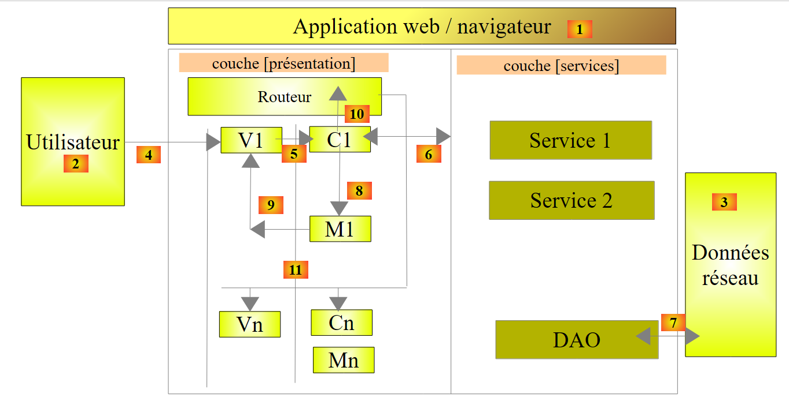 |
أولاً، يجب تحديد موقع هذه البنية:
- في [1]، نحن داخل متصفح؛
- في [2]، يتفاعل المستخدم مع العروض التي يعرضها المتصفح؛
- في [3]، يتم البحث عن البيانات على الشبكة، غالبًا من خدمات الويب؛
يتفاعل المستخدم مع الواجهات: فهو يملأ النماذج ويقوم بالتحقق من صحتها. لنوضح هذه العملية باستخدام الواجهة V1 المذكورة أعلاه. سنفترض أنها الواجهة الأولية للتطبيق. وقد تم الحصول عليها بالطريقة التالية:
- يطلب المستخدم العرض الأولي للتطبيق URL بالشكل التالي: http://machine:port/contexte؛
- طلب المتصفح المستند المرتبط بـ URL. وتلقى المتصفح الصفحة HTML / CSS / JS من العرض V1؛
- ثم تولى جافا سكريبت المضمن في الصفحة زمام الأمور وسلّم التحكم إلى وحدة التحكم C1 [5]؛
- وقام هذا العنصر بإنشاء النموذج M1 [8] [9] الخاص بالعرض V1. وقد يتطلب إنشاء هذا النموذج استخدام خدمات داخلية [6] والاستعلام عن خدمات خارجية [7]؛
أمام المستخدم الآن عرض V1. لنفترض أنه نموذج. يقوم بملئه ثم بالتصديق عليه:
- في [4]، يقوم المستخدم بالتصديق على النموذج؛
- في [5]، سيتم معالجة هذا الحدث بواسطة إحدى طرق وحدة التحكم C1؛
إذا كان الحدث لا يؤدي إلا إلى تغيير بسيط في العرض V1 (إخفاء/إظهار الحقول)، فإن وحدة التحكم C1 ستقوم بتعديل النموذج M1 الخاص بالعرض V1 ثم تعرض العرض V1 مرة أخرى. وللقيام بذلك، قد يحتاج إلى إحدى خدمات الطبقة [services] أو [6].
إذا كان الحدث يتطلب بيانات خارجية:
- في [6]، سيطلب وحدة التحكم C1 من الطبقة [DAO] الحصول عليها؛
- في [7]، ستقوم هذه الطبقة بإجراء مكالمة واحدة أو أكثر من AJAX للحصول عليها؛
- في [8] و [9]، سيتم تعديل النموذج M1 وعرض العرض V1؛
إذا أدى الحدث إلى تغيير في العرض، ففي الحالتين السابقتين، بدلاً من عرض العرض V1، سيطلب عنصر التحكم C1 عرضًا جديدًا URL [10]. وهذا عرض URL داخلي في المتصفح. ولا يؤدي ذلك على الفور إلى استدعاء HTTP لخادم الصفحات HTML. يتم معالجة هذا التغيير في URL بواسطة جهاز توجيه مُهيأ بحيث يقابل كل URL داخلي عرضًا V ووحدة التحكم C الخاصة به. ثم يقوم جهاز التوجيه بعرض العرض الجديد Vn. قبل العرض، يتولى وحدة التحكم Cn زمام الأمور، ويقوم ببناء النموذج Mn ثم يعرض العرض Vn [11]. وإذا لم تكن الصفحة HTML الخاصة بالعرض Vn مخزنة في ذاكرة التخزين المؤقت للمتصفح، فسيتم طلبها من خادم الصفحات HTML.
تشبه الطبقة [Présentation] في هذه البنية بنية JSF (Java Server Faces):
- تتوافق طريقة العرض V مع طريقة العرض من نوع Facelet في JSF؛
- المحرك C يقابل bean JSF، وهي فئة Java تحتوي في آن واحد على النموذج M للواجهة V ومديري أحداثها؛
تختلف الطبقة [Services] عن الطبقات [Services] التي اعتدنا عليها. في تطوير الويب، على جانب الخادم، غالبًا ما تكون البنية الطبقية كما يلي:
 |
في المثال أعلاه، لا تتواصل الطبقة [web] مع الطبقة [DAO] إلا عبر الطبقة [métier]. لا شيء يمنعنا من إدراج مرجع في الطبقة [web] إلى الطبقة [DAO] مما يسمح بهذا التواصل. لكننا نمنع أنفسنا من ذلك.
مع Angular، لا نمنع أنفسنا من ذلك. وبذلك تصبح البنية كما يلي:
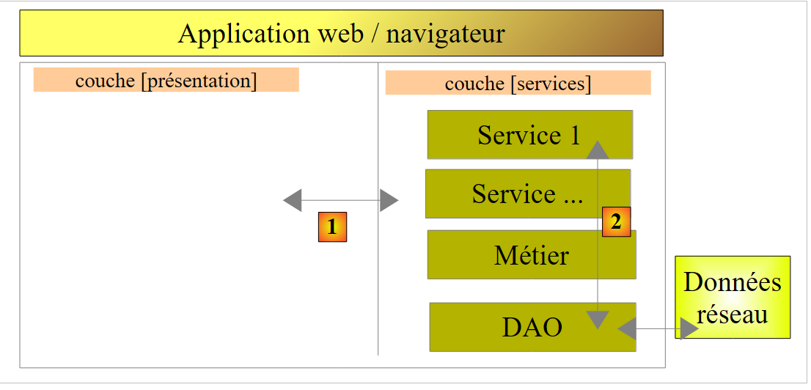 |
- في [1]، يمكن للطبقة [présentation] التواصل مباشرةً مع أي خدمة؛
- في [2]، تتعرف الخدمات على بعضها البعض. ويمكن لأي خدمة أن تستخدم خدمة أخرى أو أكثر.
3.3. طرق عرض عميل Angular
سبق عرض طرق عرض عميل Angular في الفقرة 1.3.3. لتسهيل قراءة هذا الفصل الجديد، نعيد عرضها هنا. طريقة العرض الأولى هي كما يلي:
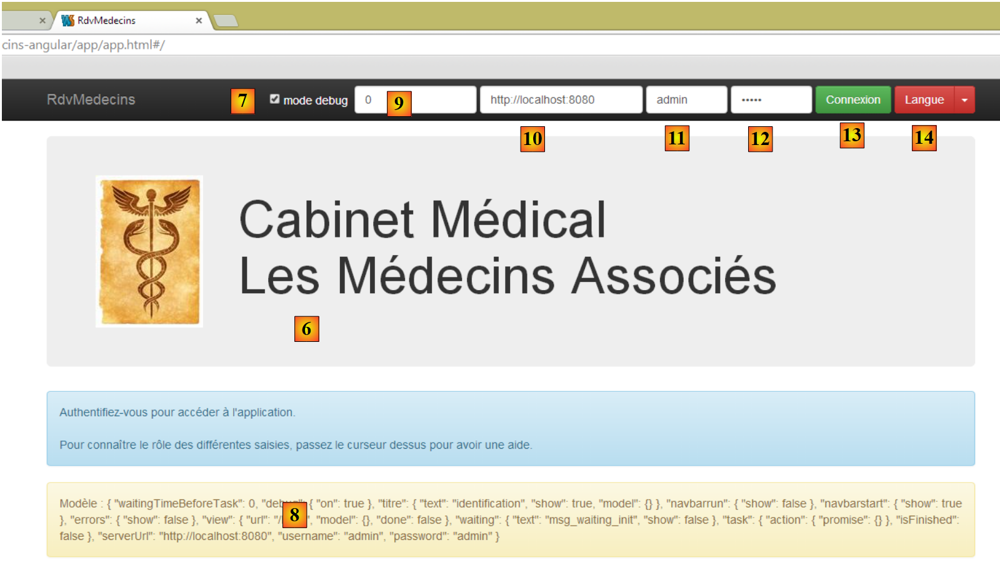 |
- في [6]، صفحة الدخول إلى التطبيق. وهو تطبيق لحجز المواعيد لدى الأطباء؛
- في [7]، مربع اختيار يتيح التبديل بين وضع [debug] أو عدمه. ويتميز هذا الوضع بوجود الإطار [8] الذي يعرض نموذج العرض الحالي؛
- في [9]، مدة انتظار مصطنعة بالمللي ثانية. قيمتها الافتراضية هي 0 (لا يوجد انتظار). إذا كانت N هي قيمة مدة الانتظار هذه، فسيتم تنفيذ أي إجراء يقوم به المستخدم بعد فترة انتظار مدتها N مللي ثانية. وهذا يتيح رؤية إدارة الانتظار التي يطبقها التطبيق؛
- في [10]، يمثل URL لخادم Spring 4. إذا اتبعنا ما سبق، فسيكون [http://localhost:8080]؛
- في [11] و [12]، اسم المستخدم وكلمة المرور لمن يرغب في استخدام التطبيق. يوجد مستخدمان: admin/admin (login/password) مع دور (ADMIN) و user/user مع دور (USER). الدور ADMIN هو الوحيد الذي يمتلك حق استخدام التطبيق. أما الدور USER فهو موجود فقط لإظهار الرد الذي يقدمه الخادم في حالة الاستخدام هذه؛
- في [13]، الزر الذي يتيح الاتصال بالخادم؛
- في [14]، لغة التطبيق. هناك لغتان: الفرنسية كإعداد افتراضي والإنجليزية.
 |
- في [1]، يتم الاتصال؛
 |
- بمجرد تسجيل الدخول، يمكن اختيار الطبيب الذي ترغب في حجز موعد معه [2] ويوم الموعد [3]؛
- نطلب في [4] الاطلاع على جدول مواعيد الطبيب المختار لليوم المحدد؛
 |
- بمجرد الحصول على جدول مواعيد الطبيب، يمكن حجز موعد [5]؛
 |
- في [6]، يتم اختيار المريض للموعد وتأكيد هذا الاختيار في [7]؛
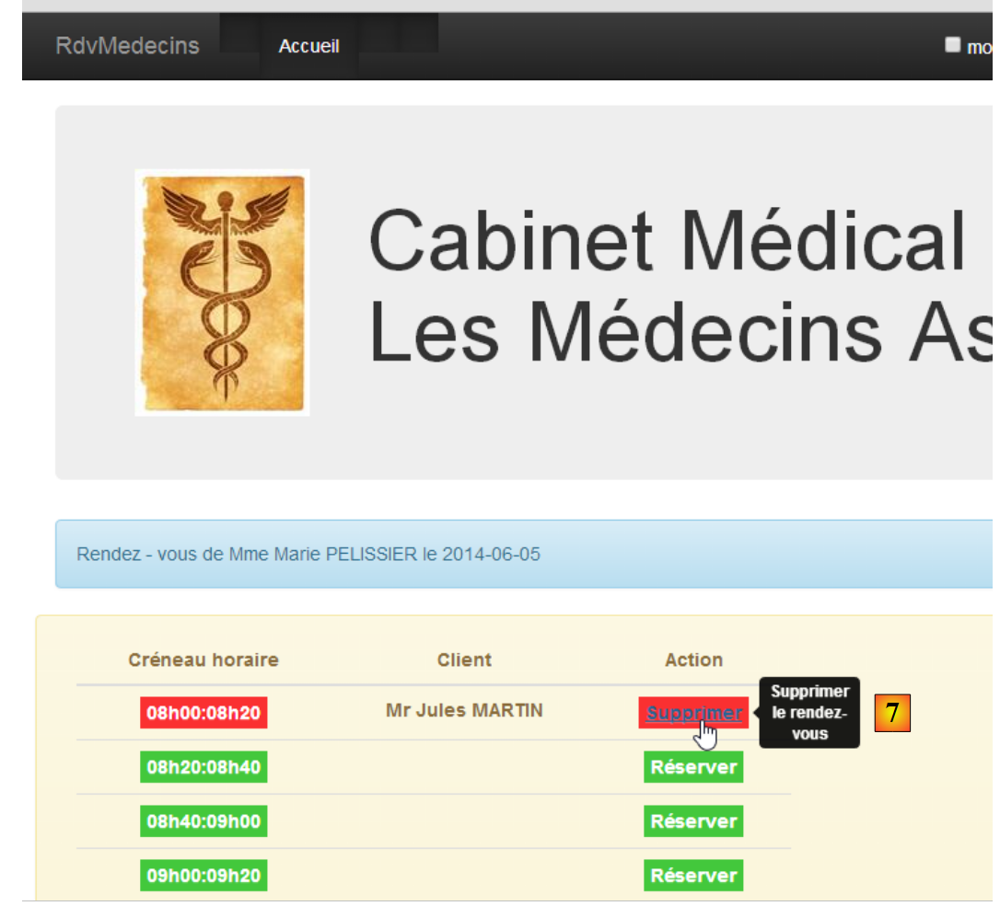 |
بمجرد تأكيد الموعد، يتم إرجاعنا تلقائيًا إلى التقويم حيث يتم الآن تسجيل الموعد الجديد. ويمكن حذف هذا الموعد لاحقًا في [7].
تم وصف الوظائف الرئيسية. وهي بسيطة. أما الوظائف التي لم يتم وصفها فهي وظائف التنقل للعودة إلى عرض سابق. لنختتم بإدارة اللغة:
 |
- في [1]، ننتقل من الفرنسية إلى الإنجليزية؛
2

- إلى [2]، تتحول الواجهة إلى اللغة الإنجليزية، بما في ذلك التقويم؛
3.4. إعداد مشروع Angular
سنقوم ببناء عميل Angular الخاص بنا بشكل تدريجي. نستخدم IDE Webstorm.
لنقم بإنشاء مجلد فارغ [rdvmedecins-angular-v1] ثم نفتحه باستخدام Webstorm:
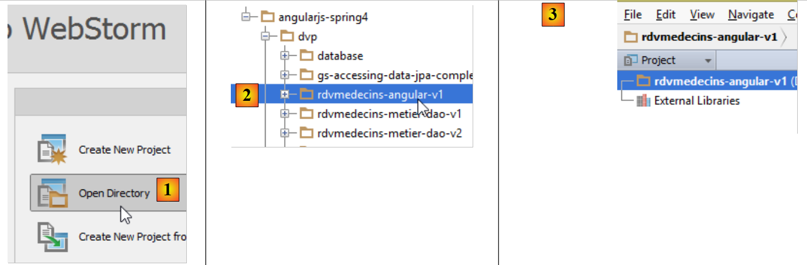 |
- في [1]، نفتح مجلدًا؛
- في [2]، نحدد المجلد الذي أنشأناه؛
- في [3]، نحصل على مشروع Webstorm فارغ؛
 |
- في [4]، يتم تكوين المشروع عبر الخيار [File / Settings]؛
- في [5] و [6]، يتم تكوين الخاصية [Spelling] التي تتحكم في التدقيق الإملائي. هذه الخاصية نشطة بشكل افتراضي. ونظرًا لأن البرنامج الذي تم تنزيله باللغة الإنجليزية، فإن تعليقاتنا باللغة الفرنسية على البرامج سيتم تمييزها على أنها أخطاء إملائية محتملة. لذا، نقوم بتعطيل التدقيق الإملائي [7]؛
 |
- في [8]، نقوم بإنشاء ملف جديد؛
- في [9]، نختار إنشاء الملف [package.json] الذي يصف التطبيق باستخدام صيغة JSON؛
- في [10]، يتم تعديل الملف الذي تم إنشاؤه كما هو موضح في [11]؛
- في [12]، يتم حفظ هذا الملف في كل من [package.json] و [bower.json]؛
 |
- في [13]، يتم إعادة تهيئة المشروع؛
 |
- في [14]، نقوم بتكوين الخاصية [Javascript / Bower] التي ستسمح لنا بتعريف مكتبات جافا سكريبت التي نحتاجها؛
- في [15]، حدد الملف [bower.json] الذي أنشأناه للتو؛
 |
- في [16]، نضيف مكتبة جافا سكريبت؛
- في [17]، تُعرض جميع مكتبات جافا سكريبت القابلة للتنزيل؛
- في [18]، يمكننا إدخال معيار لتصفية القائمة [17]. هنا، نحدد أننا نريد مكتبة [Angular JS]؛
- في [19]، تظهر خصائص المكتبة. نرى هنا أن الإصدار 1.2.18 من Angular سيتم تنزيله؛
- في [20]، يتم تنزيلها؛
 |
- في [21]، نرى أنه تم تنزيلها؛
- في [22]، نرى الإصدار الذي تم تنزيله. وهو في الواقع الإصدار 1.2.19؛
- في [23]، نرى أحدث إصدار متاح؛
 |
- في [24]، باتباع نفس الخطوات السابقة، يتم تنزيل المكتبات التالية:
لتشفير السلسلة "user:password" باستخدام Base64؛ | ||
لتدويل التقويم | ||
لتوجيه عناصر URL الداخلية للتطبيق إلى وحدة التحكم والعرض المناسبين؛ | ||
يتيح تدويل العروض. وهو مشروع مستقل عن Angular. هنا، سيتم استخدام لغتين: الفرنسية والإنجليزية؛ | ||
يوفر مكونات مرئية متوافقة مع Bootstrap. سنستخدم هنا تقويمه؛ | ||
إطار عمل CSS Bootstrap. سيُستخدم لبناء العروض؛ | ||
يوفر مكونًا مرئيًا من نوع "جدول". وهو "متجاوب" بمعنى أنه يمكنه التكيف مع حجم الشاشة؛ | ||
يوفر مكونًا من نوع "قائمة منسدلة"؛ |
 |
- في [25]، تم تثبيت المكتبات التي تم تنزيلها في المجلد [bower_components]؛
- في [26]، نرى أن المكتبة JQuery قد تم تنزيلها. وذلك لأن Bootstrap يستخدمها. نظام تثبيت تبعيات جافا سكريبت لمشروع ما مشابه لنظام Maven في عالم جافا: إذا كانت المكتبة التي تم تنزيلها تحتوي بدورها على تبعيات، يتم تنزيل هذه التبعيات تلقائيًا؛
لقد تغير الملف [bower.json]:
تم تسجيل جميع التبعيات التي تم تنزيلها في الملف.
3.5. الصفحة الأولية لعميل Angular
نقوم بإنشاء نسخة أولية من الصفحة الرئيسية لعميل Angular:
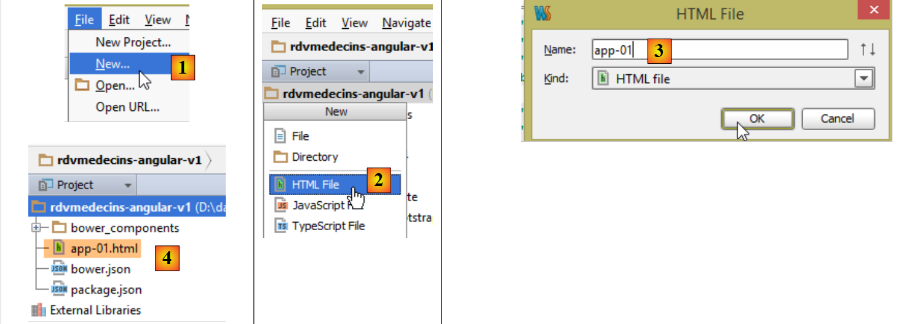 |
- في [1] و [2]، ونقوم بإنشاء ملف HTML باسم [app-01] و[3] و[4]؛
سيكون الملف [app-01.html] صفحتنا الرئيسية لفترة من الوقت. سنقوم فيه بتكوين استيراد الملفين CSS و JS اللذين يحتاجهما التطبيق:
<!DOCTYPE html>
<html>
<head>
<title>RdvMedecins</title>
<!-- META -->
<meta http-equiv="Content-Type" content="text/html; charset=utf-8">
<meta name="viewport" content="width=device-width, initial-scale=1.0">
<meta name="description" content="Angular client for RdvMedecins">
<meta name="author" content="Serge Tahé">
<!-- CSS -->
<link href="bower_components/bootstrap/dist/css/bootstrap.min.css" rel="stylesheet" />
<link href="bower_components/bootstrap/dist/css/bootstrap-theme.min.css" rel="stylesheet"/>
<link href="bower_components/bootstrap-select/bootstrap-select.min.css" rel="stylesheet"/>
<link href="bower_components/footable/css/footable.core.min.css" rel="stylesheet"/>
</head>
<body>
<div class="container">
<h1>Rdvmedecins - v1</h1>
</div>
<!-- Bootstrap core JavaScript ================================================== -->
<script type="text/javascript" src="bower_components/jquery/dist/jquery.min.js"></script>
<script type="text/javascript" src="bower_components/bootstrap/dist/js/bootstrap.min.js"></script>
<script type="text/javascript" src="bower_components/bootstrap-select/bootstrap-select.min.js"></script>
<script type="text/javascript" src="bower_components/footable/dist/footable.min.js"></script>
<!-- AngularJS -->
<script type="text/javascript" src="bower_components/angular/angular.min.js"></script>
<script type="text/javascript" src="bower_components/angular-ui-bootstrap-bower/ui-bootstrap-tpls.min.js"></script>
<script type="text/javascript" src="bower_components/angular-route/angular-route.min.js"></script>
<script type="text/javascript" src="bower_components/angular-translate/angular-translate.min.js"></script>
<script type="text/javascript" src="bower_components/angular-base64/angular-base64.min.js"></script>
</body>
</html>
- السطران 11-12: الملفات CSS لـ Bootstrap؛
- السطر 13: الملف CSS للمكون [boostrap-select]؛
- السطر 14: الملف CSS للمكون [footable]؛
- الأسطر 21-24: ملفات JS لمكونات Bootstrap؛
- السطر 21: مكونات Bootstrap مدعومة بـ JQuery؛
- السطر 22: ملف JS الخاص بـ Bootstrap؛
- السطر 23: ملف JS لمكون [boostrap-select]؛
- السطر 24: الملف JS الخاص بالمكون [footable]؛
- الأسطر 26-30: ملفات JS الخاصة بـ Angular والمشاريع المرتبطة بها؛
- السطر 26: ملف JS الخاص بـ Angular. يجب تحميله بعد JQuery في حالة استخدام هذه المكتبة؛
- السطر 27: ملف JS الخاص بمشروع [angular-ui-bootstrap]؛
- السطر 28: الملف JS الخاص بالموجه [angular-route]؛
- السطر 29: الملف JS الخاص بوحدة تدويل تطبيقات Angular؛
- السطر 30: الملف JS الخاص بالوحدة النمطية [angular-base64]؛
يمكن التحقق من صحة الملف [app-01.html]:
 |
- في [1]، يُطلب فحص الكود؛
- في [2]، النتيجة عندما يكون كل شيء على ما يرام؛
يُنصح بإجراء هذا الفحص المنهجي للكود قبل تنفيذه. هنا، يتيح هذا الفحص اكتشاف أي خطأ في مرجع الملفين CSS و JS. إذا كان المسار غير صحيح، فسيشير فاحص الكود إلى ذلك.
- في [3]، يمكن تحميل الصفحة في متصفح باستخدام أداة تصحيح الأخطاء. ونحصل على النتيجة التالية في المتصفح:
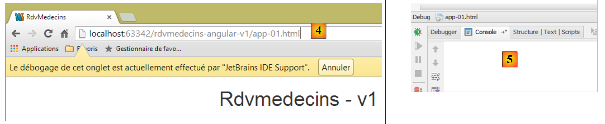 |
- في [4]، تم تقديم الصفحة [app-01.html] بواسطة خادم داخلي في Webstorm يعمل هنا على المنفذ 63342؛
- في [5]، وحدة التحكم الخاصة بمصحح الأخطاء. لو حدثت أخطاء، لكانت ظهرت هنا. وهنا أيضًا تظهر مخرجات الشاشة الناتجة عن الأمر [console.log(expression)] في جافا سكريبت. سنستخدم هذه الإمكانية بكثرة؛
يتيح وضع التصحيح تعديل الصفحة في Webstorm ومشاهدة نتائج هذه التعديلات في المتصفح دون الحاجة إلى إعادة تحميل الصفحة. لذا، إذا أضفنا السطر 3 أدناه:
<div class="container">
<h1>Rdvmedecins - v1</h1>
<h2>Version 1</h2>
</div>
ثم نعود إلى المتصفح، نلاحظ أن الصفحة قد تغيرت:
 |
3.6. التعرف على Bootstrap
سنقوم الآن بتوضيح بعض ميزات Bootstrap المستخدمة في التطبيق. لا أملك سوى معرفة محدودة بهذا الإطار، اكتسبتها من خلال نسخ ولصق الأكواد التي عثرت عليها على الإنترنت. سأشرح دور الفئات CSS التي أعتقد أنني أفهمها. وسأمتنع عن التعليق على الفئات الأخرى.
3.6.1. المثال 1
في Angular، تكون العمليات التي تسترد المعلومات من مصادر خارجية غير متزامنة. وهذا يعني أن العملية تُطلق ويتم العودة فورًا إلى الواجهة التي يمكن للمستخدم الاستمرار في التفاعل معها. ويتم إخطار التطبيق بانتهاء العملية عن طريق حدث. تتم معالجة هذا الحدث بواسطة دالة JS التي يمكنها بعد ذلك إثراء العرض الحالي أو تغييره. إذا كان من المحتمل أن تستغرق العملية وقتًا طويلاً، فمن المفيد منح المستخدم إمكانية إلغائها. سنقدم له هذه الإمكانية بشكل منهجي. وللقيام بذلك، سنستخدم شريطًا من Bootstrap:

للحصول على هذه النتيجة، نقوم بنسخ [app-01.html] إلى [app-02.html] ونقوم بتعديل الأسطر التالية:
<div class="container">
<h1>Rdvmedecins - v1</h1>
<div class="alert alert-warning">
<h1>Opération en cours. Veuillez patienter...
<button class="btn btn-primary pull-right">Annuler</button>
<img src="assets/images/waiting.gif" alt=""/>
</h1>
</div>
</div>
- السطر 1: تحدد الفئة CSS [container] منطقة عرض داخل المتصفح؛
- السطر 3: تعرض الفئة CSS [alert] منطقة ملونة. تستخدم الفئة [alert-warning] لونًا محددًا مسبقًا؛
- السطر 5: تقوم الفئة [btn] بتزيين زر. وتمنحه الفئة [btn-primary] لونًا معينًا. وتقوم الفئة [pull-right] بنقله إلى يمين شريط التنبيه؛
- السطر 6: صورة متحركة للانتظار؛
3.6.2. المثال 2
ستحمل طرق العرض المختلفة للتطبيق عنوانًا مشتركًا:

للحصول على هذه النتيجة، نقوم بنسخ [app-01.html] إلى [app-03.html] ونقوم بتعديل الأسطر التالية:
<div class="container">
<h1>Rdvmedecins - v1</h1>
<!-- جومبوترون بوتستراب -->
<div class="jumbotron">
<div class="row">
<div class="col-md-2">
<img src="assets/images/caduceus.jpg" alt="RvMedecins"/>
</div>
<div class="col-md-10">
<h1>Les Médecins associés</h1>
</div>
</div>
</div>
</div>
- يتم الحصول على المنطقة الملونة باستخدام الفئة [jumbotron] في السطر 4؛
- السطر 5: تحدد الفئة [row] سطرًا مكونًا من 12 عمودًا؛
- السطر 6: تحدد الفئة [col-md-2] منطقة مكونة من عمودين في السطر؛
- السطر 7: تُوضع صورة في هذين العمودين؛
- السطور 9-11: يُوضع النص في الأعمدة العشرة المتبقية؛
3.6.3. المثال 3
ستحتوي طرق العرض على شريط تحكم علوي. سيحتوي هذا الشريط على خيارات التحكم والروابط والأزرار. كما سيحتوي أيضًا على عناصر النموذج. على سبيل المثال:
 |
للحصول على هذه النتيجة، نقوم بنسخ [app-01.html] إلى [app-04.html] ونقوم بتعديل الأسطر التالية:
<div class="container">
<h1>Rdvmedecins - v1</h1>
<div class="navbar navbar-inverse navbar-fixed-top" role="navigation">
<div class="container">
<div class="navbar-header">
<button type="button" class="navbar-toggle" data-toggle="collapse" data-target=".navbar-collapse">
<span class="sr-only">Toggle navigation</span>
<span class="icon-bar"></span>
<span class="icon-bar"></span>
<span class="icon-bar"></span>
</button>
<a class="navbar-brand" href="#">RdvMedecins</a>
</div>
<div class="navbar-collapse collapse">
<form class="navbar-form navbar-right">
<!-- وضع التصحيح -->
<label style="width: 100px">
<input type="checkbox">
<span style="color: white">Debug</span>
</label>
<!-- نموذج تسجيل الدخول -->
<div class="form-group">
<input type="text" class="form-control" placeholder="Temps d'attente"
style="width: 150px"/>
<input type="text" class="form-control" placeholder="URL du service web"
style="width: 200px"/>
<input type="text" class="form-control" placeholder="Login"
style="width: 100px"/>
<input type="password" class="form-control" placeholder="Mot de passe"
style="width: 100px"/>
</div>
<button class="btn btn-success">
Connexion
</button>
</form>
</div>
<button class="btn btn-success">
Connexion
</button>
</form>
</div>
</div>
</div>
</div>
- السطر 4: ستقوم الفئة [navbar] بتحديد نمط شريط التنقل. تمنحه الفئة [navbar-inverse] خلفية سوداء. ستعمل الفئة [navbar-fixed-top] على ضمان بقاء شريط التنقل في أعلى الشاشة عند «التمرير» في الصفحة المعروضة بواسطة المتصفح؛
- الأسطر 6-14: تحدد المنطقة [1]. وهي عادةً سلسلة من الفئات التي لا أفهمها. أستخدم المكون كما هو؛
- السطر 15: يحدد منطقة «متجاوبة» في شريط الأوامر. على الهاتف الذكي، تختفي هذه المنطقة داخل منطقة القائمة؛
- السطر 16: تقوم الفئة [navbar-form] بتصميم نموذج في شريط الأوامر. أما الفئة [navbar-right] فتضعه على يمين هذا النموذج؛
- الأسطر 23-32: مناطق الإدخال الأربع لنموذج السطر 17 [3]. وهي موجودة داخل الفئة [form-group] التي تُزيّن عناصر النموذج، وكل منها يحمل الفئة [form-control]؛
- السطر 33: الفئة [btn] التي سبق أن تناولناها، مع إضافة الفئة [btn-success] التي تمنحها لونها الأخضر؛
3.6.4. المثال 4
ستسمح شريط الأوامر بتغيير اللغة بفضل قائمة منسدلة:
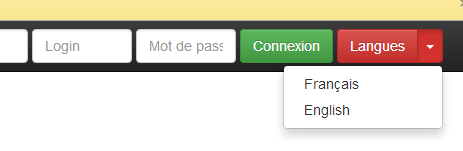
للحصول على هذه النتيجة، نقوم بنسخ [app-01.html] إلى [app-05.html] ونضيف الأسطر التالية إلى شريط التحكم:
<button class="btn btn-success">
Connexion
</button>
<!-- اللغات -->
<div class="btn-group">
<button type="button" class="btn btn-danger">
Langues
</button>
<button type="button" class="btn btn-danger dropdown-toggle" data-toggle="dropdown">
<span class="caret"></span>
<span class="sr-only">Toggle Dropdown</span>
</button>
<ul class="dropdown-menu" role="menu">
<li>
<a href="">Français</a>
</li>
<li>
<a href="">English</a>
</li>
</ul>
</div>
</form>
الأسطر المضافة هي الأسطر من 4 إلى 21.
- السطر 5: تُحدد الفئة [btn-group] مظهر مجموعة من الأزرار. يوجد زران في السطرين 6 و9؛
- الأسطر 6-8: يحدد الزر الأول نص القائمة المنسدلة. وتمنحه الفئة [btn-danger] لونه الأحمر؛
- الأسطر 9-12: الزر الثاني هو زر القائمة المنسدلة. وهو ملاصق للزر الأول، مما يعطي انطباعًا بوجود مكون واحد؛
- السطر 10: يعرض السهم المتجه لأسفل الذي يشير إلى أن الزر عبارة عن قائمة منسدلة؛
- السطر 11: من أجل «قارئات الشاشة»؛
- الأسطر 13-20: عناصر القائمة المنسدلة هي عناصر قائمة غير مرتبة؛
3.6.5. المثال 5
لتأكيد إرسال النموذج أو للتنقل، سيتوفر للمستخدم في شريط الأوامر خيارات أو أزرار كما يلي:
 |
تم تثبيت خيارات القائمة في [1]. للحصول على هذه النتيجة، نقوم بنسخ [app-01.html] في [app-06.html] ونضيف الأسطر التالية:
<div class="navbar navbar-inverse navbar-fixed-top" role="navigation">
<div class="container">
<div class="navbar-header">
...
</div>
<!-- خيارات القائمة -->
<div class="collapse navbar-collapse">
<ul class="nav navbar-nav">
<li class="active">
<a href="">
<span>Home</span>
</a>
</li>
<li class="active">
<a href="">
<span>Agenda</span>
</a>
</li>
<li class="active">
<a href="">
<span>Valider</span>
</a>
</li>
<li class="active">
<a href="">
<span>Annuler</span>
</a>
</li>
</ul>
<!-- أزرار اليمين -->
<form class="navbar-form navbar-right" role="form">
...
</form>
</div>
</div>
</div>
</div>
- يتم الحصول على خيارات القائمة من خلال الأسطر 8-29. وهذه أيضًا عناصر من قائمة <ul>. تعمل الفئة [active] على جعل النص لامعًا، مما يشير إلى أنه يمكن النقر فوق الخيار.
3.6.6. المثال 6
سنعرض الأطباء والعملاء في قوائم منسدلة كما يلي:
 |
القائمة المنسدلة المستخدمة ليست مكونًا أصليًا في Bootstrap. إنها المكون [bootstrap-select] (http://silviomoreto.github.io/bootstrap-select/). للحصول على هذه النتيجة، نقوم بنسخ المكون [app-01.html] إلى [app-07.html] ونضيف الأسطر التالية:
<!DOCTYPE html>
<html>
<head>
...
<link href="bower_components/bootstrap-select/bootstrap-select.min.css" rel="stylesheet"/>
</head>
<body>
<div class="container">
<h1>Rdvmedecins - v1</h1>
<h2><label for="medecins">Médecins</label></h2>
<select id="medecins" data-style="btn btn-primary" class="selectpicker">
<option value="1">Mme Marie PELISSIER</option>
<option value="1">Mr Jacques BROMARD</option>
<option value="1">Mr Philippe JANDOT</option>
<option value="1">Mme Justine JACQUEMOT</option>
</select>
</div>
<!-- Bootstrap core JavaScript ================================================== -->
...
<script type="text/javascript" src="bower_components/bootstrap-select/bootstrap-select.min.js"></script>
<!-- نص برمجي محلي -->
<script>
$('.selectpicker').selectpicker();
</script>
</body>
</html>
- السطر 5: يجب استيراد ورقة الأنماط الخاصة بـ [bootstrap-select]؛
- السطر 13: يتم استخدام السمة [data-style] بواسطة [bootstrap-select]. وهي تُستخدم لتعيين نمط للقائمة المنسدلة. هنا، نُعطيها شكل زر أزرق [btn-primary]؛
- السطر 13: يتم استخدام السمة [class] في السطر 23. يمكن أن تكون أي قيمة؛
- الأسطر 14-17: عناصر القائمة المنسدلة. توجد هنا العلامات HTML التقليدية؛
- السطر 22: يجب استيراد JS من [bootstrap-select]؛
- الأسطر 24-26: برنامج نصي JS يُنفَّذ عند انتهاء تحميل الصفحة؛
- السطر 25: تعليمة JQuery. يتم تطبيق الطريقة [selectpicker] (selectpicker()) على جميع العناصر التي تحمل الفئة [selectpicker] ($('.selectpicker')). لا يوجد سوى عنصر واحد، وهو العلامة <select> في السطر 13. تأتي الطريقة [selectpicker] من الملف JS المشار إليه في السطر 22؛
3.6.7. المثال 7
لعرض جدول مواعيد الطبيب، سنستخدم جدولًا «متجاوبًا» مقدمًا من المكتبة JS [footable]:
 |
- في [1]: الجدول مع العرض العادي؛
- في [2]: الجدول عند تصغير حجم نافذة المتصفح. ينتقل العمود [Action] تلقائيًا إلى السطر التالي. وهذا ما يُسمى مكونًا «متجاوبًا» أو ببساطة قابلًا للتكيف.
نقوم بنسخ [app-01.html] إلى [app-08.html] ونضيف الأسطر التالية:
...
<link href="bower_components/footable/css/footable.core.min.css" rel="stylesheet"/>
<link href="assets/css/rdvmedecins.css" rel="stylesheet"/>
...
<div class="container">
<h1>Rdvmedecins - v1</h1>
<div class="row alert alert-warning">
<div class="col-md-6">
<table id="creneaux" class="table">
<thead>
<tr>
<th data-toggle="true">
<span>Créneau horaire</span>
</th>
<th>
<span>Client</span>
</th>
<th data-hide="phone">
<span>Action</span>
</th>
</thead>
<tbody>
<tr>
<td>
<span class='status-metro status-active'>
9h00-9h20
</span>
</td>
<td>
<span></span>
</td>
<td>
<a href="" class="status-metro status-active">
Réserver
</a>
</td>
</tr>
<tr>
<td>
<span class='status-metro status-suspended'>
9h20-9h40
</span>
</td>
<td>
<span>Mme Paule MARTIN</span>
</td>
<td>
<a href="" class="status-metro status-suspended">
Supprimer
</a>
</td>
</tr>
</tbody>
</table>
</div>
</div>
</div>
...
<script src="bower_components/footable/dist/footable.min.js" type="text/javascript"></script>
- السطران 2 و60 موجودان بالفعل في [app-01.html]. وهما الملفان CSS وJS المقدمين من المكتبة [footable]؛
- تشير السطر 3 إلى الملف CSS التالي:
@CHARSET "UTF-8";
#فترات th {
text-align: center;
}
#فواصل td {
text-align: center;
font-weight: bold;
}
.status-metro {
display: inline-block;
padding: 2px 5px;
color:#fff;
}
.status-metro.status-active {
background: #43c83c؛
}
.status-metro.status-suspended {
background: #fa3031;
}
تأتي الأنماط [status-*] من مثال لاستخدام الجدول [footable] الموجود على موقع المكتبة.
- السطر 8: يضع الجدول في سطر [row] وإطار ملون [alert alert-warning]؛
- السطر 9: سيشغل الجدول 6 أعمدة [col-md-6]؛
- السطر 10: يتم تنسيق الجدول HTML بواسطة Bootstrap [class='table']؛
- السطر 13: تشير السمة [data-toggle] إلى العمود الذي يحتوي على الرمز [+/-] الذي يقوم بفتح/طي السطر؛
- السطر 19: تشير السمة [data-hide='phone'] إلى أنه يجب إخفاء العمود إذا كان حجم الشاشة بحجم شاشة الهاتف. يمكن أيضًا استخدام القيمة «tablet»؛
3.6.8. المثال 8
لمساعدة المستخدم، سنقوم بإنشاء تلميحات المساعدة (tooltip) حول المكونات الرئيسية للعروض:
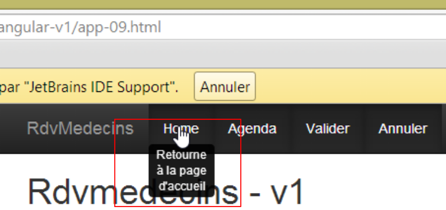 |
للحصول على هذه النتيجة، نقوم بنسخ [app-01.html] إلى [app-09.html] ونضيف الأسطر التالية:
<!DOCTYPE html>
<html ng-app="rdvmedecins">
<head>
...
</head>
<body>
<div class="container">
<h1>Rdvmedecins - v1</h1>
<div class="navbar navbar-inverse navbar-fixed-top" role="navigation">
<div class="container">
<div class="navbar-header">
<button type="button" class="navbar-toggle" data-toggle="collapse" data-target=".navbar-collapse">
<span class="sr-only">Toggle navigation</span>
<span class="icon-bar"></span>
<span class="icon-bar"></span>
<span class="icon-bar"></span>
</button>
<a class="navbar-brand" href="#">RdvMedecins</a>
</div>
<!-- خيارات القائمة -->
<div class="collapse navbar-collapse">
<ul class="nav navbar-nav">
<li class="active">
<a href="">
<span tooltip="Retourne à la page d'accueil" tooltip-placement="bottom">Home</span>
</a>
</li>
<li class="active">
<a href="">
<span tooltip="Affiche l'agenda" tooltip-placement="top">Agenda</span>
</a>
</li>
<li class="active">
<a href="">
<span tooltip="Valide le rendez-vous" tooltip-placement="right">Valider</span>
</a>
</li>
<li class="active">
<a href="">
<span tooltip="Annule l'opération en cours" tooltip-placement="left">Annuler</span>
</a>
</li>
</ul>
</div>
</div>
</div>
</div>
<!-- Bootstrap core JavaScript ================================================== -->
<...
<script type="text/javascript" src="bower_components/angular-ui-bootstrap-bower/ui-bootstrap-tpls.min.js"></script>
<!-- نص برمجي محلي -->
<script>
// --------------------- وحدة Angular
angular.module("rdvmedecins", ['ui.bootstrap']);
</script>
</body>
</html>
يتم توفير فقاعات المساعدة بواسطة المكتبة [angular-ui-bootstrap] التي تعتمد بدورها على المكتبة [angular]. ويستورد السطر 50 المكتبة [angular-ui-bootstrap]. لتنفيذ مكونات المكتبة [angular-ui-bootstrap]، يتعين علينا إنشاء وحدة Angular. ويتم ذلك في الأسطر 52-55. تحدد هذه الأسطر وحدة Angular باسم [rdvmedecins] (المعلمة الأولى). يمكن لوحدة Angular استخدام وحدات Angular أخرى. وهذا ما يُسمى بتبعيات الوحدة. يتم توفيرها في مصفوفة كمعلمة ثانية للدالة [angular.module]. هنا، يتم توفير الوحدة المسماة [ui.bootstrap] بواسطة المكتبة [angular-ui-bootstrap]. وهذه الوحدة هي التي ستوفر لنا فقاعات المساعدة.
يُعرّف السطر 54 وحدة Angular. بشكل افتراضي، لا يؤثر ذلك على الصفحة بأي شكل من الأشكال. نُشير إلى أن الصفحة يجب أن تُدار بواسطة Angular، من خلال ربطها بوحدة Angular. وهذا ما تم فعله في السطر 2. تربط السمة [ng-app='rdvmedecins'] الصفحة بالوحدة التي تم إنشاؤها في السطر 54. بعد ذلك، سيتم تحليل الصفحة بواسطة Angular. وسيتم اكتشاف السمات [tooltip] ومعالجتها بواسطة الوحدة النمطية [ui.bootstrap].
صيغة فقاعة المساعدة هي كما يلي:
<span tooltip="Retourne à la page d'accueil" tooltip-placement="bottom">Home</span>
في المثال أعلاه، نضيف فقاعة المساعدة إلى النص [Home]:
- [tooltip]: يحدد نص فقاعة المساعدة؛
- [tooltip-placement]: يحدد موضعها (أسفل، أعلى، يسار، يمين)؛
تسمح Angular JS بإضافة علامات أو سمات جديدة إلى تلك الموجودة بالفعل في لغة HTML. يتم هذا التوسيع للغة HTML باستخدام توجيهات Angular. هنا، تعد السمات [tooltip] و [tooltip-placement] سمات تم إنشاؤها بواسطة [angular-ui-bootstrap].
3.6.9. المثال 9
لمساعدة المستخدم على اختيار يوم الموعد، سنعرض عليه تقويمًا:
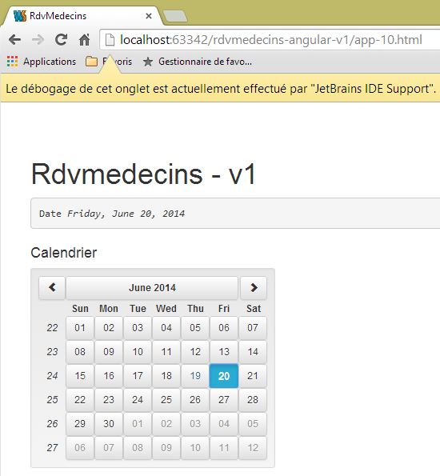
وكما هو الحال مع فقاعات المساعدة، يتم توفير هذا التقويم بواسطة المكتبة [angular-ui-bootstrap]. للحصول على هذه النتيجة، نقوم بنسخ [app-01.html] في [app-10.html] ونضيف الأسطر التالية:
<!DOCTYPE html>
<html ng-app="rdvmedecins">
<head>
...
<body>
<div class="container">
<h1>Rdvmedecins - v1</h1>
<div>
<pre>Date <em>{{jour | date:'fullDate'}}</em></pre>
<div class="row">
<div class="col-md-2">
<h4>Calendrier</h4>
<div style="display:inline-block; min-height:290px;">
<datepicker ng-model="jour" show-weeks="true" class="well"></datepicker>
</div>
</div>
</div>
</div>
</div>
</div>
...
<!-- نص برمجي محلي -->
<script>
// --------------------- وحدة Angular
angular.module("rdvmedecins", ['ui.bootstrap'])
</script>
</body>
</html>
وكما سبق، ترتبط الصفحة بوحدة Angular (السطران 2 و28). يتم تعريف التقويم بواسطة العلامة <datepicker> في السطر 16 التي تحددها مكتبة [angular-ui-bootstrap]:
- [show-weeks='true']: لعرض أرقام الأسابيع؛
- [class='well']: لإحاطة التقويم بمنطقة رمادية ذات زوايا مستديرة؛
- [ng-model='jour']: السمات [ng-*] هي سمات Angular. تشير السمة [ng-model] إلى بيانات سيتم وضعها في نموذج العرض. عندما ينقر المستخدم على تاريخ ما، سيتم وضع هذا التاريخ في المتغير [jour] في النموذج. يتم استخدام هذا المتغير في السطر 10. تسمح صيغة {{expression}} بتقييم تعبير مكون من عناصر النموذج. هنا، سيعرض {{jour}} قيمة المتغير [jour] في النموذج. من الميزات البارزة في Angular أن العرض سيتبع تلقائيًا التغييرات التي تطرأ على المتغير [jour]. وبالتالي، عندما يقوم المستخدم بتغيير التواريخ، ستظهر هذه التغييرات على الفور في السطر 10. وبشكل عام، فإن طريقة العمل هي كما يلي:
- يتم ربط العرض V بنموذج M؛
- تراقب Angular النموذج M وتقوم تلقائيًا بتحديث العرض V عند حدوث تغيير في النموذج M؛
يُطلق على صيغة {{jour|date}} اسم «مرشح». فالقيمة التي يتم عرضها ليست قيمة [jour]، بل قيمة [jour] التي تمت تصفيتها بواسطة مرشح يُسمى [date]. هذا المرشح مُعرَّف مسبقًا في Angular. ويُستخدم لتنسيق التواريخ. ويقبل معلمات تحدد التنسيق المطلوب. وهكذا، فإن التعبير {{jour | date:'fullDate'}} يشير إلى أننا نريد التنسيق الكامل للتاريخ، وهو هنا [Friday, June 20, 2014] لأن التقويم مضبوط على اللغة الإنجليزية افتراضيًا. وسنتناول مسألة تدويله قريبًا.
3.6.10. الخلاصة
لقد عرضنا عناصر إطار العمل CSS Bootstrap التي سنستخدمها لاحقًا. كانت هذه مكونات سلبية: لم تكن أحداثها مُدارة. وبالتالي، فإن النقر على الأزرار أو الروابط لم يكن يؤدي إلى أي شيء. سيتم إدارة هذه الأحداث باستخدام جافا سكريبت. من الممكن استخدام هذه اللغة دون الحاجة إلى أطر عمل، ولكن كما كان الحال في جانب الخادم، تفرض بعض أطر العمل نفسها في جانب العميل. وهذا هو الحال بالنسبة لإطار العمل Angular JS الذي يقدم طريقة جديدة للتعامل مع تطوير تطبيقات جافا سكريبت التي يتم تنفيذها عبر المتصفح. وسنقدمه الآن.
3.7. التعرف على Angular JS
سنقوم الآن بتوضيح بعض ميزات إطار العمل Angular JS المستخدمة في التطبيق. وقد تعرفنا بالفعل على بعضها:
- يتم تشغيل صفحة HTML بواسطة Angular JS إذا تم ربط وحدة نمطية بها:
<html ng-app="rdvmedecins">
- يتيح Angular إنشاء علامات وسمات جديدة HTML عبر التوجيهات:
- تتيح Angular إنشاء عوامل تصفية:
- تعرض الواجهة V النموذج M. تراقب Angular النموذج M وتقوم تلقائيًا بتحديث الواجهة V عند حدوث أي تغيير في النموذج M. يتم عرض قيمة متغير في النموذج M في الواجهة V من خلال:
سنبدأ بالتعمق في تنفيذ نمط التصميم «النموذج – العرض – وحدة التحكم» في Angular. دعونا نستعرض الروابط الموجودة بينها من منظور الهندسة المعمارية:
 |
- تعرض طريقة العرض V1 النموذج M1 الذي أنشأه وحدة التحكم C1. ولا يحتوي هذا الأخير على النموذج M1 فحسب، بل يحتوي أيضًا على معالجات أحداث العرض V1. نحن الآن في الدورة 5، 8، 9:
- [5]: يحدث حدث في العرض V1. يتم معالجته بواسطة وحدة التحكم C1؛
- ويقوم هذا المتحكم بمهمته [6-7] ثم يقوم بإنشاء النموذج M1 [8]؛
- [9]: تعرض طريقة العرض V1 النموذج الجديد M1. وكما ذكرنا، فإن هذه الخطوة الأخيرة تتم تلقائيًا. لا يوجد، كما هو الحال في أطر العمل الأخرى، عملية «دفع» صريحة لـ MVC (حيث يقوم C1 بدفع النموذج M1 إلى V1) أو عملية «سحب» صريحة (تقوم طريقة العرض V1 باسترداد النموذج M1 من C1). هناك عملية دفع ضمنية لا يراها المطور؛
- ثم تستأنف الدورة 5، 8، 9؛
3.7.1. المثال 1: نموذج MVC في Angular
سنستأنف مثال التقويم. لقد رأينا التوجيه الذي يولده:
<datepicker ng-model="jour" show-weeks="true" class="well"></datepicker>
تسمح هذه التوجيهية بسمات أخرى غير تلك المذكورة أعلاه، ومن بينها السمة [min-date] التي تحدد التاريخ الأدنى الذي يمكن اختياره في التقويم. سيكون هذا مفيدًا لنا. عندما يختار المستخدم تاريخًا للموعد، يجب أن يكون هذا التاريخ مساويًا أو أكبر من تاريخ اليوم الحالي. سنكتب إذن:
<datepicker ng-model="jour" ... min-date="dateMin"></datepicker>
حيث سيكون [dateMin] متغيرًا في قالب الصفحة، وقيمته هي تاريخ اليوم. سيؤدي ذلك إلى ظهور الصفحة التالية:
 |
- في [1]، نحن في 19 يونيو 2014. يشير المؤشر إلى أنه يمكن تحديد 19 يونيو؛
- في [2]، يشير المؤشر إلى أنه لا يمكن تحديد 18 يونيو؛
نقوم بنسخ [app-10.html] إلى [app-11.html] ونجري التعديلات التالية:
<!DOCTYPE html>
<html ng-app="rdvmedecins">
<head>
...
</head>
<body ng-controller="rdvMedecinsCtrl">
<div class="container">
<h1>Rdvmedecins - v1</h1>
<div>
<pre>Date <em>{{jour | date:'fullDate' }}</em></pre>
<div class="row">
<div class="col-md-2">
<h4>Calendrier</h4>
<div style="display:inline-block; min-height:290px;">
<datepicker ng-model="jour" show-weeks="true" class="well" min-date="minDate"></datepicker>
</div>
</div>
</div>
</div>
</div>
<!-- نواة Bootstrap JavaScript ================================================== -->
...
<!-- نص برمجي محلي -->
<script>
// --------------------- وحدة Angular
angular.module("rdvmedecins", ['ui.bootstrap']);
// وحدة التحكم
angular.module("rdvmedecins")
.controller('rdvMedecinsCtrl', ['$scope',
function ($scope) {
// التاريخ الأدنى
$scope.minDate = new Date();
}]);
</script>
</body>
</html>
لنستعرض أولاً البرنامج النصي المحلي في الأسطر 26-37:
- السطر 28: إنشاء الوحدة النمطية [rdvmedecins] مع اعتمادها على الوحدة النمطية [ui.bootstrap] التي توفر التقويم؛
- الأسطر 30-35: إنشاء وحدة تحكم. وهي التي ستحتفظ بنموذج صفحتنا. لن يكون هناك مدير أحداث هنا؛
- السطور 30-31: وحدة التحكم [rdvMedecinsCtrl] تنتمي إلى الوحدة النمطية [rdvmedecins]. يمكن إضافة أي عدد نريده من وحدات التحكم إلى الوحدة النمطية. في تطبيقنا سيكون لدينا:
- وحدة لإدارة التطبيق؛
- وحدة تحكم لكل عرض؛
- المعلمة الثانية للدالة [controller] هي مصفوفة بالصيغة ['O1', 'O2', ..., 'On', function(O1, O2, ..., On)]. أما المعلمة الأخيرة فهي الدالة التي تنفذ وحدة التحكم. ومعلماتها هي كائنات سيزودها Angular JS إلى الدالة.
لنعد إلى بنية تطبيق Angular:
 |
في المثال أعلاه، تحتوي وحدة التحكم C1 على مجموعة معالجات الأحداث الخاصة بالعرض V1 بالإضافة إلى نموذج M1 الخاص به. قد تحتاج معالجات الأحداث إلى خدمة واحدة أو أكثر من خدمات [6] لأداء مهامها. يتم تمرير جميع هذه الخدمات كمعلمات لدالة إنشاء وحدة التحكم:
خدمات Si هي كائنات فردية (singletons). يقوم Angular بإنشاء نسخة واحدة منها. يتم تحديدها بواسطة اسم Si. لماذا تظهر مرتين في الجدول أعلاه؟ أثناء التشغيل، يتم تصغير حجم نصوص JS. في عملية التصغير هذه، يصبح الجدول أعلاه كما يلي:
تفقد المعلمات أسماءها. لكن هذه الأسماء هي أسماء الخدمات. لذا من المهم الاحتفاظ بهذه الأسماء. ولهذا السبب يتم تمريرها كسلاسل أحرف كمعلمات تسبق الدالة. ولا تتغير سلاسل الأحرف خلال عملية التصغير. عندما يقوم Angular بإنشاء وحدة التحكم باستخدام المصفوفة الجديدة، سيستبدل a1 بـ S1، و a2 بـ S2، ... لذا فإن ترتيب المعلمات مهم. يجب أن يتطابق مع ترتيب الخدمات التي تسبق تعريف الدالة.
لنعد إلى تعريف وحدة التحكم [rdvMedecinsCtrl]:
// وحدة التحكم
angular.module("rdvmedecins")
.controller('rdvMedecinsCtrl', ['$scope',
function ($scope) {
// التاريخ الأدنى
$scope.minDate = new Date();
}]);
- السطران 3-4: الكائن الوحيد الذي يتم حقنه في وحدة التحكم هو الكائن $scope. وهو كائن مُعرَّف مسبقًا يمثل النموذج M للعروض المرتبطة بوحدة التحكم. لإثراء نموذج أحد العروض، يكفي إضافة حقول إلى الكائن $scope؛
- وهذا ما تم في السطر 6. يتم إنشاء الحقل [minDate] بقيمة تمثل تاريخ اليوم؛
تستخدم طريقة العرض V هذا النموذج M بالطريقة التالية:
<body ng-controller="rdvMedecinsCtrl">
<div class="container">
...
<div style="display:inline-block; min-height:290px;">
<datepicker ng-model="jour" show-weeks="true" class="well" min-date="minDate"></datepicker>
</div>
...
</div>
...
- السطر 1: يتم ربط نص الصفحة بوحدة التحكم [rdvMedecinsCtrl] بفضل السمة [ng-controller]. وهذا يعني أن كل ما يقع داخل العلامة <body> سيستخدم وحدة التحكم [rdvMedecinsCtrl] لإدارة أحداثه والحصول على نموذجه M. قد تعتمد صفحة HTML على عدة وحدات تحكم متداخلة أو غير متداخلة:
أعلاه:
- يعرض محتوى [div1] (الأسطر 1-10) النموذج M1 الذي تديره وحدة التحكم c1. يمكن أن تشير العلامات في هذه المنطقة إلى معالجات أحداث وحدة التحكم c1؛
- يعرض محتوى [div11] (الأسطر 3-4) القالب M11 الذي يديره وحدة التحكم c11 وكذلك القالب M1. هناك وراثة بين القوالب. يمكن لعلامات هذه المنطقة الإشارة إلى كل من معالجات الأحداث الخاصة بوحدة التحكم c11 ومعالجات الأحداث الخاصة بوحدة التحكم c1. ولا يمكنها الإشارة إلى القالب M12 الخاص بوحدة التحكم c12 ولا إلى معالجات الأحداث الخاصة بها. فالوحدة c12 غير معروفة في الواقع بين الأسطر 3-5؛
- الأسطر 7-9: يمكن اتباع منطق مشابه للمنطق الذي اتبعناه سابقًا؛
لنعد إلى كود التقويم:
<datepicker ng-model="jour" show-weeks="true" class="well" min-date="minDate"></datepicker>
يتم تهيئة السمة [min-date] بالقيمة [minDate] من النموذج. وبشكل ضمني [$scope.minDate]. ويتم البحث دائمًا عن الحقل في الكائن $scope.
3.7.2. المثال 2: توطين التواريخ
في الوقت الحالي، لا يفيدنا التقويم كثيرًا لأنه تقويم إنجليزي. يمكن توطينه:
 |
- في [1]، لدينا تقويم باللغة الفرنسية؛
- في [2]، نحوله إلى الإنجليزية؛
- في [3]، التقويم باللغة الإنجليزية؛
نقوم بنسخ الصفحة [app-11.html] إلى [app-12.html] ثم نعدل هذه الأخيرة على النحو التالي:
<!DOCTYPE html>
<html ng-app="rdvmedecins">
<head>
...
</head>
<body ng-controller="rdvMedecinsCtrl">
<div class="container">
<h1>Rdvmedecins - v1</h1>
<pre>Date <em>{{jour | date:'fullDate' }}</em></pre>
<div class="row">
<!-- التقويم-->
<div class="col-md-4">
<h4>Calendrier</h4>
<div style="display:inline-block; min-height:290px;">
<datepicker ng-model="jour" show-weeks="true" class="well" min-date="minDate"></datepicker>
</div>
</div>
<!-- اللغات -->
<div class="col-md-2">
<div class="btn-group" dropdown is-open="isopen">
<button type="button" class="btn btn-primary dropdown-toggle" style="margin-top: 30px">
Langues<span class="caret"></span>
</button>
<ul class="dropdown-menu" role="menu">
<li><a href="" ng-click="setLang('fr')">Français</a></li>
<li><a href="" ng-click="setLang('en')">English</a></li>
</ul>
</div>
</div>
</div>
</div>
...
<script type="text/javascript" src="rdvmedecins.js"></script>
</body>
</html>
التعديلات قليلة. تقتصر على إضافة الأسطر 21-31 الخاصة بقائمة اللغات المنسدلة. ولأول مرة، نجد مُعالج أحداث في الأسطر 27-28:
- السطر 27: السمة [ng-click] هي سمة Angular تشير إلى معالج الأحداث الذي يجب تنفيذه عند النقر على العنصر الذي يحمل هذه السمة. هنا، سيتم تنفيذ الدالة [$scope.setLang('fr')]. وستقوم بتعيين التقويم باللغة الفرنسية؛
- السطر 28: هنا، يتم ضبط التقويم على اللغة الإنجليزية؛
- السطر 35: نظرًا لأن جافا سكريبت الخاص بوحدة التحكم كبير الحجم نسبيًّا، فإننا نضعه في ملف [rdvmedecins.js]؛
تدير Angular ترجمة العروض باستخدام وحدة تسمى [ngLocale]. وبالتالي، سيكون تعريف وحدتنا [rdvmedecins] كما يلي:
// --------------------- وحدة Angular
angular.module("rdvmedecins", ['ui.bootstrap', 'ngLocale']);
في السطر 2، يجب ألا ننسى التبعيات لأن Angular قد تكون رسائل الخطأ التي تعرضها غير دقيقة في بعض الأحيان. وبالتالي، فإن نسيان إحدى التبعيات يصعب اكتشافه بشكل خاص. هنا لدينا تبعية جديدة على الوحدة النمطية [ngLocale].
بشكل افتراضي، لا يدعم Angular سوى ترجمة التواريخ والأرقام... التي لها متغيرات محلية. ولا يدعم تدويل النصوص. ولذلك، سنستخدم المكتبة [angular-translate]. تتولى مكتبة [angular-i18n] إدارة الترجمة. وتحتوي هذه المكتبة على عدد من الملفات يساوي عدد المتغيرات الخاصة بالتواريخ والأرقام، ...
 |
بالنسبة للتقويم الفرنسي، سنستخدم الملف [angular-locale_fr-fr.js]، وبالنسبة للتقويم الإنجليزي سنستخدم الملف [angular-locale_en-us.js]. لنلقِ نظرة على ما يحتويه الملف [angular-locale_fr-fr.js] على سبيل المثال:
'use strict';
angular.module("ngLocale", [], ["$provide", function($provide) {
var PLURAL_CATEGORY = {ZERO: "zero", ONE: "one", TWO: "two", FEW: "few", MANY: "many", OTHER: "other"};
$provide.value("$locale", {
"DATETIME_FORMATS": {
"AMPMS": [
"AM",
"PM"
],
"DAY": [
"dimanche",
"lundi",
"mardi",
"mercredi",
"jeudi",
"vendredi",
"samedi"
],
"MONTH": [
"janvier",
"f\u00e9vrier",
"mars",
"avril",
"mai",
"juin",
"juillet",
"ao\u00fbt",
"septembre",
"octobre",
"novembre",
"d\u00e9cembre"
],
"SHORTDAY": [
"dim.",
"lun.",
"mar.",
"mer.",
"jeu.",
"ven.",
"sam."
],
"SHORTMONTH": [
"janv.",
"f\u00e9vr.",
"mars",
"avr.",
"mai",
"juin",
"juil.",
"ao\u00fbt",
"sept.",
"oct.",
"nov.",
"d\u00e9c."
],
"fullDate": "EEEE d MMMM y",
"longDate": "d MMMM y",
"medium": "d MMM y HH:mm:ss",
"mediumDate": "d MMM y",
"mediumTime": "HH:mm:ss",
"short": "dd/MM/yy HH:mm",
"shortDate": "dd/MM/yy",
"shortTime": "HH:mm"
},
"NUMBER_FORMATS": {
"CURRENCY_SYM": "\u20ac",
"DECIMAL_SEP": ",",
"GROUP_SEP": "\u00a0",
"PATTERNS": [
{
"gSize": 3,
"lgSize": 3,
"macFrac": 0,
"maxFrac": 3,
"minFrac": 0,
"minInt": 1,
"negPre": "-",
"negSuf": "",
"posPre": "",
"posSuf": ""
},
{
"gSize": 3,
"lgSize": 3,
"macFrac": 0,
"maxFrac": 2,
"minFrac": 2,
"minInt": 1,
"negPre": "(",
"negSuf": "\u00a0\u00a4)",
"posPre": "",
"posSuf": "\u00a0\u00a4"
}
]
},
"id": "fr-fr",
"pluralCat": function (n) { if (n >= 0 && n <= 2 && n != 2) { return PLURAL_CATEGORY.ONE; } return PLURAL_CATEGORY.OTHER;}
});
}]);
نرى هنا العناصر التي تسمح بإنشاء تقويم فرنسي:
- الأسطر 10-18: جدول أيام الأسبوع؛
- الأسطر 19-32: جدول أشهر السنة؛
- الأسطر 33-41: جدول أيام الأسبوع المختصرة؛
- الأسطر 42-55: جدول أشهر السنة المختصرة؛
- الأسطر 56-63: تنسيقات التاريخ والوقت. يمكننا ملاحظة تنسيق «jj/mm/aa» الخاص بالتواريخ الفرنسية في السطر 62؛
- الأسطر 65-95: معلومات حول تنسيق الأرقام. وهذا لا يهمنا هنا؛
- السطر 96: المعرف «fr-fr» للإعدادات المحلية للملف (fr-fr: الفرنسية الفرنسية، fr-ca: الفرنسية الكندية، ...)
في الملف [angular-locale_en-us.js]، نجد نفس الشيء تمامًا، ولكن هذه المرة باللغة الإنجليزية الخاصة بـ USA (en-us).
الرمز أعلاه ليس سهل القراءة. عند قراءته بعناية، نكتشف أن هذا الرمز بأكمله يُعرّف المتغير [$locale] في السطر 4. ومن خلال تغيير قيمة هذه المتغير، نحصل على الترجمة الدولية للتواريخ والأرقام والعملات، ... ومن الغريب أن Angular لم تتوقع تغيير المتغير [$locale] أثناء التشغيل. يتم تعريفه مرة واحدة وإلى الأبد عن طريق استيراد ملف الإعدادات المحلية المطلوبة:
<script type="text/javascript" src="bower_components/angular-i18n/angular-locale_fr-fr.js"></script>
لا فائدة من استيراد جميع ملفات الإعدادات المحلية المطلوبة، لأن كل ملف، كما رأينا، لا يقوم إلا بشيء واحد: تعريف المتغير [$locale]. ويكون الملف الأخير الذي تم استيراده هو الذي يسود، ولا توجد بعد ذلك أي طريقة لتغيير الإعدادات المحلية.
أثناء تصفحي للإنترنت بحثًا عن حل لهذه المشكلة، لم أجد أي حل. لذا أقترح هنا حلاً هو [https://github.com/stahe/angular-ui-bootstrap-datepicker-with-locale-updated-on-the-fly]. الفكرة هي وضع الإعدادات المحلية المختلفة التي نحتاجها في قاموس. ومن هناك سنقوم بالبحث عنها عندما نحتاج إلى تغييرها. يتميز كود جافا سكريبت الخاص بـ [rdvmedecins.js] بالبنية التالية:
 |
إذا استبعدنا تعريف الإعدادات المحلية الذي يشغل 200 سطر (السطور 15-215 أعلاه)، فإن الكود يصبح بسيطًا:
- السطر 6: يُعرّف الوحدة النمطية [rdvmedecins] وتبعياتها؛
- الأسطر 8-10: تحدد وحدة التحكم [rdvMedecinsCtrl] للصفحة؛
- السطر 9: تتلقى دالة إنشاء وحدة التحكم معلمتين:
- $scope: لإنشاء قالب العرض؛
- $locale: وهي المتغير الذي يدير ترجمة التقويم. وهذا هو المتغير الذي يجب تغييره عند تغيير اللغة؛
- السطر 13: يتم تهيئة المتغير [minDate] في النموذج بتاريخ اليوم؛
- السطر 15: يُعرّف القاموس [locales]. لاحظ أننا لم نكتب [$scope.locales]. فالمتغير [locales] ليس في الواقع جزءًا من النموذج المعروض في العرض؛
- الأسطر 15-215: تُعرّف قاموسًا {'fr':locale-fr-fr, 'en':locale-en-us}. يتم أخذ القيمتين [locale-fr-fr] و [locale-en-us] على التوالي من الملفات JS و [angular-locale_fr-fr.js] و [angular-locale_en-us.js]. أصعب ما في الأمر هو تجنب الأخطاء في الأقواس الكثيرة جدًّا في هذا القاموس...
- السطر 217: يتم تهيئة المتغير $locale بقيمة locales['fr']، أي النسخة الفرنسية من الإعدادات المحلية. لا يمكننا كتابة [$locale=locales['fr']] ببساطة، لأن ذلك سيؤدي إلى تعيين عنوان locales['fr'] للمتغير $locale. يجب إجراء نسخ للقيمة. ويمكن القيام بذلك باستخدام الدالة المُعرَّفة مسبقًا [angular.copy]؛
- السطر 219: يتم تهيئة المتغير [jour] في النموذج بتاريخ اليوم. وهذا يؤدي إلى عرض التقويم محددًا بهذا التاريخ؛
- الأسطر 223-230: تحدد معالج الأحداث الذي يتم استدعاؤه عند تغيير اللغة. تجدر الإشارة إلى الصيغة التالية:
لتعريف معالج أحداث يُسمى [nom_fonction] ويقبل المعلمات [param1, param2, ...]؛
لنتذكر الرمز HTML من القائمة المنسدلة:
<!-- اللغات -->
<div class="col-md-2">
<div class="btn-group" dropdown is-open="isopen">
<button type="button" class="btn btn-primary dropdown-toggle" style="margin-top: 30px">
Langues<span class="caret"></span>
</button>
<ul class="dropdown-menu" role="menu">
<li><a href="" ng-click="setLang('fr')">Français</a></li>
<li><a href="" ng-click="setLang('en')">English</a></li>
</ul>
</div>
</div>
- السطر 8: يؤدي اختيار اللغة الفرنسية إلى استدعاء [setLang('fr')]؛
- السطر 9: يؤدي اختيار اللغة الإنجليزية إلى استدعاء [setLang('en')]؛
- السطر 3: السمة [is-open] هي قيمة منطقية تتحكم في فتح (true) أو إغلاق (false) القائمة المنسدلة. يتم تهيئتها باستخدام المتغير [isopen] من نموذج العرض؛
لنعد إلى كود [rdvmedecins.js]:
- السطر 225: يتم تغيير قيمة المتغير [$locale] بالقيمة المناسبة من القاموس [locales]؛
- السطر 227: ذكرنا أنه عندما يتغير النموذج M لعرض V، يتم تحديث العرض V تلقائيًا بالنموذج الجديد. في السطر 225، تم تغيير قيمة المتغير [$locale] الذي لا يشكل جزءًا من النموذج M المعروض بواسطة العرض V. يجب إيجاد طريقة لتغيير هذا النموذج M حتى يتم تحديث التقويم واستخدام الإعدادات المحلية الجديدة. هنا، نقوم بتغيير المتغير [jour] في نموذج التقويم. نقوم بتهيئتها بمؤشر جديد (new) يشير إلى تاريخ مطابق للتاريخ المعروض. [$scope.jour.getTime()] هو عدد الميلي ثانية التي انقضت بين 1 يناير 1970 والتاريخ الذي يعرضه التقويم. باستخدام هذا الرقم، نعيد بناء تاريخ جديد. وبالطبع سنحصل على نفس التاريخ وسيظل التقويم موجهًا إلى التاريخ الذي كان يعرضه. لكن قيمة [$scope.jour]، التي هي في الواقع مؤشر، ستكون قد تغيرت وسيتم تحديث التقويم؛
- السطر 229: نعيّن قيمة المتغير [isopen] في النموذج إلى false. يتحكم هذا المتغير في إحدى سمات القائمة المنسدلة:
<div class="btn-group" dropdown is-open="isopen">
<button type="button" class="btn btn-primary dropdown-toggle" style="margin-top: 30px">
Langues<span class="caret"></span>
</button>
...
</div>
في السطر 1 أعلاه، ستتغير السمة [is-open] إلى false، مما سيؤدي إلى إغلاق القائمة المنسدلة.
3.7.3. المثال 3: تدويل النصوص
لنعد إلى توطين التقويم:
 |
في [3]، نلاحظ أن التقويم باللغة الإنجليزية، لكن النصوص في [Calendrier, Langues] ليست كذلك. بشكل افتراضي، لا يوفر Angular أداة لتدويل الرسائل. سنستخدم هنا مكتبة [angular-translate] (https://github.com/angular-translate/angular-translate).
سنقوم بتطوير المثال التالي:
 |
- في [1]، العرض باللغة الفرنسية؛
- إلى [2]، العرض باللغة الإنجليزية؛
لنلقِ نظرة على الإعدادات اللازمة للتدويل. يتم تعديل البرنامج النصي [rdvmedecins.js] على النحو التالي:
// --------------------- وحدة Angular
angular.module("rdvmedecins", ['ui.bootstrap', 'ngLocale', 'pascalprecht.translate']);
// تكوين i18n
angular.module("rdvmedecins")
.config(['$translateProvider', function ($translateProvider) {
// الرسائل باللغة الفرنسية
$translateProvider.translations("fr", {
'msg_header': 'عيادة طبية<br/>الأطباء الشركاء',
'msg_langues': 'اللغات',
'msg_agenda': 'جدول أعمال {{العنوان}} {{الاسم الأول}} {{الاسم الأخير}}<br/>في {{اليوم}}',
'msg_calendrier': 'التقويم',
'msg_jour': 'اليوم المحدد: ',
'msg_meteo': "اليوم، ستمطر..."
});
// رسائل باللغة الإنجليزية
$translateProvider.translations("en", {
'msg_header': 'The Associated Doctors',
'msg_langues': 'Languages',
'msg_agenda': "{{العنوان}} يوميات {{الاسم الأول}} {{الاسم الأخير}}<br/> في {{اليوم}}",
'msg_calendrier': 'التقويم',
'msg_jour': 'اليوم المحدد: ',
'msg_meteo': 'اليوم، ستكون السماء ممطرة...'
});
// اللغة الافتراضية
$translateProvider.preferredLanguage("fr");
}]);
- السطر 2: التعديل الأول هو إضافة تبعية جديدة. تتطلب تدويل التطبيق الوحدة النمطية Angular [pascalprecht.translate]؛
- الأسطر 5-26: تحدد الدالة [config] الخاصة بالوحدة النمطية [rdvmedecins]. عند بدء تشغيل تطبيق Angular، يقوم إطار العمل بإنشاء مثيلات لجميع الخدمات اللازمة للتطبيق، سواء تلك المحددة مسبقًا في Angular أو تلك التي يحددها المستخدم. في الوقت الحالي، لم نقم بتعريف أي خدمات. يتم تنفيذ الدالة [config] الخاصة بوحدة التطبيق قبل إنشاء أي مثيل للخدمة. ويمكن استخدامها لتعريف معلومات تكوين الخدمات التي سيتم إنشاء مثيلات لها لاحقًا. هنا، سيتم استخدام الدالة [config] لتعريف الرسائل المُعَرَّبة للتطبيق؛
- السطر 5: معلمة الدالة [config] هي مصفوفة ['O1', 'O2', ..., 'On', function(O1, O2, ..., On)]، حيث Oi هو كائن معروف ومقدم من Angular. هنا، يتم توفير الكائن [$translateProvider] بواسطة الوحدة النمطية [pascalprecht.translate]. [function] هي الدالة التي يتم تنفيذها لتكوين التطبيق؛
- الأسطر 7-14: تقبل الدالة [$translateProvider.translations] معلمتين:
- المعلمة الأولى هي مفتاح اللغة. يمكن إدخال أي قيمة. هنا، تم إدخال 'fr' للترجمات الفرنسية (السطر 7) و'en' للترجمات الإنجليزية (السطر 16)،
- والمعلمة الثانية هي قائمة الترجمات في شكل قاموس {'cle1':'msg1', 'cle2':'msg2', ...}؛
- الأسطر 7-14: الرسائل باللغة الفرنسية؛
- الأسطر 16-23: الرسائل باللغة الإنجليزية؛
- السطر 25: تحدد الدالة [preferredLanguage] اللغة الافتراضية. معلمتها هي إحدى الحجج المستخدمة كمعلمة أولى للدالة [$translateProvider.translations]، لذا فهي هنا إما 'fr' (السطر 7) أو 'en' (السطر 16)؛
- تجدر الإشارة إلى أن هناك ثلاثة أنواع من الرسائل:
- رسائل بدون معلمات أو عناصر HTML (الأسطر 9، 11، 12، ...)،
- الرسائل التي تحتوي على عناصر HTML (الأسطر 8، 10، ...)،
- الرسائل التي تحتوي على معلمات (السطور 10، 19)؛
نقوم الآن بنسخ [app-11.html] إلى [app-12.html] ونجري التعديلات التالية:
<div class="container">
<!-- نص أول يحتوي على عناصر HTML -->
<h3 class="alert alert-info" translate="{{'msg_header'}}"></h3>
<!-- نص ثانٍ يحتوي على معلمات -->
<h3 class="alert alert-warning" translate="{{msg.text}}" translate-values="{{msg.model}}"></h3>
<!-- نص ثالث مترجم بواسطة وحدة التحكم -->
<h3 class="alert alert-danger">{{msg2}}</h3>
<pre>{{'msg_jour'|translate}}<em>{{jour | date:'fullDate' }}</em></pre>
<div class="row">
<!-- التقويم-->
<div class="col-md-4">
<h4>{{'msg_calendrier'|translate}}</h4>
<div style="display:inline-block; min-height:290px;">
<datepicker ng-model="jour" show-weeks="true" class="well" min-date="minDate"></datepicker>
</div>
</div>
<!-- اللغات -->
<div class="col-md-2">
<div class="btn-group" dropdown is-open="isopen">
<button type="button" class="btn btn-primary dropdown-toggle" style="margin-top: 30px">
{{'msg_langues'|translate}}<span class="caret"></span>
</button>
<ul class="dropdown-menu" role="menu">
<li><a href="" ng-click="setLang('fr')">Français</a></li>
<li><a href="" ng-click="setLang('en')">English</a></li>
</ul>
</div>
</div>
</div>
</div>
- تتم الترجمات في الأسطر 3، 5، 9، 13، 23؛
- يمكن تمييز ثلاث صيغ:
- صيغة [translate={{'msg_key'}}] (السطر 3)، حيث [msg_key] هي إحدى مفاتيح قاموس الترجمة. هذه الصيغة مناسبة للرسائل التي تحتوي على عناصر HTML أو لا تحتوي عليها، ولكنها غير مناسبة للرسائل التي تحتوي على معلمات؛
- الصيغة [translate={{'msg_key'}} translate-values={{dictionnaire]}}] (السطر 5)، وهي مناسبة للرسائل التي تحتوي على عناصر HTML أو لا تحتوي عليها، وتحتوي على معلمات؛
- البناء النحوي [{{'msg_key'|translate}}] (الأسطر 9 و13 و23) مناسب للرسائل التي لا تحتوي على معلمات ولا على عناصر HTML؛
دعونا نلقي نظرة على الرسائل المختلفة في هذا العرض:
عيادة طبية<br/>الأطباء الشركاء | الأطباء الشركاء | |
التقويم | التقويم | |
اللغات | Languages | |
اليوم المحدد: | Selected day: |
لنلقِ نظرة الآن على السطر 5:
<h3 class="alert alert-warning" translate="{{msg.text}}" translate-values="{{msg.model}}"></h3>
تجدر الإشارة إلى أن [msg.text] و [msg.model] غير محاطين بعلامات اقتباس. فهذه ليست سلاسل أحرف بل عناصر من النموذج:
- msg.text: يحدد مفتاح الرسالة المُعدة مسبقًا المطلوب استخدامه؛
- msg.model: هو القاموس الذي يوفر قيم المعلمات؛
يمكن أن تكون أسماء الحقول [text, model] أي أسماء. في وحدة التحكم [rdvMedecinsCtrl] الخاصة بالعرض، يتم تعريف الكائن [msg] على النحو التالي:

- السطر 245: تعريف الكائن [msg]؛
- السطر 245: الحقل [text] له قيمة المفتاح [msg_agenda] المرتبط بقيمتين:
- مفكرة {{العنوان}} {{الاسم الأول}} {{الاسم الأخير}}<br/>في {{اليوم}} في القاموس الفرنسي؛
- {{titre}} {{prenom}} {{nom}}'s Diary<br/> on {{jour}} في القاموس الإنجليزي؛
وبالتالي، فإن الرسالة المراد عرضها تحتوي على أربعة معلمات [titre, prenom, nom, jour]؛
- السطر 245: الحقل [model] هو قاموس يحدد قيمة لهذه المعلمات الأربعة. هناك صعوبة تتعلق بالمعلمة [jour]. نريد عرض الاسم الكامل لليوم. ويختلف هذا الاسم حسب ما إذا كان باللغة الفرنسية أو الإنجليزية. لذلك نستخدم المرشح [date] الذي سبق استخدامه في العرض بالشكل {{ jour | date:'fullDate'}}. يمكن استخدام أي مرشح في كود جافا سكريبت بالصيغة $filter('filter')(القيمة، الإضافات) حيث $filter هو كائن مُعرَّف مسبقًا في Angular و'filter' هو اسم المرشح؛
- السطران 33-34: يتم تمرير الكائن المُعرَّف مسبقًا $filter كمعلمة إلى وحدة التحكم، مما يسمح باستخدامه في السطر 245؛
لنعد إلى سطر آخر من العرض المعروض:
<!-- نص ثالث مترجم بواسطة وحدة التحكم -->
<h3 class="alert alert-danger">{{msg2}}</h3>
تمت جميع الترجمات السابقة في العرض باستخدام سمات الوحدة النمطية [pascalprecht.translate]. يمكن أيضًا اختيار إجراء هذه الترجمة على جانب الخادم. وهذا ما يتم هنا. يوجد في وحدة التحكم (السطر 247 في لقطة الشاشة أعلاه) الكود التالي:
$scope.msg2 = $filter('translate')('msg_meteo');
نستخدم نفس صيغة الترميز المستخدمة في مرشح «date» لأن «translate» هو أيضًا مرشح. نطلب هنا رسالة المفتاح «msg_meteo».
دعونا ندرس آلية تغيير اللغات. لقد رأينا أن الدالة [config] الخاصة بتكوين الوحدة النمطية [rdvmedecins] قد حددت اللغة الفرنسية كلغة افتراضية (السطر 9 أدناه):
// إعدادات i18n
angular.module("rdvmedecins")
.config(['$translateProvider', function ($translateProvider) {
// الرسائل باللغة الفرنسية
$translateProvider.translations("fr", {...});
// الرسائل باللغة الإنجليزية
$translateProvider.translations("en", {...});
// اللغة الافتراضية
$translateProvider.preferredLanguage("fr");
}]);
ونذكر أيضًا أن الإعدادات المحلية الافتراضية كانت هي أيضًا الفرنسية. في تهيئة وحدة التحكم [rdvmedecins]، كُتب ما يلي:
// تعيين الإعدادات المحلية باللغة الفرنسية
angular.copy(locales['fr'], $locale);
- السطر 2: [locales] هو قاموس قمنا بإنشائه؛
لا توجد أي صلة بين تدويل الرسائل الذي توفره الوحدة النمطية [pascalprecht.translate] وتوطين التواريخ الذي قمنا بتنفيذه. حيث يستخدم هذا الأخير متغيرًا $locale لا تستخدمه الوحدة النمطية [pascalprecht.translate]. إنهما عمليتان لا علاقة بينهما.
حان الوقت الآن لنرى ما يحدث عندما يغير المستخدم اللغة:

- السطر 251: عند تغيير اللغة، يتم استدعاء الدالة [setLang] بإحدى المعلمتين ['fr','en']؛
- الأسطر 252-257: سبق شرحها – فهي تغير المتغير [$locale] الخاص بالتقويم. ولا يؤثر ذلك بأي شكل على لغة الترجمات؛
- السطر 259: يتم تغيير لغة الترجمات. يتم استخدام الكائن [$translate] المقدم من الوحدة النمطية [pascalprecht.translate]. وللقيام بذلك، يجب إدراجه في وحدة التحكم:
// وحدة التحكم
angular.module("rdvmedecins")
.controller('rdvMedecinsCtrl', ['$scope', '$locale', '$translate', '$filter',
function ($scope, $locale, $translate, $filter) {
في السطرين 3 و4 أعلاه، يتم إدخال الكائن $translate؛
- يجب أن تكون قيمة المعلمة lang للدالة [$translate.use(lang)] هي إحدى المفاتيح المستخدمة في التكوين كمعلمة أولى للدالة [$translateProvider.translations]، أي إما 'fr' أو 'en'. وهذا هو الحال بالفعل؛
- السطر 261: يتم إعادة حساب قيمة msg2. لماذا؟ في العرض، بعد تغيير اللغة الذي تم في السطر 259، سيتم إعادة تقييم جميع سمات [translate] الموجودة. ولن يكون هذا هو الحال بالنسبة للتعبير {{msg2}} الذي لا يحتوي على هذا السمة. لذا يتم حساب قيمته الجديدة في وحدة التحكم. ويجب أن يتم ذلك بعد تغيير اللغة في السطر 259 حتى يتم استخدام اللغة الجديدة لحساب [msg2]؛
وإذا توقفنا عند هذا الحد، نلاحظ وجود حالتين شاذتين:
 |
- في [1]، ظل اليوم باللغة الفرنسية في حين أن بقية العرض باللغة الإنجليزية؛
- في [2] و [3]، اليوم المحدد هو 24 يونيو، في حين أن اليوم في [1] لا يزال محددًا بـ 20 يونيو؛
دعونا نحاول تقديم تفسيرات قبل إيجاد الحلول. تم إنشاء الرسالة [1] في وحدة التحكم باستخدام الكود التالي:
$scope.msg = {'text': 'msg_agenda', 'model': {'titre': 'Mme', 'prenom': 'Laure', 'nom': 'PELISSIER', 'jour': $filter('date')($scope.jour, 'fullDate')}};
ويتم عرضها في النافذة باستخدام الرمز التالي:
<h3 class="alert alert-warning" translate="{{msg.text}}" translate-values="{{msg.model}}"></h3>
يبدو أن الخطأ [1] (حيث ظل اليوم باللغة الفرنسية بينما بقية العرض باللغة الإنجليزية) يشير إلى أنه إذا تمت إعادة تقييم السمة [translate] عند تغيير اللغة، فلم يحدث ذلك مع السمة [translate-values]. يمكننا إذن فرض إعادة التقييم هذه في وحدة التحكم:
// ------------------- مدير الأحداث
// تغيير اللغة
$scope.setLang = function (lang) {
...
// تحديث msg2
$scope.msg2 = $filter('translate')('msg_meteo');
// وتاريخ الرسالة
$scope.msg.model.jour = $filter('date')($scope.jour, 'fullDate');
};
عند كل تغيير للغة، يعيد السطر 8 أعلاه تقييم اليوم المعروض. وهذا يحل المشكلة الأولى فعليًّا، لكنه لا يحل المشكلة الثانية (اليوم المعروض في الرسالة لا يتغير عند اختيار يوم آخر من التقويم). والسبب وراء هذا السلوك هو التالي. يتم عرض الرسالة في العرض باستخدام الكود التالي:
<h3 class="alert alert-warning" translate="{{msg.text}}" translate-values="{{msg.model}}"></h3>
لا تتغير طريقة العرض V إلا إذا تغير نموذجها M. لكن هنا، يؤدي اختيار يوم جديد في التقويم إلى تشغيل حدث غير مُدار، مما يجعل النموذج [msg] لا يتغير، وبالتالي لا تتغير طريقة العرض. نقوم بتحديث تعريف التقويم في طريقة العرض:
<datepicker ng-model="jour" show-weeks="true" class="well" min-date="minDate"
ng-click="calendarClick()"></datepicker>
فيما سبق، نوضح أن النقر على التقويم يجب أن تتم معالجته بواسطة الدالة [$scope.calendarClick]. وهذه الدالة هي كما يلي:

- السطر 267: معالج النقر على التقويم؛
- السطر 269: يتم فرض تحديث اليوم المعروض بواسطة الرسالة [msg]؛
3.7.4. المثال 4: خدمة التكوين
لنعد إلى بنية تطبيق Angular JS:
 |
سنركز هنا على مفهوم الخدمة. إنه مفهوم واسع نسبيًا. إذا كانت الطبقة [DAO] المذكورة أعلاه خدمةً واضحةً، فإن أي كائن في Angular يمكن أن يصبح خدمةً:
- تتبع الخدمة صيغة معينة. لها اسم، وAngular يتعرف عليها من خلال هذا الاسم؛
- يمكن لـ Angular حقن الخدمة في وحدات التحكم والخدمات الأخرى؛
ستحتاج بعض الخدمات التي سنقوم بتكوينها في الوحدة النمطية [rdvmedecins] إلى التكوين. ونظرًا لأن الخدمة يمكن حقنها في خدمة أخرى، فمن المغري إجراء التكوين في خدمة سنسميها [config] وحقنها في الخدمات ووحدات التحكم المطلوب تكوينها. سنقوم الآن بشرح هذه العملية.
نقوم بنسخ [app-13.html] إلى [app-14.html] ونجري التعديلات التالية:
<div class="container">
<!-- التحكم في رسالة الانتظار -->
<label>
<input type="checkbox" ng-model="waiting.visible">
<span>Voir le message d'attente</span>
</label>
<!-- رسالة الانتظار -->
<div class="alert alert-warning" ng-show="waiting.visible">
<h1>{{ waiting.text | translate}}
<button class="btn btn-primary pull-right" ng-click="waiting.cancel()">
{{'msg_cancel'|translate}}</button>
<img src="assets/images/waiting.gif" alt=""/>
</h1>
</div>
...
</div>
...
<script type="text/javascript" src="rdvmedecins-02.js"></script>
- الأسطر 3-6: مربع اختيار يتحكم في عرض أو إخفاء رسالة الانتظار الموجودة في الأسطر 9-15. يتم وضع قيمة مربع الاختيار في المتغير [waiting.visible] في النموذج M للعرض V. تكون هذه القيمة هي true إذا كان المربع محددًا، وfalse في حالة عدم تحديده. ويعمل هذا في كلا الاتجاهين. إذا أعطينا المتغير [waiting.visible] القيمة true، فسيتم تحديد المربع. لدينا ارتباط ثنائي الاتجاه بين العرض V ونموذجه M؛
- السطور 9-15: رسالة انتظار مع زر لإلغاء الانتظار (السطر 11)؛
- السطر 9: لا تظهر الرسالة إلا إذا كانت قيمة المتغير [waiting.visible] هي «true». وبالتالي، عند تحديد المربع في السطر 4:
- يتم تعيين القيمة true للمتغير [waiting.visible] (ng-model، السطر 4)؛
- ونظرًا لحدوث تغيير في النموذج M، يتم إعادة تقييم العرض V تلقائيًا. وعندئذٍ ستصبح رسالة الانتظار مرئية (ng-show، السطر 9)؛
- وينطبق المنطق نفسه عند إلغاء تحديد المربع في السطر 4: يتم إخفاء رسالة الانتظار؛
- السطر 10: يتم ترجمة رسالة الانتظار (مرشح translate)؛
- السطر 11: عند النقر على الزر، يتم تنفيذ الأسلوب [waiting.cancel()] (السمة ng-click)؛
- السطر 12: يتم ترجمة نص الزر؛
- السطر 19: يتم وضع كود جافا سكريبت الخاص بالتطبيق في ملف جديد JS [rdvmedecins-02] حتى لا نفقد الكود الذي تمت كتابته بالفعل والذي يجب إعادة تنظيمه الآن؛
وينتج عن ذلك العرض التالي:
 |
- في [1]، المربع غير محدد؛
- إلى [2]، مع تحديد المربع؛
البرنامج النصي [rdvmedecins-02] هو إعادة تنظيم للبرنامج النصي [rdvmedecins]:

- السطر 6: الوحدة النمطية [rdvmedecins] الخاصة بالتطبيق؛
- السطران 9-10: وظيفة تكوين التطبيق؛
- السطران 38-39: الخدمة [config]؛
- السطران 283-284: وحدة التحكم [rdvMedecinsCtrl]؛
في السابق، كنا قد عرّفنا في وحدة التحكم القاموس locales={'fr':..., 'en': ...} الذي كان يتألف من 200 سطر. من الواضح أن هذا القاموس عنصر تكوين، لذا يتم نقله إلى الخدمة [config] في السطرين 38-39. يتم تعريف هذه الخدمة على النحو التالي:

- السطران 38-39: يتم إنشاء خدمة باستخدام الدالة [factory] الخاصة بالكائن [angular.module]. تركيب هذه الوظيفة مشابه للوظائف السابقة factory('nom_service',['O1','O2', ...., 'On', function (O1, O2, ..., On){...}]) حيث Oi هي أسماء الكائنات المعروفة في Angular (سواء كانت محددة مسبقًا أو أنشأها المطور) والتي يقوم Angular بإدخالها كمعلمات لوظيفة factory. ونظرًا لأن الدالة هنا لا تحتوي على معلمات، فقد استخدمنا صيغة أقصر مقبولة أيضًا: factory('nom_service', function (){...}])؛
- السطر 40: يجب أن تقوم الدالة [factory] بتنفيذ الخدمة عن طريق كائن تقوم بإرجاعه. وهذا الكائن هو الخدمة نفسها. ولهذا السبب تُسمى الدالة factory (مصنع إنشاء الكائنات)؛
بشكل عام، يكون كود الخدمة على النحو التالي:
Angular.module('nom_module')
.factory('nom_service',['O1','O2', ...., 'On', function (O1, O2, ..., On){
// إعداد الخدمة
...
// تقديم الكائن الذي ينفذ الخدمة
return {
// الحقول
...
// الأساليب
...
}
});
- السطر 6: يتم إرجاع كائن JS الذي يمكن أن يحتوي في آن واحد على حقول وطرق. وهذه الطرق هي التي تضمن تنفيذ الخدمة؛
هنا، لا تُعرِّف الخدمة [config] سوى الحقول دون أي طرق. وسنضع فيها كل ما يمكن ضبط معلماته في التطبيق:
- الأسطر 42-47: مفاتيح الرسائل المراد ترجمتها؛
- الأسطر 59-62: رموز URL الخاصة بالتطبيق؛
- الأسطر 64-69: رموز URL الخاصة بخدمة الويب البعيدة؛
- السطر 71: استدعاء HTTP لخدمة ويب لا تستجيب، وقد يستغرق وقتًا طويلاً. يتم هنا تحديد مدة الانتظار القصوى لاستجابة خدمة الويب بـ 1 ثانية. بعد انقضاء هذه المدة، يفشل الاستدعاء HTTP ويتم إطلاق استثناء JS؛
- السطر 73: قبل كل استدعاء للخادم، سنحاكي فترة انتظار يتم تحديد مدتها هنا بالمللي ثانية. الانتظار بقيمة 0 يعني عدم وجود انتظار. سيتم تصميم التطبيق بحيث يمكن للمستخدم إلغاء عملية قام بتشغيلها. ولكي يمكن إلغاؤها، يجب أن تستمر العملية لبضع ثوانٍ على الأقل. سنستخدم هذا الانتظار المصطنع لمحاكاة العمليات الطويلة؛
- السطر 75: في الوضع [debug=true]، تُعرض معلومات إضافية في العرض الحالي. هذا الوضع مُفعَّل افتراضيًّا. في بيئة الإنتاج، سنقوم بتعيين هذا الحقل إلى false؛
- الأسطر 77-278: قاموس الإعدادات المحلية «fr» و«en». كان موجودًا سابقًا في وحدة التحكم [rdvMedecinsCtrl]؛
مع هذه الخدمة، يتطور وحدة التحكم [rdvMedecinsCtrl] على النحو التالي:

- السطران 284-285: يتم إدراج الخدمة [config] في وحدة التحكم؛
- السطر 290: أصبح القاموس [locales] موجودًا الآن في الخدمة [config] وليس في وحدة التحكم؛
- السطر 294: الكائن [waiting] الذي يتحكم في عرض رسالة الانتظار. يوجد مفتاح رسالة الانتظار في الخدمة [config] (حقل text). بشكل افتراضي، تكون رسالة الانتظار مخفية (حقل visible). قيمة الحقل cancel هي اسم الدالة في السطر 316. وبالتالي، فإن هذا الحقل يمثل طريقة أو دالة؛
- السطر 316: الدالة [cancel] خاصة (لم نكتب $scope.cancel=function(){}). لنعد إلى كود زر الإلغاء:
<button class="btn btn-primary pull-right" ng-click="waiting.cancel()">
عندما ينقر المستخدم على زر الإلغاء، يتم استدعاء الطريقة [$scope.waiting.cancel()]. وفي النهاية، يتم تنفيذ الدالة الخاصة cancel الموجودة في السطر 316. وتقتصر هذه الدالة على إخفاء رسالة الانتظار عن طريق تعيين المتغير الخاص بالنموذج [waiting.visible] (السطر 318) إلى القيمة false؛
3.7.5. المثال 5: البرمجة غير المتزامنة
نقدم الآن خدمة جديدة مع مفهوم جديد، وهو مفهوم البرمجة غير المتزامنة.
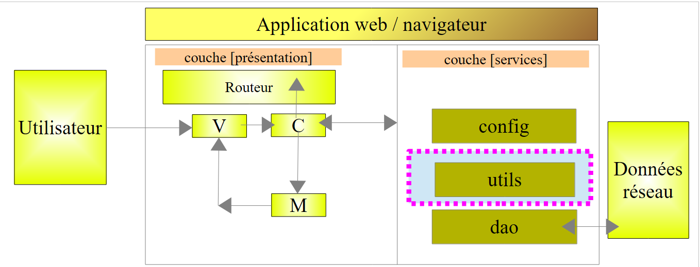 |
سيتضمن تطبيقنا ثلاث خدمات:
- [config]: خدمة التكوين التي عرضناها للتو؛
- [utils]: خدمة الأساليب المساعدة. سنقدم اثنتين منها؛
- [dao]: خدمة الوصول إلى خدمة الويب الخاصة بحجز المواعيد. سنقدمها قريبًا؛
سنقوم بكتابة التطبيق التالي:
 |
 |
- ويتمثل الهدف في عرض الشريط [2] لمدة زمنية يحددها [1]. ويمكن إلغاء الانتظار بواسطة [3].
نقوم بنسخ [app-01.html] إلى [app-15.html] ونعدل الكود على النحو التالي:
<!DOCTYPE html>
<html ng-app="rdvmedecins">
<head>
<title>RdvMedecins</title>
...
</head>
<body ng-controller="rdvMedecinsCtrl">
<div class="container">
<!-- رسالة الانتظار -->
<div class="alert alert-warning" ng-show="waiting.visible" ng-cloak="">
<h1>{{ waiting.text | translate}}
<button class="btn btn-primary pull-right" ng-click="waiting.cancel()">{{'msg_cancel'|translate}}</button>
<img src="assets/images/waiting.gif" alt=""/>
</h1>
</div>
<!-- النموذج -->
<div class="alert alert-info" ng-hide="waiting.visible">
<div class="form-group">
<label for="waitingTime">{{waitingTimeText | translate}}</label>
<input type="text" id="waitingTime" ng-model="waiting.time"/>
</div>
<button class="btn btn-primary" ng-click="execute()">Exécuter</button>
</div>
</div>
..
<script type="text/javascript" src="rdvmedecins-03.js"></script>
</body>
</html>
- السطر 11: يمنع السمة [ng-cloak] عرض الحقل قبل حساب تعبيرات Angular الخاصة به. وهذا يمنع ظهور الحقل لفترة وجيزة قبل تقييم السمة [ng-show] التي ستؤدي في الواقع إلى إخفائه؛
- السطر 22: سيتم تخزين إدخال المستخدم (وقت الانتظار) في النموذج [waiting.time] (السمة ng-model)؛
- السطر 28: تستخدم الصفحة نصًا برمجيًّا جديدًا [rdvmedecins-03]؛
النص البرمجي [rdvmedecins-03] هو كما يلي:
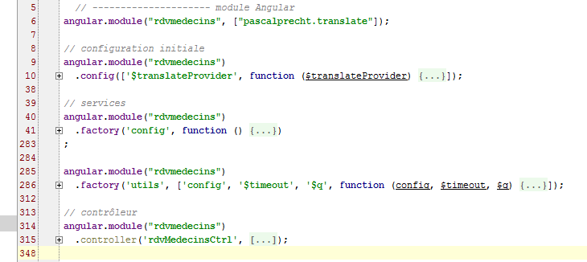
- السطر 6: وحدة Angular التي تدير التطبيق؛
- السطر 10: الدالة [config] المستخدمة لتدويل الرسائل؛
- السطر 41: الخدمة [config] التي وصفناها؛
- السطر 286: الخدمة [utils] التي سنقوم بإنشائها؛
- السطر 315: وحدة التحكم [rdvmedecinsCtrl] التي سنقوم بإنشائها؛
نضيف إلى الدالة [config] مفتاح رسالة جديد (السطران 6 و11):
angular.module("rdvmedecins")
.config(['$translateProvider', function ($translateProvider) {
// الرسائل باللغة الفرنسية
$translateProvider.translations("fr", {
...
'msg_waiting_time_text': "وقت الانتظار: "
});
// رسائل باللغة الإنجليزية
$translateProvider.translations("en", {
...
'msg_waiting_time_text': "وقت الانتظار:"
});
// اللغة الافتراضية
$translateProvider.preferredLanguage("fr");
}]);
نضيف إلى الخدمة [config] سطرًا جديدًا (السطر 6) لهذا المفتاح:
angular.module("rdvmedecins")
.factory('config', function () {
return {
// الرسائل المطلوب ترجمتها
...
waitingTimeText: 'msg_waiting_time_text',
تحتوي الخدمة [utils] على طريقتين (السطران 4 و12):
angular.module("rdvmedecins")
.factory('utils', ['config', '$timeout', '$q', function (config, $timeout, $q) {
// عرض تمثيل JSON لكائن
function debug(message, data) {
if (config.debug) {
var text = data ? message + " : " + angular.toJson(data) : message;
console.log(text);
}
}
// الانتظار
function waitForSomeTime(milliseconds) {
// الانتظار غير المتزامن بالمللي ثانية
var task = $q.defer();
$timeout(function () {
task.resolve();
}, milliseconds);
// إرجاع المهمة
return task;
};
// مثيل الخدمة
return {
debug: debug,
waitForSomeTime: waitForSomeTime
}
}]);
- السطر 2: يُسمى الخدمة [utils] (المعلمة الأولى). وهي تعتمد على ثلاث خدمات، خدمتين مسبقتي التعريف من Angular هما $timeout و $q، بالإضافة إلى خدمة config. تسمح الخدمة [$timeout] بتنفيذ دالة بعد مرور فترة زمنية معينة. تسمح الخدمة [$q] بإنشاء مهام غير متزامنة؛
- السطر 4: دالة محلية [debug]؛
- السطر 12: دالة محلية [waitForSomeTime]؛
- الأسطر 23-26: مثيل الخدمة [utils]. وهو كائن يعرض طريقتين، هما الموضحتان في السطرين 4 و12. لاحظ أن حقول الكائن يمكن أن تحمل أي أسماء. ولأغراض الاتساق، أُعطيت هذه الحقول أسماء الدوال التي تشير إليها؛
- الأسطر 4-9: الطريقة [debug] تكتب على وحدة التحكم رسالة [message] وربما التمثيل JSON لكائن [data]. وهذا يسمح بعرض كائنات مهما كانت درجة تعقيدها؛
- الأسطر 12-20: تقوم الطريقة [waitForSomeTime] بإنشاء مهمة غير متزامنة تستغرق [milliseconds] مللي ثانية؛
- السطر 14: إنشاء مهمة باستخدام الكائن المُعرَّف مسبقًا [$q] (https://docs.angularjs.org/api/ng/service/$q). فيما يلي، كائن API الخاص بالمهمة المسماة [deferred] في وثائق Angular:

- يتم إنشاء مهمة غير متزامنة [task] بواسطة الأمر [$q.defer()]؛
- ويتم إنهاءها باستخدام إحدى الطريقتين التاليتين:
- [task.resolve(value)]: التي تنهي المهمة بنجاح وترسل القيمة [value] إلى من ينتظرون انتهاء المهمة؛
- [task.reject(value)]: التي تنهي المهمة بفشل وترسل القيمة [value] إلى أولئك الذين ينتظرون انتهاء المهمة؛
يمكن للمهمة [task] أن تزود بانتظام أولئك الذين ينتظرون انتهاءها بالمعلومات:
- [task.notify(value)]: ترسل القيمة [value] إلى أولئك الذين ينتظرون انتهاء المهمة. وتستمر المهمة في التنفيذ؛
يستخدم أولئك الذين يرغبون في انتظار انتهاء المهمة الحقل [promise] الخاص بها:
يحتوي الكائن [promise] على القيمة التالية API (http://www.frangular.com/2012/12/api-promise-angularjs.html):

ولإدارة كل من نجاح المهمة وفشلها، نكتب:
- السطر 1: نسترد وعد المهمة؛
- السطر 2: نحدد الدوال التي سيتم تنفيذها في حالة النجاح أو الفشل. يمكننا عدم تحديد دالة للفشل. لن يتم تنفيذ الدالة [successCallback] إلا عند انتهاء المهمة [task] بنجاح [task.resolve()]. لن يتم تنفيذ الدالة [errorCallBack] إلا عند انتهاء المهمة [task] بفشل المهمة [task.reject()].
- السطر 3: يتم تعريف الدالة التي سيتم تنفيذها بعد تنفيذ إحدى الدالتين السابقتين. نضع هنا الكود المشترك بين الدالتين [successCallback, errorCallBack].
لنعد إلى كود الدالة [waitForSomeTime]:
// في حالة انتظار
function waitForSomeTime(milliseconds) {
// انتظار غير متزامن لمدة ميلي ثانية
var task = $q.defer();
$timeout(function () {
task.resolve();
}, milliseconds);
// إرجاع المهمة
return task;
};
- السطر 4: يتم إنشاء مهمة؛
- الأسطر 5-7: يسمح الكائن [$timeout] بتعريف دالة (المعلمة الأولى) يتم تنفيذها بعد فترة زمنية معينة معبر عنها بالميلي ثانية (المعلمة الثانية). وهنا، المعلمة الثانية للدالة [$timeout] هي معلمة الطريقة (السطر 1)؛
- السطر 6: عند انتهاء الفترة الزمنية [milliseconds]، تنتهي المهمة بنجاح؛
- السطر 9: يتم إرجاع المهمة [task]. يجب أن نفهم هنا أن السطر 9 يتم تنفيذه فورًا بعد تعريف الكائن [$timeout]. ولا يتم انتظار انقضاء المهلة [milliseconds]. وبالتالي، يتم تنفيذ التعليمات البرمجية في الأسطر من 2 إلى 10 في وقتين مختلفين:
- المرة الأولى عند تعريف الكائن [$timeout]؛
- المرة الثانية عند انتهاء المهلة [milliseconds]؛
وهنا لدينا دالة غير متزامنة: يتم الحصول على نتيجتها في وقت لاحق عن وقت تنفيذها.
فيما يلي كود وحدة التحكم التي تستخدم الخدمة [config]:
// وحدة التحكم
angular.module("rdvmedecins")
.controller('rdvMedecinsCtrl', ['$scope', 'utils', 'config', '$filter',
function ($scope, utils, config, $filter) {
// ------------------- تهيئة النموذج
// رسالة انتظار
$scope.waiting = {text: config.msgWaiting, visible: false, cancel: cancel, time: undefined};
$scope.waitingTimeText = config.waitingTimeText;
// مهمة الانتظار
var task;
// السجلات
utils.debug("libellé temps d'attente", $filter('translate')($scope.waitingTimeText));
utils.debug("locales['fr']=", config.locales['fr']);
// تنفيذ الإجراء
$scope.execute = function () {
// سجل
utils.debug('début', new Date());
// يتم عرض رسالة الانتظار
$scope.waiting.visible = true;
// انتظار محاكى
task = utils.waitForSomeTime($scope.waiting.time);
// نهاية الانتظار
task.promise.then(function () {
// نجاح
utils.debug('fin', new Date());
}, function () {
// فشل
utils.debug('Opération annulée')
});
task.promise['finally'](function () {
// نهاية الانتظار في جميع الحالات
$scope.waiting.visible = false;
});
};
// إلغاء الانتظار
function cancel() {
// إنهاء المهمة
task.reject();
}
}]);
- السطر 3: يستخدم جهاز التحكم الخدمة [config]؛
- السطر 7: تمت إضافة الحقل [time] إلى الكائن [$scope.waiting]. ويتلقى الكائن [$scope.waiting.time] قيمة فترة الانتظار التي حددها المستخدم؛
- السطر 8: يتم وضع مفتاح رسالة الانتظار التي تعرضها طريقة العرض في النموذج [$scope.waitingTimeText]. وبشكل عام، يجب وضع كل ما تعرضه طريقة العرض V في الكائن [$scope]؛
- السطر 10: متغير محلي. لا يتم عرضه على العرض V؛
- السطران 12-13: استخدام الطريقة [debug] الخاصة بالخدمة [config]. يتم الحصول على النتيجة التالية على وحدة التحكم:
في السطر 2، نحصل على الترميز JSON للكائن locales['fr'].
- السطر 16: الطريقة التي يتم تنفيذها عندما ينقر المستخدم على الزر [Executer]؛
- السطر 18: يعرض وقت بدء تنفيذ الأسلوب؛
- السطر 22: يتم تشغيل المهمة [waitForSomeTime]. ولا يتم انتظار انتهائها. يستمر التنفيذ بالسطر 24 التالي؛
- الأسطر 24-30: يتم تحديد الدوال التي سيتم تنفيذها عند انتهاء المهمة بنجاح (السطر 26) وفي حالة حدوث خطأ (السطر 29)؛
- السطر 26: يعرض وقت انتهاء تنفيذ الأسلوب؛
- السطر 29: يعرض أن العملية قد تم إلغاؤها. ولا يحدث هذا إلا عندما ينقر المستخدم على الزر [Annuler]. ثم تقوم التعليمات الواردة في السطر 41 بإيقاف المهمة غير المتزامنة برمز فشل؛
- الأسطر 31-34: يتم تحديد الدالة التي سيتم تنفيذها بعد تنفيذ إحدى الدالتين السابقتين؛
من المهم فهم تسلسل تنفيذ هذا الكود. في حالة قيام المستخدم بتعيين مهلة مدتها 3 ثوانٍ وعدم إلغاء الانتظار:
- عند النقر على الزر [Exécuter]، يتم تنفيذ الدالة [$scope.execute]. يتم تنفيذ الأسطر من 16 إلى 34 دون انتظار مرور 3 ثوانٍ. عند انتهاء هذا التنفيذ، تتم مزامنة العرض V مع النموذج M. يتم عرض رسالة الانتظار (ng-show=$scope.waiting.visible=true، السطر 20) ويتم إخفاء النموذج (ng-hide=$scope.waiting.visible=true، السطر 20)؛
- منذ هذه اللحظة، يمكن للمستخدم التفاعل مرة أخرى مع العرض. ويمكنه على وجه الخصوص النقر على الزر [Annuler]؛
- وإذا لم يفعل ذلك، فبعد 3 ثوانٍ، يتم تنفيذ دالة [$timeout] (انظر الأسطر 5-7 أدناه):
// في حالة انتظار
function waitForSomeTime(milliseconds) {
// انتظار غير متزامن لمدة ميلي ثانية ميلي ثانية
var task = $q.defer();
$timeout(function () {
task.resolve();
}, milliseconds);
// إرجاع المهمة
return task;
};
- وبعد 3 ثوانٍ إذن، يتم تنفيذ الكود. ينهي هذا الكود المهمة [task] برمز نجاح (resolve). سيؤدي ذلك إلى تشغيل جميع الأكواد التي كانت تنتظر هذا الانتهاء (السطر 4 أدناه):
// انتظار مُحاكى
task = utils.waitForSomeTime($scope.waiting.time);
// نهاية الانتظار
task.promise.then(function () {
// نجاح
utils.debug('fin', new Date());
}, function () {
// فشل
utils.debug('Opération annulée')
});
task.promise['finally'](function () {
// نهاية الانتظار في جميع الحالات
$scope.waiting.visible = false;
});
- وبالتالي سيتم تنفيذ السطر 6 أعلاه (النهاية بنجاح). ثم سيأتي دور الأسطر 11-14. بمجرد تنفيذ هذا الكود، نعود إلى العرض V الذي سيتم مزامنته مع نموذجه M. يتم إخفاء رسالة الانتظار (ng-show=$scope.waiting.visible=false، السطر 13) ويتم عرض النموذج (ng-hide=$scope.waiting.visible=false، السطر 13)؛
وتكون شاشات العرض عندئذٍ كما يلي:
نلاحظ أعلاه أن الفاصل الزمني بين بداية فترة الانتظار ونهايتها يبلغ 3 ثوانٍ (06:01-05:58). أما إذا قام المستخدم بإلغاء فترة الانتظار قبل مرور 3 ثوانٍ، فسيظهر العرض التالي:
أخيرًا، من المهم أن نفهم أنه في أي لحظة لا يوجد سوى مؤشر ترابط واحد للتنفيذ يُسمى مؤشر ترابط UI (واجهة المستخدم). يتم الإبلاغ عن انتهاء مهمة غير متزامنة بواسطة حدث تمامًا مثل النقر على زر. لا تتم معالجة هذا الحدث على الفور. بل يتم وضعه في قائمة انتظار الأحداث التي تنتظر تنفيذها. وعندما يحين دوره، يتم معالجته. تستخدم هذه المعالجة مؤشر الترابط الخاص بـ UI، وبالتالي تتجمد الواجهة خلال تلك الفترة. ولا تستجيب لأي طلبات من المستخدم. ولهذا السبب، من المهم أن تكون معالجة الحدث سريعة. ونظرًا لأن كل حدث تتم معالجته بواسطة مؤشر الترابط الخاص بـ UI، فلا داعي أبدًا لمعالجة مشاكل التزامن بين مؤشرات الترابط التي يتم تنفيذها في نفس الوقت. ففي كل لحظة، لا يتم تنفيذ سوى مؤشر الترابط الخاص بـ UI.
3.7.6. المثال 6: خدمات HTTP
نقدم الآن الخدمة [dao] التي تتواصل مع خادم الويب:
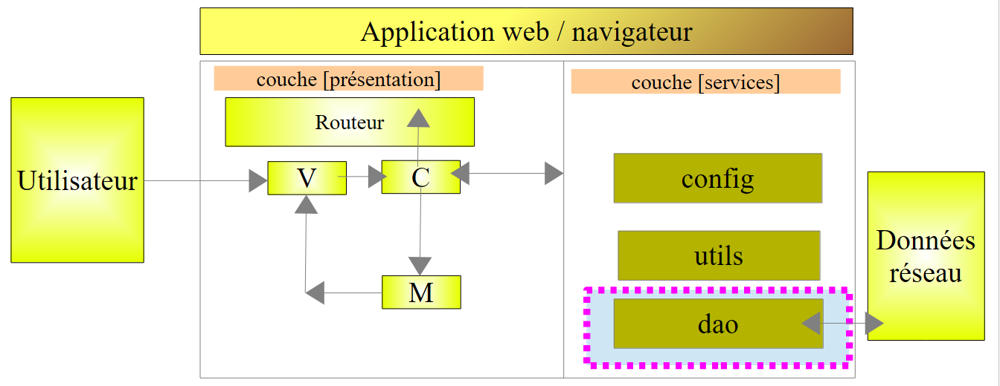 |
3.7.6.1. الطريقة V
 |
سنقوم بكتابة نموذج لطلب قائمة الأطباء:

نقوم بنسخ [app-01.html] إلى [app-16.html] ثم نقوم بتعديله على النحو التالي:
<div class="container" ng-cloak="">
<h1>Rdvmedecins - v1</h1>
<!-- رسالة الانتظار -->
<div class="alert alert-warning" ng-show="waiting.visible" ng-cloak="">
<h1>{{ waiting.text | translate}}
<button class="btn btn-primary pull-right" ng-click="waiting.cancel()">{{'msg_cancel'|translate}}</button>
<img src="assets/images/waiting.gif" alt=""/>
</h1>
</div>
<!-- الطلب -->
<div class="alert alert-info" ng-hide="waiting.visible">
<div class="form-group">
<label for="waitingTime">{{waitingTimeText | translate}}</label>
<input type="text" id="waitingTime" ng-model="waiting.time"/>
</div>
<div class="form-group">
<label for="urlServer">{{urlServerLabel | translate}}</label>
<input type="text" id="urlServer" ng-model="server.url"/>
</div>
<div class="form-group">
<label for="login">{{loginLabel | translate}}</label>
<input type="text" id="login" ng-model="server.login"/>
</div>
<div class="form-group">
<label for="password">{{passwordLabel | translate}}</label>
<input type="password" id="password" ng-model="server.password"/>
</div>
<button class="btn btn-primary" ng-click="execute()">{{medecins.title|translate:medecins.model}}</button>
</div>
<!-- قائمة الأطباء -->
<div class="alert alert-success" ng-show="medecins.show">
{{medecins.title|translate:medecins.model}}
<ul>
<li ng-repeat="medecin in medecins.data">{{medecin.titre}}{{medecin.prenom}} {{medecin.nom}}</li>
</ul>
</div>
<!-- قائمة الأخطاء -->
<div class="alert alert-danger" ng-show="errors.show">
{{errors.title|translate:errors.model}}
<ul>
<li ng-repeat="message in errors.messages">{{message|translate}}</li>
</ul>
</div>
</div>
...
<script type="text/javascript" src="rdvmedecins-04.js"></script>
- الأسطر 13-31: تنفذ النموذج. لا يظهر هذا النموذج عند عرض رسالة الانتظار (ng-hide="waiting.visible"). تجدر الإشارة إلى أن المدخلات الأربعة يتم تخزينها في (سمات ng-model) [waiting.time (ligne 16), server.url (ligne 20), server.login (ligne 24), server.password (ligne 28)]؛
- الأسطر 34-39: تعرض قائمة الأطباء. هذه القائمة لا تظهر دائمًا (ng-show="medecins.show").
- السطر 35: بديل لصيغة <div ... translate="{{medecins.title}}" translate-values="{{medecins.model}}"> التي سبق ذكرها؛
- السطر 36: قائمة غير مرتبة؛
- السطر 37: ستوجد قائمة الأطباء في القالب [medecins.data]. تتيح توجيهات Angular [ng-repeat] تصفح قائمة. تطلب صيغة ng-repeat="medecin in medecins.data" تكرار العلامة <li> لكل عنصر في القائمة [medecins.data]. يُسمى العنصر الحالي في القائمة [medecin]؛
- السطر 37: لكل علامة <li>، يتم كتابة اللقب والاسم الأول واسم العائلة للطبيب الحالي المشار إليه بالمتغير [medecin]؛
- الأسطر 42-47: تعرض قائمة الأخطاء. هذه القائمة لا تظهر دائمًا (ng-show="errors.show"). يتبع عرض هذه القائمة نفس نمط عرض قائمة الأطباء. بشكل عام، لعرض قائمة بالعناصر، يتم استخدام توجيه Angular [ng-repeat]؛
- السطر 51: أصبح كود جافا سكريبت الآن في الملف [rdvmedecins-04]
3.7.6.2. وحدة التحكم C والنموذج M
 |
يتطور كود جافا سكريبت على النحو التالي:

- السطور 6-9: تعلن الوحدة النمطية [rdvmedecins] عن اعتمادها على الوحدة النمطية [base64] التي توفرها المكتبة [angular-base64]، وهي إحدى تبعيات المشروع. تُستخدم هذه الوحدة لترميز السلسلة [login:password] المرسلة إلى خدمة الويب للتوثيق باستخدام Base64؛
- السطران 12-13: دالة التهيئة التي تحتوي على رسائلنا المُعَلَّمة دوليًّا. تظهر رسائل جديدة. لن نعرضها مرة أخرى؛
- السطران 69-70: الخدمة [config] التي تقوم بتكوين تطبيقنا. تمت إضافة مفاتيح رسائل جديدة إليها. لن نقدمها مرة أخرى؛
- السطران 318-319: الخدمة [utils] التي تحتوي على طرق مساعدة. تمت إضافة طرق جديدة إليها. سنعرضها؛
- السطران 385-386: الخدمة [dao] المسؤولة عن التبادل مع خدمة الويب. سنركز عليها؛
- السطران 467-468: وحدة التحكم C الخاصة بالعرض V التي عرضناها للتو. سنقدمها الآن لأنها هي التي تتولى زمام الأمور وتستجيب لطلبات المستخدم؛
3.7.6.3. وحدة التحكم C
فيما يلي كود وحدة التحكم:
angular.module("rdvmedecins")
.controller('rdvMedecinsCtrl', ['$scope', 'utils', 'config', 'dao', '$translate',
function ($scope, utils, config, dao, $translate) {
// ------------------- تهيئة النموذج
// القالب
$scope.waiting = {text: config.msgWaiting, visible: false, cancel: cancel, time: undefined};
$scope.waitingTimeText = config.waitingTimeText;
$scope.server = {url: undefined, login: undefined, password: undefined};
$scope.medecins = {title: config.listMedecins, show: false, model: {}};
$scope.errors = {show: false, model: {}};
$scope.urlServerLabel = config.urlServerLabel;
$scope.loginLabel = config.loginLabel;
$scope.passwordLabel = config.passwordLabel;
// مهمة غير متزامنة
var task;
// تنفيذ الإجراء
$scope.execute = function () {
// يتم تحديث UI
$scope.waiting.visible = true;
$scope.medecins.show = false;
$scope.errors.show = false;
// انتظار مُحاكى
task = utils.waitForSomeTime($scope.waiting.time);
var promise = task.promise;
// انتظار
promise = promise.then(function () {
// يتم طلب قائمة الأطباء؛
task = dao.getData($scope.server.url, $scope.server.login, $scope.server.password, config.urlSvrMedecins);
return task.promise;
});
// تحليل نتيجة الاستدعاء السابق
promise.then(function (result) {
// result={err: 0, data: [med1, med2, ...]}
// result={err: n, messages: [msg1, msg2, ...]}
if (result.err == 0) {
// يتم إدخال البيانات المجمعة في النموذج
$scope.medecins.data = result.data;
// يتم تحديث UI
$scope.medecins.show = true;
$scope.waiting.visible = false;
} else {
// حدثت أخطاء أثناء الحصول على قائمة الأطباء
$scope.errors = { title: config.getMedecinsErrors, messages: utils.getErrors(result), show: true, model: {}};
// يتم تحديث ملف UI
$scope.waiting.visible = false;
}
});
};
// إلغاء في الانتظار
function cancel() {
// يتم إنهاء المهمة
task.reject();
// يتم تحديث UI
$scope.waiting.visible = false;
$scope.medecins.show = false;
$scope.errors.show = false;
}
}
])
;
- السطر 2: يحتوي المتحكم على تبعية جديدة، وهي التبعية للخدمة [dao]؛
- الأسطر 6-13: يتم تهيئة النموذج M للواجهة V لعرضها لأول مرة؛
- السطر 8: سيتم استخدام [$scope.server] لاسترداد ثلاث من أربع معلومات من النموذج V، بينما يتم تخزين المعلومات الرابعة في [$scope.waiting.time] (السطر 6)؛
- السطر 9: سيقوم [$scope.medecins] بجمع المعلومات اللازمة لعرض قائمة الأطباء:
<!-- قائمة الأطباء -->
<div class="alert alert-success" ng-show="medecins.show">
{{medecins.title|translate:medecins.model}}
<ul>
<li ng-repeat="medecin in medecins.data">{{medecin.titre}}{{medecin.prenom}} {{medecin.nom}}</li>
</ul>
</div>
سيكون السمة [medecins.title] عنوان الشريط العلوي. وهي محددة في الخدمة [config]. سيتحكم السمة [medecins.show] في عرض الشريط أو إخفائه (السمة ng-show="medecins.show"). السمة [medecins.model] هي قاموس فارغ وستظل كذلك. وهي تُستخدم ببساطة لتوضيح استخدام متغير الترجمة المستخدم في السطر 3. لم يتم تعريف السمة [medecins.data] بعد، والتي ستحتوي على قائمة الأطباء (السطر 5).
- السطر 10: سيجمع [$scope.errors] المعلومات اللازمة لعرض قائمة الأخطاء:
<!-- قائمة الأخطاء -->
<div class="alert alert-danger" ng-show="errors.show">
{{errors.title|translate:errors.model}}
<ul>
<li ng-repeat="message in errors.messages">{{message|translate}}</li>
</ul>
</div>
سيكون السمة [errors.title] عنوان الشريط. وهي محددة في الخدمة [config]. ستتحكم السمة [errors.show] في عرض الشريط أو عدم عرضه (السمة ng-show="errors.show"). السمة [errors.model] هي قاموس فارغ وستظل كذلك. وهي تُستخدم ببساطة لتوضيح استخدام متغير الترجمة المستخدم في السطر 3. السمة [errors.messages] لم تُعرَّف بعد، وستحتوي على قائمة رسائل الخطأ المطلوب عرضها (السطر 5).
- السطر 16: المهمة غير المتزامنة. سيقوم وحدة التحكم بتشغيل مهمتين غير متزامنتين على التوالي. سيتم وضع المراجع الخاصة بهذه المهام المتتالية في المتغير [task]. سيسمح ذلك بإلغائها (السطر 55)؛
- السطر 19: الطريقة التي يتم تنفيذها عندما ينقر المستخدم على الزر [Liste des médecins]:
<button class="btn btn-primary" ng-click="execute()">Liste des médecins</button>
- الأسطر 21-23: يتم تحديث الواجهة المرئية: يتم عرض رسالة الانتظار، ويتم إخفاء كل ما عداها؛
- السطر 25: يتم إنشاء المهمة غير المتزامنة للانتظار. سيتم تلقي إشارة (تم إنجاز المهمة) بعد انقضاء الوقت الذي أدخله المستخدم في النموذج؛
- السطر 26: يتم استرداد الوعد الخاص بالمهمة غير المتزامنة. يعمل البرنامج الذي يطلق المهمة باستخدام هذا الوعد. ومع ذلك، يجب الحصول على مرجع المهمة نفسها حتى يمكن إلغاؤها (السطر 55)؛
- الأسطر 28-32: يتم تحديد العمل المطلوب تنفيذه عند انتهاء فترة الانتظار؛
- السطر 30: نستخدم الطريقة [dao.getData] لتشغيل مهمة غير متزامنة جديدة. ونمرر إليها المعلومات التي تحتاجها:
- القاعدة URL لخدمة الويب [$scope.server.url]، على سبيل المثال [http://localhost:8080]؛
- اسم المستخدم [$scope.server.login] لتسجيل الدخول، على سبيل المثال [admin]؛
- كلمة المرور [$scope.server.password] لتسجيل الدخول، على سبيل المثال [admin]؛
- القيمة URL التي تقدم الخدمة المطلوبة [config.urlSvrMedecins]، وهي هنا [/getAllMedecins]. وبشكل إجمالي، ستكون القيمة الكاملة URL هي [http://localhost:8080/getAllMedecins]؛
تُرجع الطريقة [dao.getData] نتيجة يمكن أن تتخذ شكلين:
- (تابع)
- {err: 0, data: [med1, med2, ...]} حيث [medi] هو كائن يمثل طبيبًا (اللقب، الاسم الأول، الاسم الأخير)،
- {err: n, messages: [msg1, msg2, ...]} حيث [msgi] هي رسالة خطأ و n غير صفر؛
- السطر 31: يتم إرجاع وعد المهمة. وهنا يوجد أمر يجب فهمه. لدينا وعدان:
- promise.then(): تُرجع وعدًا أول [promise1]؛
- return task.promise: تُرجع وعدًا ثانيًا [promise2]؛
- وفي النهاية، فإن promise=promise.then(... ;return task.promise) هي سلسلة مكونة من وعدين [promise2.promise1]. لن يتم تقييم [promise1] إلا عند الحصول على الوعد [promise2]، أي عند انتهاء المهمة [dao.getData]. الوعد [promise1] لا يعتمد على أي مهمة غير متزامنة. وبالتالي سيتم الحصول عليه على الفور؛
- الأسطر 34-50: يتضح من الشرح السابق أن هذه الأسطر لن تُنفَّذ إلا عند انتهاء المهمة [dao.getData]. يتم إنشاء المعلمة [result] التي تم تمريرها إلى الدالة في السطر 34 بواسطة الطريقة [dao.getData]، ويتم نقلها إلى الكود المستدعي بواسطة العملية [task.resolve(result)]، حيث تأخذ [result] الشكل التالي:
- {err: 0, data: [med1, med2, ...]} حيث يمثل [medi] كائنًا يمثل طبيبًا (اللقب، الاسم الأول، الاسم الأخير)،
- {err: n, messages: [msg1, msg2, ...]} حيث [msgi] عبارة عن رسالة خطأ و n يختلف عن 0؛
- السطر 37: ننظر إلى رمز الخطأ [result.err]؛
- الأسطر 38-42: إذا لم يكن هناك خطأ (result.err==0)، يتم استرداد قائمة الأطباء وعرضها؛
- الأسطر 44-47: إذا كان هناك خطأ (result.err != 0)، يتم استرداد قائمة رسائل الخطأ وعرضها؛
- الأسطر 53-56: تظل رسالة الانتظار مع زر الإلغاء ظاهرة طالما لم تنتهِ العمليتان غير المتزامنتان. لنرى ما يحدث حسب توقيت الإلغاء:
- يجب أولاً فهم أن الأسطر 19-50 تُنفَّذ دفعة واحدة. عندئذٍ يتم تشغيل مهمة غير متزامنة واحدة فقط، وهي المهمة الموجودة في السطر 25،
- وبعد هذا التنفيذ الأول، يتم تحديث العرض V، وبالتالي يصبح شريط الانتظار وزر الإلغاء الخاص به مرئيين. إذا قام المستخدم بإلغاء الانتظار قبل انتهاء المهمة الواردة في السطر 25، يتم عندئذٍ تنفيذ الطريقة الواردة في السطر 53 ويتم إلغاء المهمة بفشل (السطر 55)؛
- الأسطر 56-59: يتم تحديث الواجهة: يُعاد عرض النموذج ويتم إخفاء كل ما عدا ذلك،
- ثم يعود إلى العرض V ويقوم المتصفح بمعالجة الحدث التالي. وبما أن المهمة قد انتهت، يتم الحصول على الوعد الخاص بهذه المهمة، مما يؤدي إلى إنشاء حدث. ثم يتم معالجته؛
- ثم يتم تنفيذ الأسطر 28-32. لا توجد دالة محددة لحالة الفشل، لذا لا يتم تنفيذ أي كود. يتم الحصول على وعد جديد، وهو الذي يتم إرجاعه دائمًا بواسطة [promise.then] ويتم الحصول عليه دائمًا،
- وبعد معالجة الحدث، يتم العودة إلى العرض V ويقوم المتصفح بمعالجة الحدث التالي. وبما أن الوعد [promise] في السطر 28 قد تمت معالجته، فسيتم حل الوعد الموجود في السطر 34، مما سيؤدي إلى حدوث حدث جديد. ثم يتم معالجته؛
- ثم يتم تنفيذ الأسطر 34-49 بالترتيب، لأن الوعد المستخدم في السطر 34 قد تم استيفاؤه. ومرة أخرى، نظرًا لعدم وجود دالة محددة لحالة الفشل، لا يتم تنفيذ أي كود،
- وبذلك نصل إلى السطر 50. لم يعد هناك انتظار للمهمة ويتم عرض العرض الجديد V؛
- لنفترض الآن أن الإلغاء يحدث أثناء تنفيذ المهمة غير المتزامنة الثانية [dao.getData]. يمكن تطبيق المنطق السابق مرة أخرى. سيؤدي انتهاء المهمة إلى تنفيذ الأسطر 34-50 مع انتهاء المهمة بفشل. وسنكتشف قريبًا أن الطريقة [dao.getData] تقوم بإجراء استدعاء غير متزامن HTTP إلى خدمة الويب. لن يتم إلغاء هذا الاستدعاء، لكن نتيجته لن يتم الاستفادة منها.
من المهم فهم هذا التبادل المستمر بين عرض «الرؤية V» ومعالجة أحداث المتصفح. تحدث الأحداث إما بفعل المستخدم (نقرة) أو بفعل عمليات النظام مثل انتهاء عملية غير متزامنة. حالة السكون للمتصفح هي عرض الواجهة V. ويُخرج من حالة السكون هذه بواسطة حدث يحدث ويقوم المتصفح بمعالجته. وبمجرد معالجة الحدث، يعود المتصفح إلى حالة السكون. ثم يتم تحديث الواجهة V إذا كان الحدث الذي تمت معالجته قد غيّر نموذجها M. ويُخرج المتصفح من حالة السكون بواسطة الحدث التالي.
يحدث كل ذلك في خيط واحد. لا تتم معالجة حدثين في وقت واحد أبدًا. يتم تنفيذهما بشكل متسلسل. لا ينتقل المتصفح إلى الحدث التالي إلا عندما يفسح له الحدث السابق المجال، وعادةً ما يكون ذلك بسبب الانتهاء من معالجته بالكامل.
يبقى لدينا نقطة واحدة يجب توضيحها. لعرض رسائل الخطأ، نكتب:
$scope.errors = { title: config.getMedecinsErrors, messages: utils.getErrors(result), show: true, model: {}};
يتم توفير قائمة الرسائل بواسطة الطريقة [utils.getErrors] المُعرَّفة في الخدمة [utils]. وهذه الطريقة هي كما يلي:
// تحليل الأخطاء في استجابة الخادم JSON
function getErrors(data) {
// البيانات {err:n، messages:[]}، err!=0
// الأخطاء
var errors = [];
// رمز الخطأ
var err = data.err;
switch (err) {
case 2 :
// غير مصرح به
errors.push('not_authorized');
break;
case 3 :
// محظور
errors.push('forbidden');
break;
case 4 :
// خطأ محلي
errors.push('not_http_error');
break;
case 6 :
// لم يتم العثور على المستند
errors.push('not_found');
break;
default :
// حالات أخرى
errors = data.messages;
break;
}
// إذا لم تكن هناك رسالة، يتم عرض واحدة
if (! errors || errors.length == 0) {
errors=['error_unknown'];
}
// نعرض قائمة الأخطاء
return errors;
}
- السطران 2-3: المعلمة [data] المستلمة هي كائن له سمتان:
- [err]: رمز خطأ؛
- [messages]: قائمة بالرسائل؛
- السطر 5: سنقوم بإنشاء مصفوفة لرسائل الخطأ. هذه الرسائل مترجمة إلى لغات مختلفة. ولهذا السبب، لا نضع الرسائل نفسها في المصفوفة، بل مفاتيح الترجمة الخاصة بها، باستثناء ما يحدث في السطر 27. في هذه الحالة، نستخدم السمة [messages] الخاصة بالمعلمة [data]. هذه الرسائل هي رسائل حقيقية وليست مفاتيح رسائل. ومع ذلك، ستتعامل طريقة العرض V معها على أنها مفاتيح رسائل، وبالتالي لن يتم العثور عليها. في هذه الحالة، تعرض الوحدة النمطية [translate] مفتاح الرسالة الذي لم تعثر عليه، أي رسالة حقيقية في هذه الحالة. وهذه هي النتيجة المرجوة؛
- الأسطر 32-34: تعالج الحالة التي تكون فيها قيمة [data.messages] في السطر 27 هي null. يحدث هذا مع خدمة الويب المكتوبة. كان ينبغي تجنب هذه الحالة.
3.7.6.4. الخدمة [dao]
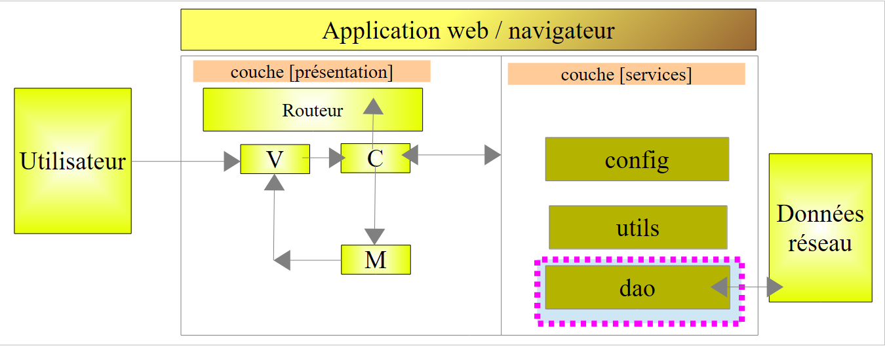 |
تضمن الخدمة [dao] التبادل مع الخدمة / JSON. وفيما يلي شفرة هذه الخدمة:
angular.module("rdvmedecins")
.factory('dao', ['$http', '$q', 'config', '$base64', 'utils',
function ($http, $q, config, $base64, utils) {
// السجلات
utils.debug("[dao] init");
// ----------------------------------طرق خاصة
// الحصول على البيانات من خدمة الويب
function getData(serverUrl, username, password, urlAction, info) {
// عملية غير متزامنة
var task = $q.defer();
// طلب URL HTTP
var url = serverUrl + urlAction;
// المصادقة الأساسية
var basic = "Basic " + $base64.encode(username + ":" + password);
// الاستجابة
var réponse;
// يجب مصادقة جميع طلبات HTTP
var headers = $http.defaults.headers.common;
headers.Authorization = basic;
// يتم إرسال الطلب HTTP
var promise;
if (info) {
promise = $http.post(url, info, {timeout: config.timeout});
} else {
promise = $http.get(url, {timeout: config.timeout});
}
promise.then(success, failure);
// يتم إرجاع المهمة نفسها حتى يمكن إلغاؤها
return task;
// نجاح
function success(response) {
// response.data={status:0, data:[med1, med2, ...]} أو {status:x, data:[msg1, msg2, ...]
utils.debug("[dao] getData[" + urlAction + "] success réponse", response);
// الرد
var payLoad = response.data;
réponse = payLoad.status == 0 ? {err: 0, data: payLoad.data} : {err: 1, messages: payLoad.data};
// يتم إرجاع الرد
task.resolve(réponse);
}
// فشل
function failure(response) {
utils.debug("[dao] getData[" + urlAction + "] error réponse", response);
// يتم تحليل الحالة
var status = response.status;
var error;
switch (status) {
case 401 :
// غير مصرح به
error = 2;
break;
case 403:
// محظور
error = 3;
break;
case 404:
// غير موجود
error = 6;
break;
case 0:
// خطأ محلي
error = 4;
break;
default:
// شيء آخر
error = 5;
}
// يتم إرجاع الرد
task.resolve({err: error, messages: [response.statusText]});
}
}
// --------------------- مثيل الخدمة [dao]
return {
getData: getData
}
}]);
- الأسطر 77-79: تحتوي الخدمة على حقل واحد فقط: الطريقة [getData] التي تسمح بالحصول على معلومات من خدمة الويب / JSON؛
- السطر 2: تظهر تبعية [$http] لم نكن قد صادفناها من قبل. وهي خدمة محددة مسبقًا في Angular تتيح التواصل HTTP مع كيان بعيد؛
- السطر 6: سجل (log) لمعرفة في أي مرحلة من دورة حياة التطبيق يتم تنفيذ الكود؛
- السطر 10: تقبل الطريقة [getData] خمسة معلمات:
- [serverUrl]: الجذر لخدمة الويب (http://localhost:8080)؛
- [urlAction]: عنوان الخدمة المحددة المطلوبة (/getAllMedecins)؛
- [username]: اسم المستخدم؛
- [password]: كلمة المرور الخاصة به؛
- [info]: كائن يجمع معلومات إضافية عندما يُطلب معرّف الخدمة المطلوبة (URL) عبر عملية POST. في حالة URL (/getAllMedecins)، لم يتم تمرير هذا المعامل. وبالتالي فهو [undefined]؛
- السطر 12: يتم إنشاء مهمة غير متزامنة؛
- السطر 14: يقوم URL بإكمال الخدمة المطلوبة (http://localhost:8080/getAllMedecins)؛
- السطر 16: تتم المصادقة عن طريق إرسال الرأس HTTP التالي:
حيث [code] هو رمز Base64 لسلسلة [username:password]؛
السطر 16 يُنشئ الجزء [Basic code] من الرأس HTTP؛
- السطر 18: استجابة خدمة الويب؛
- السطر 20: الرؤوس HTTP التي يرسلها Angular افتراضيًا في طلب HTTP محددة في الكائن [$http.defaults.headers.common]. لا يشكل الرأس [Authorization:Basic code] جزءًا منها؛
- السطر 21: يتم إضافته إلى الرؤوس HTTP المراد إرسالها بشكل منهجي. على يسار عملية التعيين، يوجد الرأس [Authorization] المراد تهيئته، وعلى اليمين قيمة الرأس، وهي في هذه الحالة القيمة المحددة في السطر 16. وبالتالي، إذا كتبنا:
فسيقوم Angular بإرسال الرأس HTTP:
- السطر 23: تُرجع أساليب الخدمة [$http] وعودًا. وسيتم تخزينها في المتغير [promise]؛
- السطر 27: نظرًا لأن المعلمة [info] هنا لها القيمة [undefined]، يتم تنفيذ السطر 27. يتم طلب URL (http://localhost:8080/getAllMedecins) باستخدام GET. لتجنب الانتظار لفترة طويلة، يتم تحديد مهلة انتظار قصوى (timeout) للحصول على استجابة الخادم. بشكل افتراضي، تبلغ هذه المهلة ثانية واحدة؛
- السطر 29: نحدد الطريقتين اللتين سيتم تنفيذهما عند الحصول على الوعد:
- [success]: محددة في السطر 34، وهي الطريقة التي يجب تنفيذها عند الحصول على الوعد في حالة نجاح المهمة؛
- [failure]: محددة في السطر 45، وهي الطريقة التي يجب تنفيذها عند الحصول على الوعد في حالة فشل المهمة؛
- يتم تعريف كلتا الطريقتين (أو بالأحرى الدالتين) داخل الدالة [getData]. وهذا ممكن في جافا سكريبت. المتغيرات المُعرَّفة في [getData] معروفة في كلتا الدالتين الداخليتين [success, failure]؛
- السطر 31: يتم إرجاع المهمة التي تم إنشاؤها في السطر 12. يجب هنا تذكر الكود المستدعي:
promise = promise.then(function () {
// يتم طلب قائمة الأطباء؛
task = dao.getData($scope.server.url, $scope.server.login, $scope.server.password, config.urlSvrMedecins);
return task.promise;
});
في السطر 3 أعلاه، يتم استرداد المهمة بالفعل.
- السطر 34: يتم تنفيذ الدالة [success] في وقت لاحق، عندما ينتهي استدعاء HTTP بنجاح. ويرتبط مفهوم النجاح هذا بالسطر الأول من استجابة HTTP. وتكون هذه الاستجابة على النحو التالي:
الرمز عبارة عن نص مكون من ثلاثة أرقام يشير إلى ما إذا كان الاستدعاء قد نجح أم لا. وبشكل عام، يمكن القول إن الرموز 2xx و3xx هي رموز نجاح، أما الرموز الأخرى فهي رموز فشل. النص عبارة عن شرح موجز. وفيما يلي استجابتان محتملتان، إحداهما في حالة النجاح والأخرى في حالة الفشل:
- السطر 36: يتم عرض استجابة الخادم على وحدة التحكم. في حالة الخطأ [404 Not Found]، نحصل على شيء مثل:
[dao] getData[/getAllMedecins] error réponse : {"data":"...","status":404,"config":{...},"statusText":"Not Found"}
في هذا الرد، سنستخدم فقط الحقول [data] و [status] و [statusText].
- السطر 38: نستخرج الحقل [data] من الرد. وسيكون بأحد الأشكال التالية:
- {status: 0, data: [med1, med2, ...]} حيث يمثل [medi] كائنًا يمثل طبيبًا (اللقب، الاسم الأول، الاسم الأخير)،
- {status: n, data: [msg1, msg2, ...]} حيث [msgi] عبارة عن رسالة خطأ و n يختلف عن 0؛
 |

- السطر 39: يتم إنشاء الرد {0,data} أو {n,messages}. يحتوي الرد الأول على الأطباء في الحقل [data]. أما الرد الثاني فيشير إلى حدوث خطأ على جانب الخادم. وقد عالج الخادم هذا الخطأ، وقام بإنشاء رمز خطأ في [err] وقائمة برسائل الخطأ في [data]. في كلتا الحالتين، يُرجع رمز HTTP 200 الذي يشير إلى أن الأمر HTTP قد تمت معالجته بالكامل. ولهذا السبب يتم معالجة الحالتين في نفس الدالة [success]؛
- السطر 41: تم إنهاء المهمة [task.resolve] ويتم إرجاع إحدى الاستجابتين التاليتين:
- {err: 0, data: [med1, med2, ...]} حيث يمثل [medi] كائنًا يمثل طبيبًا (اللقب، الاسم الأول، الاسم الأخير)،
- {err: n, messages: [msg1, msg2, ...]} حيث [msgi] هي رسالة خطأ و n غير صفر؛
يجب ربط هذا الكود بالطريقة التي يتم بها استرداد هذا الرد في كود وحدة التحكم المستدعية:
// تحليل نتيجة الاستدعاء السابق
promise.then(function (result) {
// result={err: 0, data: [med1, med2, ...]}
// result={err: n, messages: [msg1, msg2, ...]}
...
}
توجد استجابة [task.resolve(réponse)] أعلاه في المتغير [result].
- السطر 45: الدالة [failure] عندما تنتهي المهمة غير المتزامنة بالفشل. هناك حالتان محتملتان:
- يقوم الخادم بالإبلاغ عن هذا الفشل عن طريق إرجاع رمز لا يندرج ضمن فئتي 2xx أو 3xx،
- تقوم Angular بإلغاء استدعاء HTTP. وبالتالي لا يحدث أي استدعاء. تحدث استثناء Angular ولكن لا يتم إرجاع رمز خطأ HTTP من الخادم. وهذا هو الحال، على سبيل المثال، إذا تم توفير URL غير صالح لا يمكن استدعاؤه؛
- السطر 46: يتم عرض الرد على وحدة التحكم؛
- السطر 48: نتذكر أن استجابة الخادم تأتي بالشكل التالي:
{"data":"...","status":404,"config":{...},"statusText":"Not Found"}
في السطر 48، نسترد السمة [status] المذكورة أعلاه؛
- الأسطر 50-70: انطلاقًا من رمز الخطأ HTTP، سنقوم بإنشاء رمز خطأ جديد لإخفاء طبيعة الطريقة [dao.getData] (HTTP) عن الرموز المستدعية. يمكن التحقق من أنه في وحدة التحكم التي تستخدم هذه الطريقة، لا يوجد ما يشير إلى وجود استدعاء HTTP داخل الطريقة؛
- السطر 51: الخطأ [401] يشير إلى فشل في المصادقة (كلمة مرور غير صحيحة على سبيل المثال)،
- السطر 55: الخطأ [403] يشير إلى استدعاء غير مصرح به. قام المستخدم بالمصادقة بشكل صحيح ولكنه لا يمتلك الصلاحيات الكافية لطلب URL الذي طلبه. سيحدث هذا مع المستخدم [user / user]. هذا المستخدم موجود بالفعل في قاعدة البيانات ولكنه لا يملك حق استخدام التطبيق. المستخدم [admin / admin] هو الوحيد الذي يملك هذا الحق؛
- السطر 59: الخطأ [404] يشير إلى عدم العثور على URL. قد يكون لهذا الخطأ عدة أسباب:
- ارتكب المستخدم خطأً في إدخال رقم URL الخاص بالخدمة؛
- لم يتم تشغيل الخدمة الإلكترونية؛
- لم تستجب الخدمة الويب بسرعة كافية (الحد الأقصى المسموح به هو ثانية واحدة بشكل افتراضي)؛
- السطر 63: رمز الخطأ HTTP 0 غير موجود. نحن هنا في الحالة التي لم يقم فيها Angular بإجراء الاستدعاء HTTP المطلوب لأن القيمة URL التي أدخلها المستخدم غير صالحة ولا يمكن استدعاؤها. وسنواجه لاحقًا حالات أخرى حيث لا يقوم Angular بتنفيذ الاستدعاء المطلوب HTTP؛
- السطر 72: يتم إنهاء المهمة بنجاح (task.resolve) بإرجاع استجابة من النوع {err, messages} حيث يتكون المصفوفة [messages] من الرسالة [response.statusText] وحدها. في حالة عدم قيام Angular بإجراء الاستدعاء المطلوب HTTP، فستكون السلسلة فارغة؛
والآن بعد أن أصبح لدينا نظرة شاملة ومفصلة على التطبيق، يمكننا البدء في إجراء الاختبارات.
3.7.6.5. اختبارات التطبيق - 1
لنبدأ بمدخلات صالحة:

 |
- في [1]، نضع 0 حتى لا يكون هناك انتظار؛
- في [2]، تظهر رسالة خطأ رغم صحة المدخلات. لم نعرض رسائل الخطأ المختلفة. الرسالة المعروضة في [2] هي رسالة عامة مرتبطة بالخطأ 0 الذي يتوافق مع استثناء في Angular. واجه Angular مشكلة منعته من إجراء استدعاء HTTP. في مثل هذه الحالات، يجب مراجعة سجلات وحدة التحكم في جافا سكريبت. وهناك طريقتان للقيام بذلك:
- إجراء [F12] في متصفح Chrome؛
- استخدام وحدة التحكم في Webstorm؛
في وحدة التحكم في Webstorm، نجد رسائل متنوعة منها هذه:
- السطر 1: يُشير Angular إلى خطأ سنعود إليه لاحقًا؛
- السطر 2: سجل طريقة [dao.getData]. نجد فيه أمورًا مثيرة للاهتمام:
- [status] يساوي 0، مما يشير إلى عدم وجود استدعاء لـ HTTP. ونتيجة لذلك، فإن [statusText] فارغ،
- [url] يساوي [http://localhost:8080/getAllMedecins]، وهذا صحيح؛
- كما أن رأس المصادقة HTTP الخاص بـ [Authorization":"Basic YWRtaW46YWRtaW4=] صحيح أيضًا؛
حسنًا، فلماذا لم ينجح الأمر إذن؟ العبارة الأساسية في سجلات الأحداث هي [No 'Access-Control-Allow-Origin' header is present]. لفهمها، يلزم تقديم شرح مطول. لنبدأ بالعودة إلى البنية العامة لتطبيق العميل/الخادم:

- تأتي الصفحات HTML / CSS / JS الخاصة بتطبيق Angular من الخادم [1]؛
- في [2]، تقوم الخدمة [dao] بإرسال طلب إلى خادم آخر، وهو الخادم [2]. حسنًا، هذا الأمر محظور من قِبل المتصفح الذي يقوم بتشغيل تطبيق Angular لأنه يمثل ثغرة أمنية. لا يمكن للتطبيق أن يستعلم إلا عن الخادم الذي أتى منه، أي الخادم [1]؛
في الواقع، من غير الدقيق القول إن المتصفح يمنع تطبيق Angular من الاستعلام عن الخادم [2]. فهو في الواقع يستعلم عنه ليسأل ما إذا كان يسمح لعميل لا ينتمي إليه بالاستعلام عنه. تُسمى تقنية المشاركة هذه بـ CORS (Cross-Origin Resource Sharing). ويوافق الخادم [2] على ذلك عن طريق إرسال رؤوس HTTP محددة. ولأن خادمنا [2] لم يرسل هذه الرؤوس هنا، رفض المتصفح إجراء الاستدعاء HTTP الذي طلبته التطبيق.
لننتقل الآن إلى التفاصيل. لنفحص التبادلات الشبكية التي حدثت أثناء استدعاء HTTP. وللقيام بذلك، في متصفح Chrome، نضغط على [F12] للوصول إلى أدوات المطور ونختار علامة التبويب [Network] لمشاهدة التبادلات الشبكية:
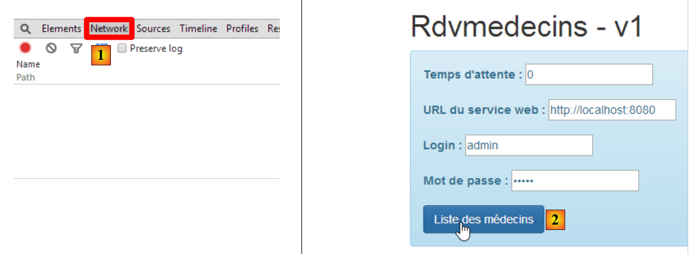 |
- في [1]، نختار علامة التبويب [network]؛
- في [2]، نطلب قائمة الأطباء؛
نحصل على المعلومات التالية في علامة التبويب [network]:
 |
- في [1]، المعلومات المرسلة إلى الخادم؛
- في [2]، رد الخادم؛
يمكننا أن نرى في [1] أن المتصفح أرسل طلبًا HTTP [OPTIONS] بشأن URL المطلوب. [OPTIONS] هو أحد الأوامر الممكنة لـ HTTP، إلى جانب الأوامر الأكثر شهرة [GET] و [POST]. وهي تتيح طلب معلومات من الخادم، لا سيما حول خيارات HTTP التي يدعمها، ومن هنا جاء اسم الأمر. يقدم الخادم ردّه باستخدام [2]. وللإشارة إلى أنه يقبل الطلبات الواردة من عملاء ليسوا ضمن نطاقه، يجب عليه إرجاع رأس خاص يُسمى [Access-Control-Allow-Origin]. ولأنه لم يرسل هذا الرأس، لم يقم Angular بتنفيذ الاستدعاء المطلوب HTTP وأرجع الخطأ التالي:
XMLHttpRequest cannot load http://localhost:8080/getAllMedecins. لا يوجد رأس «Access-Control-Allow-Origin» في المورد المطلوب. وبالتالي، لا يُسمح لمصدر «http://localhost:63342» بالوصول.
لذلك، يتعين علينا تعديل الخادم الخاص بنا ليقوم بإرسال رأس الرسالة المتوقع HTTP.
3.7.6.6. تعديل خادم الويب / JSON
نعود إلى Eclipse. للحفاظ على ما تم إنجازه، نقوم بنسخ الإصدار الحالي لخادم الويب / JSON [rdvmedecins-webapi-v2] إلى [rdvmedecins-webapi-v3] [1]:
 |
نقوم بإجراء تعديل أولي في [ApplicationModel]، وهو أحد عناصر تكوين خدمة الويب:
package rdvmedecins.web.models;
...
@Component
public class ApplicationModel implements IMetier {
// الطبقة [métier]
@Autowired
private IMetier métier;
// بيانات مستمدة من الطبقة [métier]
private List<Medecin> médecins;
private List<Client> clients;
private List<String> messages;
// بيانات التكوين
private boolean CORSneeded = true;
...
public boolean isCORSneeded() {
return CORSneeded;
}
}
- السطر 17: نقوم بإنشاء متغير منطقي يحدد ما إذا كنا نقبل أم لا العملاء من خارج نطاق الخادم؛
- الأسطر 21-23: طريقة الوصول إلى هذه المعلومات؛
ثم نقوم بإنشاء وحدة تحكم Spring جديدة MVC [3]:
 |
الفئة [RdvMedecinsCorsController] هي كما يلي:
package rdvmedecins.web.controllers;
import javax.servlet.http.HttpServletResponse;
import org.springframework.beans.factory.annotation.Autowired;
import org.springframework.stereotype.Controller;
import org.springframework.web.bind.annotation.RequestMapping;
import org.springframework.web.bind.annotation.RequestMethod;
import rdvmedecins.web.models.ApplicationModel;
@Controller
public class RdvMedecinsCorsController {
@Autowired
private ApplicationModel application;
// إرسال الخيارات إلى العميل
private void sendOptions(HttpServletResponse response) {
if (application.isCORSneeded()) {
// تحديد رأس الرسالة CORS
response.addHeader("Access-Control-Allow-Origin", "*");
}
}
// قائمة الأطباء
@RequestMapping(value = "/getAllMedecins", method = RequestMethod.OPTIONS)
public void getAllMedecins(HttpServletResponse response) {
sendOptions(response);
}
}
- الأسطر 28-31: تحدد وحدة تحكم لـ URL [/getAllMedecins] عند طلبها باستخدام الأمر HTTP [OPTIONS]؛
- السطر 29: تقبل الطريقة [getAllMedecins] كمعلمة الكائن [HttpServletResponse] الذي سيتم إرساله إلى العميل الذي قدم الطلب. يتم إدخال هذا الكائن بواسطة Spring؛
- السطر 30: يتم تفويض معالجة الطلب إلى الطريقة الخاصة الموجودة في الأسطر 19-25؛
- السطران 15-16: يتم حقن الكائن [ApplicationModel]؛
- الأسطر 20-23: إذا كان الخادم مُهيأً لقبول العملاء من خارج نطاقه، يتم إرسال الرأس HTTP:
Access-Control-Allow-Origin: *
مما يعني أن الخادم يقبل العملاء من أي مجال (*).
نحن الآن جاهزون لإجراء اختبارات جديدة. نقوم بتشغيل الإصدار الجديد من خدمة الويب ونكتشف أن المشكلة لا تزال قائمة. لم يتغير شيء. إذا أضفنا عرضًا على وحدة التحكم في السطر 30 أعلاه، فلن يتم عرضه أبدًا، مما يدل على أن الطريقة [getAllMedecins] في السطر 29 لم يتم استدعاؤها أبدًا.
بعد إجراء بعض الأبحاث، اكتشفنا أن Spring MVC يعالج بنفسه الأوامر HTTP و[OPTIONS] باستخدام معالجة افتراضية. وبالتالي، فإن Spring هو الذي يستجيب دائمًا، ولا يتم استدعاء الطريقة [getAllMedecins] في السطر 29 أبدًا. يمكن تغيير هذا السلوك الافتراضي لـ Spring MVC. نضيف فئة تكوين جديدة لتعيين السلوك الجديد:
 |
فئة التكوين الجديدة [WebConfig] هي كما يلي:
package rdvmedecins.web.config;
import org.springframework.boot.autoconfigure.EnableAutoConfiguration;
import org.springframework.context.annotation.Bean;
import org.springframework.web.servlet.DispatcherServlet;
import org.springframework.web.servlet.config.annotation.WebMvcConfigurerAdapter;
@Configuration
public class WebConfig extends WebMvcConfigurerAdapter {
// تكوين dispatcherservlet للرؤوس CORS
@Bean
public DispatcherServlet dispatcherServlet() {
DispatcherServlet servlet = new DispatcherServlet();
servlet.setDispatchOptionsRequest(true);
return servlet;
}
}
- السطر 8: الفئة هي فئة تكوين Spring. وهي تعلن عن حبات (beans) سيتم وضعها في سياق Spring؛
- السطر 12: تُستخدم الحبة [dispatcherServlet] لتعريف السيرفلت الذي يدير طلبات العملاء. وهي من النوع [DispatcherServlet]. عادةً ما يتم إنشاء هذا السيرفلت افتراضيًا. إذا قمنا بإنشائه بأنفسنا، فيمكننا عندئذٍ تهيئته؛
- السطر 14: يتم إنشاء مثيل من النوع [DispatcherServlet]؛
- السطر 15: نطلب من السيرفلت أن يقوم بتوجيه الأوامر HTTP و [OPTIONS] إلى التطبيق؛
- السطر 16: نجعل السيرفلت مهيأً بهذه الطريقة؛
يبقى علينا تعديل الفئة [AppConfig]:
package rdvmedecins.web.config;
import org.springframework.boot.autoconfigure.EnableAutoConfiguration;
import org.springframework.context.annotation.ComponentScan;
import org.springframework.context.annotation.Import;
import rdvmedecins.config.DomainAndPersistenceConfig;
@EnableAutoConfiguration
@ComponentScan(basePackages = { "rdvmedecins.web" })
@Import({ DomainAndPersistenceConfig.class, SecurityConfig.class, WebConfig.class })
public class AppConfig {
}
- السطر 11: يتم استيراد فئة التكوين الجديدة [WebConfig]؛
3.7.6.7. اختبارات التطبيق - 2
نقوم بتشغيل الإصدار الجديد من خدمة الويب / JSON ونحاول الحصول على قائمة الأطباء باستخدام عميل Angular الخاص بنا. نراجع التبادلات الشبكية في علامة التبويب [Network]:
 |
- في [1]، يمكن ملاحظة أن الرأس HTTP [Access-Control-Allow-Origin: *] موجود الآن في استجابة الخادم. ومع ذلك، لا يزال الأمر لا يعمل. نقوم بفحص سجلات وحدة التحكم في [2]. ونجد فيها السجل التالي:
XMLHttpRequest cannot load http://localhost:8080/getAllMedecins. حقل رأس الطلب Authorization غير مسموح به بواسطة Access-Control-Allow-Headers
نلاحظ أن المتصفح ينتظر رأسًا جديدًا HTTP [Access-Control-Allow-Headers] يُخبره بأننا مخولون بإرسال رأس المصادقة إليه:
قد يكون هذا مؤشراً إيجابياً. ربما أراد Angular إرسال الأمر HTTP GET. ولكن بما أن هذا الأمر مصحوب برأس مصادقة، فإنه يستفسر عما إذا كان الخادم يقبله أم لا.
نقوم بتعديل خادم الويب الخاص بنا / JSON لإرسال هذا الرأس. تتطور الفئة [RdvMedecinsCorsController] على النحو التالي:
// إرسال الخيارات إلى العميل
private void sendOptions(HttpServletResponse response) {
if (application.isCORSneeded()) {
// تعيين رأس CORS
response.addHeader("Access-Control-Allow-Origin", "*");
// تم السماح برأس الرسالة [Authorization]
response.addHeader("Access-Control-Allow-Headers", "Authorization");
}
- تضيف السطران 6 و7 رأس الرسالة المفقود.
نقوم بإعادة تشغيل الخادم ونطلب قائمة الأطباء مرة أخرى باستخدام عميل Angular:
 |
هذه المرة، نجح الأمر. تُظهر سجلات وحدة التحكم الاستجابة التي تم تلقيها بواسطة الطريقة [dao.getData]:
[dao] getData[/getAllMedecins] success réponse : {"data":{"status":0,"data":[{"id":1,"version":1,"titre":"Mme","nom":"PELISSIER","prenom":"Marie"},{"id":2,"version":1,"titre":"Mr","nom":"BROMARD","prenom":"Jacques"},{"id":3,"version":1,"titre":"Mr","nom":"JANDOT","prenom":"Philippe"},{"id":4,"version":1,"titre":"Melle","nom":"JACQUEMOT","prenom":"Justine"}]},"status":200,"config":{"method":"GET","transformRequest":[null],"transformResponse":[null],"timeout":1000,"url":"http://localhost:8080/getAllMedecins","headers":{"Accept":"application/json, text/plain, */*","Authorization":"Basic YWRtaW46YWRtaW4="}},"statusText":"OK"}
ونلاحظ أن:
- أرسل الخادم رمز خطأ [status=200] مع الرسالة [statusText=OK]. ولهذا السبب نحن الآن داخل الدالة [success]؛
- أعاد الخادم كائنًا [data] يحتوي على حقلين:
- [status]: (لا ينبغي الخلط بينه وبين رمز الخطأ HTTP [status]). هنا يشير [status=0] إلى أن URL و [/getAllMedecins] تمت معالجتهما دون أخطاء؛
- [data]: الذي يحتوي على قائمة JSON بالأطباء؛
لنستعرض الآن حالات أخرى مثيرة للاهتمام:
هناك خطأ في المعرّفات [login, password]:
 |
تم تسجيل الدخول باستخدام المعرف [user / user] الذي لا يملك حق الوصول إلى التطبيق (فقط [admin] يملك حق الوصول):
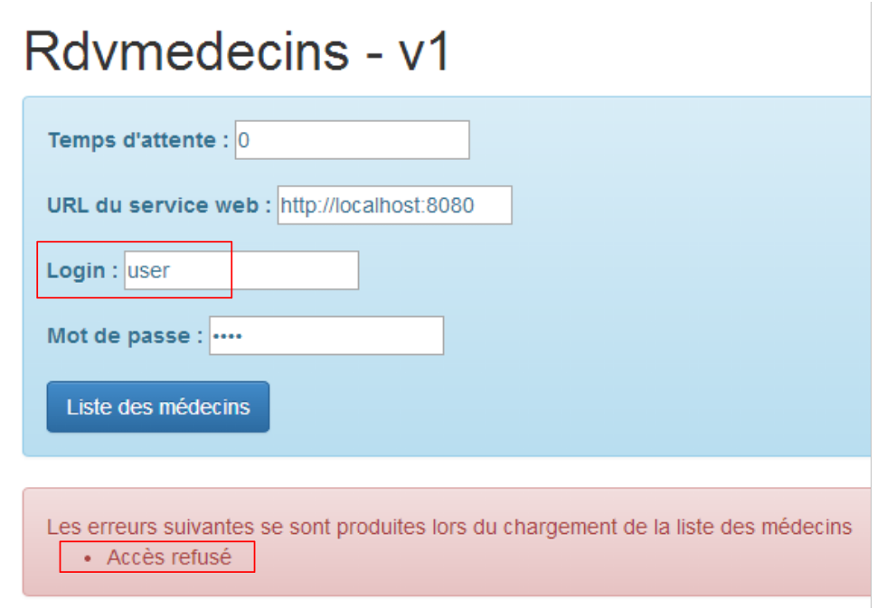 |
هذه المرة، لم يعد الخطأ هو [Erreur d'authentification] بل أصبح [Accès refusé].
3.7.7. المثال 7: قائمة العملاء
نستأنف التطبيق السابق لنعرض هذه المرة قائمة العملاء في قائمة منسدلة من النوع [Bootstrap select]) (انظر الفقرة 3.6.6).
3.7.7.1. الطريقة V
سيكون العرض الأولي كما يلي:
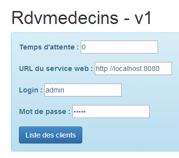 |
للحصول على العرض V، نقوم بنسخ الكود [app-16.html] إلى [app-17.html] ونعدله على النحو التالي:
<div class="container" >
<h1>Rdvmedecins - v1</h1>
<!-- رسالة الانتظار -->
<div class="alert alert-warning" ng-show="waiting.visible" >
...
</div>
<!-- الطلب -->
<div class="alert alert-info" ng-hide="waiting.visible" >
...
<button class="btn btn-primary" ng-click="execute()">{{clients.title|translate}}</button>
</div>
<!-- قائمة العملاء -->
<div class="row" style="margin-top: 20px" ng-show="clients.show">
<div class="col-md-3">
<h2 translate="{{clients.title}}"></h2>
<select data-style="btn-primary" class="selectpicker">
<option ng-repeat="client in clients.data" value="{{client.id}}">
{{client.titre}} {{client.prenom}} {{client.nom}}
</option>
</select>
</div>
</div>
<!-- قائمة الأخطاء -->
<div class="alert alert-danger" ng-show="errors.show">
...
</div>
</div>
....
<script type="text/javascript" src="rdvmedecins-05.js"></script>
- الأسطر 5-7: لا يتغير شريط الانتظار؛
- الأسطر 10-13: لا يتغير النموذج، باستثناء نص الزر (السطر 12)؛
- الأسطر 28-30: لا يتغير شريط الأخطاء؛
- الأسطر 16-25: يتم عرض العملاء في قائمة منسدلة مصممة بواسطة المكون [Bootstrap-selectpicker] (السمات data-style و class، السطر 19)؛
- السطر 20: تُستخدم التوجيهية [ng-repeat] لتوليد الخيارات المختلفة للقائمة المنسدلة. تجدر الإشارة إلى أن نص الخيار من النوع [Mme Julienne Tatou] وأن قيمة الخيار من النوع [100] حيث يمثل الرقم 100 معرّف (id) العميل المعروض؛
- السطر 34: يتم نقل كود جافا سكريبت إلى ملف جديد [rdvmedecins-05]؛
3.7.7.2. وحدة التحكم C والنموذج M
يتم الحصول على كود جافا سكريبت الخاص بالملف [rdvmedecins-05] عن طريق نسخ الملف [rdvmedecins-04]:

لم يتغير شيء تقريبًا، باستثناء وحدة التحكم التي تم تكييفها الآن لتقديم قائمة العملاء:
angular.module("rdvmedecins")
.controller('rdvMedecinsCtrl', ['$scope', 'utils', 'config', 'dao', '$translate',
function ($scope, utils, config, dao, $translate) {
// ------------------- تهيئة النموذج
// القالب
$scope.waiting = {text: config.msgWaiting, visible: false, cancel: cancel, time: undefined};
$scope.waitingTimeText = config.waitingTimeText;
$scope.server = {url: undefined, login: undefined, password: undefined};
$scope.clients = {title: config.listClients, show: false, model: {}};
$scope.errors = {show: false, model: {}};
$scope.urlServerLabel = config.urlServerLabel;
$scope.loginLabel = config.loginLabel;
$scope.passwordLabel = config.passwordLabel;
// مهمة غير متزامنة
var task;
// تنفيذ الإجراء
$scope.execute = function () {
// يتم تحديث UI
$scope.waiting.visible = true;
$scope.clients.show = false;
$scope.errors.show = false;
// انتظار محاكى
task = utils.waitForSomeTime($scope.waiting.time);
var promise = task.promise;
// في انتظار
promise = promise.then(function () {
// يتم طلب قائمة العملاء؛
task = dao.getData($scope.server.url, $scope.server.login, $scope.server.password, config.urlSvrClients);
return task.promise;
});
// تحليل نتيجة الاستدعاء السابق
promise.then(function (result) {
// result={err: 0, data: [client1, client2, ...]}
// result={err: n, messages: [msg1, msg2, ...]}
if (result.err == 0) {
// يتم إدخال البيانات المجمعة في النموذج
$scope.clients.data = result.data;
// يتم تحديث UI
$scope.clients.show = true;
$scope.waiting.visible = false;
// يتم تصميم القائمة المنسدلة
$('.selectpicker').selectpicker();
} else {
// حدثت أخطاء أثناء الحصول على قائمة العملاء
$scope.errors = { title: config.getClientsErrors, messages: utils.getErrors(result), show: true, model: {}};
// يتم تحديث UI
$scope.waiting.visible = false;
}
});
};
// إلغاء في الانتظار
function cancel() {
// يتم إنهاء المهمة
task.reject();
// يتم تحديث UI
$scope.waiting.visible = false;
$scope.clients.show = false;
$scope.errors.show = false;
}
}
])
;
- لم يتغير سوى القليل جدًا في وحدة التحكم. كانت تقدم قائمة بالأطباء. وهي تقدم الآن قائمة بالعملاء؛
- السطر 9: سيكون [$scope.clients] نموذج شريط العملاء في طريقة العرض V؛
- السطر 30: يتم الآن استخدام URL [/getAllClients]؛
- السطران 35-36: شكلا الاستجابة اللذان تقدمهما الطريقة [dao.getData]. أصبح لدينا الآن عملاء بدلاً من الأطباء؛
- السطر 44: تعليمة نادرة إلى حد ما في كود Angular. يتم التعامل مباشرة مع DOM (نموذج كائن المستند). هنا نريد تطبيق الطريقة [selectpicker] (التي تشكل جزءًا من [bootstrap-select.min.js]) على عناصر DOM التي تنتمي إلى الفئة [selectpicker] [$('.selectpicker')]. ولا يوجد سوى عنصر واحد، وهو القائمة المنسدلة:
<select data-style="btn-primary" class="selectpicker" select-enable="">
....
</select>
في الفقرة 3.6.6، تم توضيح أن هذا يضفي نمطًا على القائمة المنسدلة على النحو التالي:
 |  |
وكما حدث مع الأطباء، يتعين علينا تعديل خدمة الويب أيضًا.
3.7.7.3. تعديل الخدمة الإلكترونية - 1
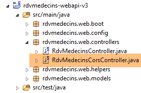 |
تمت إضافة طريقة جديدة إلى الفئة [RdvMedecinsController]:
package rdvmedecins.web.controllers;
...
@Controller
public class RdvMedecinsCorsController {
@Autowired
private ApplicationModel application;
// إرسال الخيارات إلى العميل
private void sendOptions(HttpServletResponse response) {
if (application.isCORSneeded()) {
// تحديد الرأس CORS
response.addHeader("Access-Control-Allow-Origin", "*");
// تمت الموافقة على الرأس [Authorization]
response.addHeader("Access-Control-Allow-Headers", "Authorization");
}
}
// قائمة الأطباء
@RequestMapping(value = "/getAllMedecins", method = RequestMethod.OPTIONS)
public void getAllMedecins(HttpServletResponse response) {
sendOptions(response);
}
// قائمة العملاء
@RequestMapping(value = "/getAllClients", method = RequestMethod.OPTIONS)
public void getAllClients(HttpServletResponse response) {
sendOptions(response);
}
}
- الأسطر 29-32: ستتولى الطريقة [getAllClients] معالجة الطلب HTTP [OPTIONS] الذي سيرسله المتصفح إليها؛
3.7.7.4. اختبارات التطبيق – 1
نحن الآن جاهزون لإجراء الاختبار. نقوم بتشغيل خادم الويب ثم ندخل قيمًا صالحة في نموذج Angular. ونحصل على الرد التالي:

تظهر رسالة الخطأ هذه عندما يتعذر على Angular تنفيذ الطلب HTTP المطلوب. لذا، يجب البحث عن أسباب ذلك في سجلات وحدة التحكم. حيث نجد الرسالة التالية:
XMLHttpRequest cannot load http://localhost:8080/getAllClients. لا يوجد رأس «Access-Control-Allow-Origin» في المورد المطلوب. وبالتالي، لا يُسمح لمصدر «http://localhost:63342» بالوصول.
مشكلة كنا نعتقد أنها حُلّت. سنقوم الآن بمراجعة عمليات تبادل البيانات التي حدثت عبر الشبكة:

نلاحظ أن العملية [getAllClients] باستخدام الطريقة HTTP [OPTIONS]بنجاح، لكن العملية [getAllClients] باستخدام الطريقة HTTP [GET] قد تم إلغاؤها. وكان الرد على الطلب [OPTIONS] كما يلي:

توجد الرؤوس HTTP الخاصة بـ CORS بالفعل. لنفحص الآن التبادلات HTTP أثناء GET:

يبدو أن الطلب HTTP صحيح. ونلاحظ على وجه الخصوص رأس المصادقة.
بالإضافة إلى رسالة الخطأ السابقة، نجد في سجلات وحدة التحكم الرسالة التالية:
[dao] getData[/getAllClients] error réponse : {"data":"","status":0,"config":{"method":"GET","transformRequest":[null],"transformResponse":[null],"timeout":1000,"url":"http://localhost:8080/getAllClients","headers":{"Accept":"application/json, text/plain, */*","Authorization":"Basic YWRtaW46YWRtaW4="}},"statusText":""}
هذا هو السجل الذي تقوم به الطريقة [dao.getData] بشكل منهجي عند استلام الرد على طلبها HTTP. يمكن ملاحظة أمرين:
- [status=0]: هذا يعني أن Angular هي التي ألغت الطلب HTTP؛
- [method=GET]: وهذا يعني أن الطلب GET هو الذي تم إلغاؤه؛
وبالربط مع الرسالة الأولى، فهذا يعني أن Angular ينتظر هنا أيضًا رؤوس CORS للطلب GET. ولكن في الوقت الحالي، لا ترسل خدمة الويب الخاصة بنا هذه الرؤوس إلا لطلب HTTP و[OPTIONS]. من الغريب جدًّا أن نواجه هذا الخطأ الآن وليس عند عرض قائمة الأطباء. ليس لدي أي تفسير لذلك.
لذلك، يجب تعديل خدمة الويب مرة أخرى.
3.7.7.5. تعديل خدمة الويب – 2
 |
تتم معالجة الطريقتين [GET] و [POST] في الفئة [RdvMedecinsController]. يتعين علينا تعديلها بحيث ترسل هاتان الطريقتان الرؤوس CORS. ونقوم بذلك على النحو التالي:
@RestController
public class RdvMedecinsController {
@Autowired
private ApplicationModel application;
@Autowired
private RdvMedecinsCorsController rdvMedecinsCorsController;
...
// قائمة العملاء
@RequestMapping(value = "/getAllClients", method = RequestMethod.GET)
public Reponse getAllClients(HttpServletResponse response) {
// رؤوس CORS
rdvMedecinsCorsController.getAllClients(response);
// حالة التطبيق
if (messages != null) {
return new Reponse(-1, messages);
}
// قائمة العملاء
try {
return new Reponse(0, application.getAllClients());
} catch (Exception e) {
return new Reponse(1, Static.getErreursForException(e));
}
}
...
- السطر 8: نريد إعادة استخدام الكود الذي وضعناه في وحدة التحكم [RdvMedecinsCorsController]. لذا نقوم بإدراجه هنا؛
- السطر 14: الطريقة التي تعالج الطلب [GET /getAllClients]. نقوم بإجراء تعديلين:
- السطر 14: نقوم بإدراج الكائن [HttpServletResponse] في معلمات الطريقة،
- السطر 16: نستخدم طرق الفئة [RdvMedecinsCorsController] لإدراج الرؤوس CORS في هذا الكائن؛
3.7.7.6. اختبارات التطبيق – 2
نقوم بتشغيل الإصدار الجديد من خدمة الويب ونطلب قائمة العملاء مرة أخرى. ونحصل على الرد التالي:
 |
- في [1]، لدينا رد بالفعل ولكنه فارغ [2]؛
- في [3]: سارت عمليات التبادل عبر الشبكة بشكل جيد؛
في سجلات وحدة التحكم، عرضت الطريقة [dao.getData] الرد الذي تلقتْه:
[dao] getData[/getAllClients] success réponse : {"data":{"status":0,"data":[{"id":1,"version":1,"titre":"Mr","nom":"MARTIN","prenom":"Jules"},{"id":2,"version":1,"titre":"Mme","nom":"GERMAN","prenom":"Christine"},{"id":3,"version":1,"titre":"Mr","nom":"JACQUARD","prenom":"Jules"},{"id":4,"version":1,"titre":"Melle","nom":"BISTROU","prenom":"Brigitte"}]},"status":200,"config":{"method":"GET","transformRequest":[null],"transformResponse":[null],"timeout":1000,"url":"http://localhost:8080/getAllClients","headers":{"Accept":"application/json, text/plain, */*","Authorization":"Basic YWRtaW46YWRtaW4="}},"statusText":"OK"}
وبالتالي، فقد تلقت الطريقة قائمة العملاء بنجاح. وبعد التحقق من الكود، بدأنا نشك في الأمر التالي الذي لا نفهمه جيدًا:
// تصميم القائمة المنسدلة
$('.selectpicker').selectpicker();
نضع السطر 2 في التعليقات ونحاول مرة أخرى. عندها نحصل على الرد التالي:
 |
وبذلك نكون قد حددنا مكان المشكلة. المشكلة تكمن في تطبيق الأسلوب [selectpicker] على القائمة المنسدلة. وعند الاطلاع على الكود المصدري للصفحة التي تحتوي على الخطأ، نجد ما يلي:
 |
- نكتشف أنه في [1]، القائمة المنسدلة موجودة بالفعل مع عناصرها ولكنها غير معروضة [style='display:none']؛
- وفي [2]، نرى زر [bootstrap select] معروضًا. من المفترض أن تظهر عناصر القائمة المنسدلة في القائمة <ul role='menu'>. لكنها غير موجودة هناك، وبالتالي فإن القائمة فارغة. يبدو أنه عند تطبيق الطريقة [selectpicker] على القائمة المنسدلة، كان محتواها فارغًا في ذلك الوقت؛
عند البحث في الإنترنت عن حل، نجد هذا الحل. نقوم باستبدال الكود:
// تصميم القائمة المنسدلة
$('.selectpicker').selectpicker();
بالرمز التالي:
// تصميم القائمة المنسدلة
$timeout(function(){
$('.selectpicker').selectpicker();
});
يتم تطبيق النمط [bootstrap-select] من خلال دالة [$timeout]. لقد سبق أن تعرفنا على هذه الدالة التي تسمح بتنفيذ دالة بعد مرور فترة زمنية معينة. هنا، عدم وجود فترة زمنية يعني أن الفترة الزمنية تساوي صفرًا. تضع الأسطر السابقة حدثًا في قائمة انتظار أحداث المتصفح. عندما يوشك معالجة الحدث الجاري (النقر على الزر [Liste des clients]) على الانتهاء، سيتم عرض العرض V. ثم بعد ذلك مباشرةً، سيقوم المتصفح بالاطلاع على قائمة الأحداث الخاصة به. ونظرًا لعدم وجود فترة انتظار، سيكون الحدث [$timeout] في مقدمة القائمة وسيتم معالجته. عندئذٍ يتم تطبيق النمط [bootstrap-select] على قائمة منسدلة مملوءة. لنرى النتيجة:
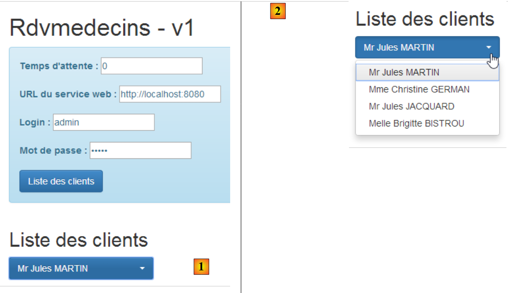 |
إذا أعدنا النظر إلى شفرة المصدر للصفحة المعروضة، فسنجد ما يلي:
 |
أصبح الزر [bootstrap-select]، الذي كان فارغًا في السابق، يحتوي الآن على قائمة العملاء.
3.7.7.7. استخدام توجيه
لقد صادفنا في وحدة التحكم C الخاصة بالعرض V الكود التالي:
// تصميم القائمة المنسدلة
$('.selectpicker').selectpicker();
نقوم هنا بمعالجة كائن من نوع DOM. يعاني العديد من مطوري Angular من حساسية تجاه معالجة كائن من نوع DOM في كود وحدة التحكم. بالنسبة لهم، يجب أن تتم هذه المعالجة ضمن توجيه. يمكن النظر إلى توجيه Angular على أنه امتداد للغة HTML. وبذلك يصبح من الممكن إنشاء عناصر أو سمات جديدة لـ HTML. لنلقِ نظرة على المثال الأول:
نقوم بإنشاء الملف JS [selectEnable] التالي:
angular.module("rdvmedecins").directive('selectEnable', ['$timeout', function ($timeout) {
return {
link: function (scope, element, attrs) {
$timeout(function () {
var selectpicker = $('.selectpicker');
selectpicker.selectpicker();
});
}
};
}]);
- تتبع التوجيهية صيغة وحدة التحكم التي اعتدنا عليها الآن:
angular.module("rdvmedecins").directive('selectEnable', ['$timeout', function ($timeout)
تنتمي هذه التعليمات إلى الوحدة النمطية [rvmedecins]. وهي دالة تقبل معلمتين:
- (تابع)
- الأول هو اسم التوجيه [selectEnable]؛
- والمعلمة الثانية هي مصفوفة ['obj1','obj2',..., function(obj1, obj2,...)] حيث تمثل العناصر [obj] الكائنات المراد إدخالها في الدالة. وهنا، الكائن الوحيد الذي يتم إدخاله هو الكائن المُعرَّف مسبقًا [$timeout]؛
- تُرجع الدالة [directive] كائنًا قد يحتوي على سمات متنوعة. هنا، السمة الوحيدة هي السمة [link] (السطر 3). قيمتها هنا هي دالة تقبل ثلاثة معلمات:
- scope: قالب العرض الذي تُستخدم فيه التوجيهية؛
- element: عنصر العرض، وهو موضوع التوجيه؛
- attrs: سمات هذا العنصر؛
لنأخذ مثالاً. يمكن استخدام التوجيه [selectEnable] في السياق التالي:
في المثال أعلاه، تقوم السمة [select-enable] بتطبيق التوجيه [selectEnable] على العنصر HTML <div>. يمكن تطبيق توجيه [doSomething] على أي عنصر HTML عن طريق إضافة السمة [do-something] إليه. يجب الانتباه إلى الاختلاف في الكتابة بين اسم التوجيه والسمة المرتبطة به. حيث يتم الانتقال من الكتابة [camelCase] إلى الكتابة [camel-case].
يمكن أيضًا استخدام التوجيه [selectEnable] بالطريقة التالية:
هنا يتم تطبيق التوجيه [doSomething] في شكل علامة HTML <do-something>.
لنعد إلى الكتابة
وإلى المعلمات الثلاثة للدالة [link] الخاصة بالتوجيه، [scope, element, attrs]:
- scope: هو قالب العرض الذي توجد فيه <div>؛
- element: هي <div> نفسها؛
- attrs: هو مصفوفة سمات <div>. يمكن استخدام هذه السمات لنقل المعلومات إلى التوجيه. في المثال أعلاه، سنكتب attrs['selectEnable'] للحصول على المعلومات [data]. يجب ملاحظة التغيير في الكتابة [selectEnable] للإشارة إلى السمة [select-enable]؛
لنعد إلى كود التوجيه:
angular.module("rdvmedecins").directive('selectEnable', ['$timeout', function ($timeout) {
return {
link: function (scope, element, attrs) {
$timeout(function () {
$('.selectpicker').selectpicker();
});
}
};
}]);
- الأسطر 14-16: نجد هنا الكود الذي وضعناه سابقًا في وحدة التحكم. ويتم تنفيذ هذا الكود عند ظهور التوجيه [select-enable] (في شكل عنصر أو سمة) أثناء عرض العرض V.
لتنفيذ هذه التوجيهية، نقوم بنسخ الملف [app-17.html] إلى [app-17B.html] ونعدله على النحو التالي:
<select data-style="btn-primary" class="selectpicker" select-enable="">
<option ng-repeat="client in clients.data" value="{{client.id}}">
{{client.titre}} {{client.prenom}} {{client.nom}}
</option>
</select>
- السطر 1: نطبق التوجيه [selectEnable] على العنصر HTML [select]. ونظرًا لعدم وجود معلومات يجب تمريرها إلى التوجيه، فإننا نكتفي بكتابة [select-enable=""]؛
كما نقوم بتعديل وحدة التحكم عن طريق نسخ الملف JS [rdvmedecins-05.js] إلى [rdvmedecins-05B.js]، ونشير إلى الملف الجديد JS في ملف التوجيه [app-17B.html] والملف [selectEnable.js] الخاص بالتوجيه. يجب ألا ننسى هذه النقطة الأخيرة. إذا كان ملف التوجيه غائبًا، فلن تتم معالجة السمة [select-enable=""]، لكن Angular لن يُشير إلى أي خطأ.
<script type="text/javascript" src="rdvmedecins-05B.js"></script>
<script type="text/javascript" src="selectEnable.js"></script>
في الملف JS [rdvmedecins-05B.js]، نحذف الأسطر التالية من وحدة التحكم:
// تصميم القائمة المنسدلة
$timeout(function(){
$('.selectpicker').selectpicker();
});
حيث إن هذه العملية تتم الآن بواسطة التوجيه.
3.7.7.8. اختبارات التطبيق – 3
عند اختبار التطبيق الجديد [app-17B.html]، نحصل على النتيجة التالية:
 |
- في [1]، نحصل على قائمة فارغة.
تعرض سجلات وحدة التحكم ما يلي:
- السطر 1: تهيئة الخدمة [dao]؛
- السطر 2: عند العرض الأولي للطريقة V، يتم تنفيذ التوجيه [selectEnable]؛
- السطر 3: يظهر هذا السطر عندما ينقر المستخدم على الزر [Liste des clients]. ونلاحظ عندئذٍ أن التوجيه [selectEnable] لا يتم تنفيذه مرة ثانية. وفي النهاية، تم تنفيذه عندما كانت قائمة العملاء فارغة، وبالتالي نحصل على قائمة منسدلة فارغة؛
بعبارة أخرى، العملية:
$('.selectpicker').selectpicker();
لم تتم في الوقت المناسب. يمكننا محاولة حل المشكلة بطرق مختلفة. بعد العديد من الاختبارات غير المثمرة، ندرك أن العملية المذكورة أعلاه يجب ألا تتم إلا مرة واحدة وفقط عندما تكون القائمة المنسدلة قد تم ملؤها. للحصول على هذه النتيجة، نعيد كتابة العلامة <select> على النحو التالي:
<select data-style="btn-primary" class="selectpicker" select-enable="" ng-if="clients.data">
<option ng-repeat="client in clients.data" value="{{client.id}}">
{{client.titre}} {{client.prenom}} {{client.nom}}
</option>
</select>
في السطر 1، لا يتم إنشاء العلامة <select> إلا في حالة وجود [clients.data]. وهذا ليس هو الحال عند العرض الأولي للطريقة V. وبالتالي، لن يتم إنشاء العلامة <select> ولن يتم تقييم التوجيه [selectEnable]. عندما ينقر المستخدم على الزر [Liste des clients]، ستحصل [clients.data] على قيمة جديدة في النموذج M. ونظرًا لتغير النموذج M، سيتم إعادة تقييم العلامة <select> وستُنشأ هنا. وبالتالي، سيتم تقييم التوجيه [selectEnable] أيضًا. عند تقييمه، لم يتم بعد تقييم الأسطر 2-4 من العلامة <select>. وبالتالي، تكون قائمة العملاء فارغة. إذا كتبنا التوجيه [selectEnable] بالطريقة التالية:
angular.module("rdvmedecins").directive('selectEnable', ['$timeout', 'utils', function ($timeout, utils) {
return {
link: function (scope, element, attrs) {
utils.debug("directive selectEnable");
$('.selectpicker').selectpicker();
}
}
}]);
سيتم تنفيذ السطر 5 بقائمة فارغة، وبالتالي ستظهر قائمة منسدلة فارغة على الشاشة. لذا يجب كتابة:
angular.module("rdvmedecins").directive('selectEnable', ['$timeout', 'utils', function ($timeout, utils) {
return {
link: function (scope, element, attrs) {
utils.debug("directive selectEnable");
$timeout(function () {
$('.selectpicker').selectpicker();
})
}
}
}]);
للحصول على النتيجة المتوقعة. وبسبب وجود [$timeout] في السطر 5، لن يتم تنفيذ السطر 6 إلا بعد التقييم الكامل للطريقة V، أي في اللحظة التي تحتوي فيها العلامة <select> على جميع عناصرها.
3.7.8. المثال 8: جدول مواعيد الطبيب
نقدم الآن تطبيقًا يعرض جدول مواعيد الطبيب.
3.7.8.1. الطريقة V للتطبيق
سنعرض النموذج التالي:
 |
- في [1]، نطلب جدول مواعيد السيدة PELISSIER [2]، في 25 يونيو 2014 [3]؛
ونحصل على النتيجة التالية: [4]:
 |
سنقوم بدراسة كل من العرضين على حدة.
3.7.8.2. النموذج
نقوم بنسخ الملف [app-17.html] إلى [app-18.html] ثم نعدل الكود على النحو التالي:
<div class="container">
<h1>Rdvmedecins - v1</h1>
<!-- رسالة الانتظار -->
<div class="alert alert-warning" ng-show="waiting.visible">
...
</div>
<!-- الطلب -->
<div class="alert alert-info" ng-hide="waiting.visible">
<div class="row" style="margin-bottom: 20px">
<div class="col-md-3">
<h2 translate="{{medecins.title}}"></h2>
<select data-style="btn-primary" class="selectpicker">
<option ng-repeat="medecin in medecins.data" value="{{medecin.id}}">
{{medecin.titre}} {{medecin.prenom}} {{medecin.nom}}
</option>
</select>
</div>
<div class="col-md-3">
<h2 translate="{{calendar.title}}"></h2>
<div style="display:inline-block; min-height:290px;">
<datepicker ng-model="calendar.jour" min-date="calendar.minDate" show-weeks="true"
class="well well-sm"></datepicker>
</div>
</div>
</div>
<button class="btn btn-primary" ng-click="execute()">{{agenda.title|translate}}</button>
</div>
<!-- قائمة الأخطاء -->
<div class="alert alert-danger" ng-show="errors.show">
...
</div>
<!-- التقويم -->
<div id="agenda" ng-show="agenda.show">
...
</div>
</div>
...
<script type="text/javascript" src="rdvmedecins-06.js"></script>
- الأسطر 5-7: رسالة الانتظار لا تتغير؛
- الأسطر 12-19: قائمة الأطباء من النوع [bootstrap select]؛
- الأسطر 20-26: تقويم [ui-bootstrap] الذي سبق أن عرضناه. تجدر الإشارة إلى أن اليوم المحدد يتم وضعه في النموذج [calendar.jour] (السمة ng-model)؛
- السطر 28: الزر الذي يطلب عرض التقويم؛
- الأسطر 32-34: قائمة الأخطاء لم تتغير؛
- الأسطر 37-39: التقويم الذي سنعرضه لاحقًا؛
- السطر 42: يتم نقل الرمز JS إلى الملف [rdvmedecins-06.js] عن طريق نسخ الملف [rdvmedecins-05.js]؛
3.7.8.3. وحدة التحكم C
يصبح الرمز JS للتطبيق كما يلي:

لن تتأثر بهذه التعديلات سوى الخدمة [utils] ووحدة التحكم [rdvMedecinsCtrl].
يصبح وحدة التحكم [rdvMedecinsCtrl] كما يلي:
// وحدة التحكم
angular.module("rdvmedecins")
.controller('rdvMedecinsCtrl', ['$scope', 'utils', 'config', 'dao', '$translate', '$timeout', '$filter', '$locale',
function ($scope, utils, config, dao, $translate, $timeout, $filter, $locale) {
// ------------------- تهيئة النموذج
// القالب
$scope.waiting = {text: config.msgWaiting, visible: false, cancel: cancel, time: 3000};
$scope.server = {url: 'http://localhost:8080، اسم المستخدم: 'admin'، كلمة المرور: 'admin'};
$scope.errors = {show: false, model: {}};
$scope.medecins = {
data: [
{id: 1, version: 1, titre: "Mme", nom: "PELISSIER", prenom: "Marie"},
{id: 2, version: 1, titre: "Mr", nom: "BROMARD", prenom: "Jacques"},
{id: 3, version: 1, titre: "Mr", nom: "JANDOT", prenom: "Philippe"},
{id: 4, version: 1, titre: "Melle", nom: "JACQUEMOT", prenom: "Justine"}
],
title: config.listMedecins};
$scope.agenda = {title: config.getAgendaTitle, data: undefined, show: false};
$scope.calendar = {title: config.getCalendarTitle, minDate: new Date(), jour: new Date()};
// تصميم القائمة المنسدلة
$timeout(function () {
$('.selectpicker').selectpicker();
});
// الإعدادات المحلية الفرنسية للتقويم
angular.copy(config.locales['fr'], $locale);
...
}
])
;
- السطر 7: يتم تعيين فترة انتظار مدتها 3 ثوانٍ قبل إجراء استدعاء HTTP؛
- السطر 8: يتم تعيين العناصر اللازمة للاتصال بـ HTTP بشكل ثابت؛
- الأسطر 10-17: يتم تعيين قائمة الأطباء بشكل ثابت؛
- السطر 18: يقوم النموذج [agenda] بتكوين عرض التقويم في طريقة العرض؛
- السطر 19: يقوم النموذج [calendar] بتكوين عرض التقويم في العرض. يتم تعيين تاريخ أدنى [minDate] على اليوم وتاريخ اليوم أيضًا على اليوم؛
- الأسطر 21-23: يتم تصميم القائمة المنسدلة بالطريقة التي رأيناها سابقًا؛
- السطر 25: يتم تعيين الإعدادات المحلية للتطبيق على «fr». الإعداد الافتراضي هو «en»؛
الطريقة التي يتم تنفيذها عند طلب التقويم هي التالية:
// تنفيذ الإجراء
$scope.execute = function () {
// معلومات النموذج
var idMedecin = $('.selectpicker').selectpicker('val');
// التحقق
utils.debug("[homeCtrl] idMedecin", idMedecin);
utils.debug("[homeCtrl] jour", $scope.calendar.jour);
// تحويل اليوم إلى التنسيق yyyy-MM-dd
var formattedJour = $filter('date')($scope.calendar.jour, 'yyyy-MM-dd');
// تحديث العرض
$scope.waiting.visible = true;
$scope.errors.show = false;
$scope.agenda.show = false;
...
};
- السطر 4: يتم استرداد السمة [value] للطبيب المحدد. نستخدم هنا مرة أخرى الطريقة [selectpicker] المستمدة من الملف [bootstrap-select.min.js]. يجب تذكر شكل خيارات القائمة المنسدلة:
<option ng-repeat="medecin in medecins.data" value="{{medecin.id}}">
{{medecin.titre}} {{medecin.prenom}} {{medecin.nom}}
وبالتالي، فإن قيمة الخيار (السمة value) هي معرّف الطبيب [id].
- السطر 11: يتم تحويل اليوم الذي اختاره المستخدم إلى التنسيق [aaaa-mm-jj]، وهو تنسيق التاريخ الذي يتوقعه خادم الويب؛
- الأسطر 13-15: عند انتهاء تنفيذ الأسلوب [execute]، سيتم عرض شريط الانتظار وإخفاء كل العناصر الأخرى؛
ويستمر الكود على النحو التالي:
// انتظار محاكاة
var task = utils.waitForSomeTime($scope.waiting.time);
// طلب جدول مواعيد الطبيب
var promise = task.promise.then(function () {
// مسار URL الخاص بالخدمة
var path = config.urlSvrAgenda + "/" + idMedecin + "/" + formattedJour;
// يتم طلب جدول المواعيد
task = dao.getData($scope.server.url, $scope.server.login, $scope.server.password, path);
// إرجاع وعد بإتمام المهمة
return task.promise;
});
// تحليل نتيجة استدعاء الخدمة [dao]
promise.then(function (result) {
// نهاية الانتظار
$scope.waiting.visible = false;
// خطأ؟
if (result.err == 0) {
// يتم إعداد نموذج التقويم
$scope.agenda.data = result.data;
$scope.agenda.show = true;
// تنسيق عرض المواعيد
angular.forEach($scope.agenda.data.creneauxMedecin, function (creneauMedecin) {
creneauMedecin.creneau.text = utils.getTextForCreneau(creneauMedecin.creneau);
});
// يتم إنشاء حدث لتصميم الجدول بعد عرض العرض
$timeout(function () {
$("#creneaux").footable();
});
} else {
// حدثت أخطاء أثناء الحصول على التقويم
$scope.errors = {
title: config.getAgendaErrors,
messages: utils.getErrors(result),
show: true
};
}
- السطر 2: المهمة غير المتزامنة للانتظار لمدة 3 ثوانٍ؛
- الأسطر 5-10: الكود الذي سيتم تنفيذه عند انتهاء فترة الانتظار هذه؛
- السطر 6: يتم إنشاء URL الذي يستعلم عن [/getAgendaMedecinJour/1/2014-06-25]؛
- السطر 8: يتم استدعاء URL. تبدأ مهمة غير متزامنة؛
- السطر 10: يتم الوفاء بوعد هذه المهمة غير المتزامنة؛
- الأسطر 14-38: الكود الذي سيتم تنفيذه عندما ترسل استدعاء HTTP استجابته؛
- السطر 13: [result] هي الاستجابة المرسلة بواسطة الطريقة [dao.getData]. يجب هنا تذكر شكل استجابة خادم الويب:
 |
المعلمة [result.data] في السطر 19 هي السمة [data] [1] المذكورة أعلاه. وتحتوي هذه السمة بدورها على السمة [creneauxMedecin] [2] المذكورة أعلاه. وهذه السمة عبارة عن جدول يضم فترات زمنية، وتحتوي كل فترة منها على معلومتين هما:
- [rv]: النموذج JSON لموعد ما، أو [null] في حالة عدم وجود موعد محدد في هذا الوقت؛
- [hDeb, mDeb, hFin, mFin]: المعلومات المتعلقة بمواعيد الفترة الزمنية؛
لنعد إلى رمز المراقب:
- السطر 15: انتهت فترة الانتظار؛
- السطر 19: يتم ملء النموذج [$scope.agenda] الذي يتحكم في عرض جدول المواعيد؛
- السطر 20: يتم إظهار التقويم؛
- الأسطر 22-24: يتم استعراض كل عنصر من عناصر C في الجدول [creneauxMedecin] الذي تحدثنا عنه للتو؛
- السطر 23: يحتوي كل عنصر C على سمة [creneau] تمثل الفترة الزمنية. ويتم إثراء هذه السمة بسمة [text] التي ستكون التمثيل النصي للفترة الزمنية بالصيغة [10h20:10h40]؛
- الأسطر 26-28: نجعل الجدول HTML المستخدم لعرض فترات الجدول الزمني «متجاوبًا». وقد تناولنا هذا المفهوم في الفقرة 3.6.7؛
 |
- السطر 27: لجعل الجدول «متجاوبًا»، يجب تطبيق الأسلوب [footable] عليه. نواجه هنا نفس الصعوبة التي واجهناها مع المكون [bootstrap-select]. إذا كتبنا السطر 17 ببساطة، نلاحظ أن الجدول ليس «متجاوبًا». يتم حل هذه المشكلة بالطريقة نفسها باستخدام الدالة [$timeout] (السطر 26)؛
- الأسطر 31-34: الحالة التي فشل فيها استدعاء الدالة HTTP. عندئذ يتم عرض رسائل الخطأ؛
3.7.8.4. عرض التقويم
نعود الآن إلى كود التقويم في الملف [app-18.html]. وهو كما يلي:
<!-- التقويم -->
<div id="agenda" ng-show="agenda.show">
<!-- حالة الطبيب الذي ليس لديه فترات استشارة -->
<h4 class="alert alert-danger" ng-if="agenda.data.creneauxMedecin.length==0"
translate="agenda_medecinsanscreneaux"></h4>
<!-- جدول مواعيد الطبيب -->
<div class="row tab-content alert alert-warning" ng-if="agenda.data.creneauxMedecin.length!=0">
<div class="tab-pane active col-md-6">
<table creneaux-table id="creneaux" class="table">
<thead>
<tr>
<th data-toggle="true">
<span translate="agenda_creneauhoraire"></span>
</th>
<th>
<span translate="agenda_client">Client</span>
</th>
<th data-hide="phone">
<span translate="agenda_action">Action</span>
</th>
</tr>
</thead>
<tbody>
<tr ng-repeat="creneauMedecin in agenda.data.creneauxMedecin">
<td>
<span
ng-class="! creneauMedecin.rv ? 'status-metro status-active' : 'status-metro status-suspended'">
{{creneauMedecin.creneau.text}}
</span>
</td>
<td>
<span>{{creneauMedecin.rv.client.titre}} {{creneauMedecin.rv.client.prenom}} {{creneauMedecin.rv.client.nom}}</span>
</td>
<td>
<a href="" ng-if="!creneauMedecin.rv" translate="agenda_reserver" class="status-metro status-active">
</a>
<a href="" ng-if="creneauMedecin.rv" translate="agenda_supprimer" class="status-metro status-suspended">
</a>
</td>
</tr>
</tbody>
</table>
</div>
</div>
</div>
- السطران 4-5: نتذكر أن [agenda.data] هو التقويم، وأن [agenda.data.creneauxMedecin] هو مصفوفة من الكائنات من النوع [creneauMedecin]. كل عنصر من هذا النوع الأخير له سمة [creneauMedecin.creneau] وهي فترة زمنية. كل فترة زمنية تحتوي على عنصرين يهماننا:
- [creneauMedecin.creneau.rv] وهو RV المحتمل (rv!=null) المأخوذ من الفترة الزمنية؛
- [creneauMedecin.creneau.text] وهو النص [début:fin] الخاص بالفترة الزمنية؛
- السطر 4: يعرض رسالة خاصة إذا لم يكن لدى الطبيب أي فترات زمنية متاحة. هذا أمر غير محتمل، لكن يصادف أن قاعدة بياناتنا غير مكتملة، ولذلك توجد هذه الحالة. يتم التحكم في إنشاء الرسالة HTML من عدمه بواسطة التوجيه [ng-if]؛
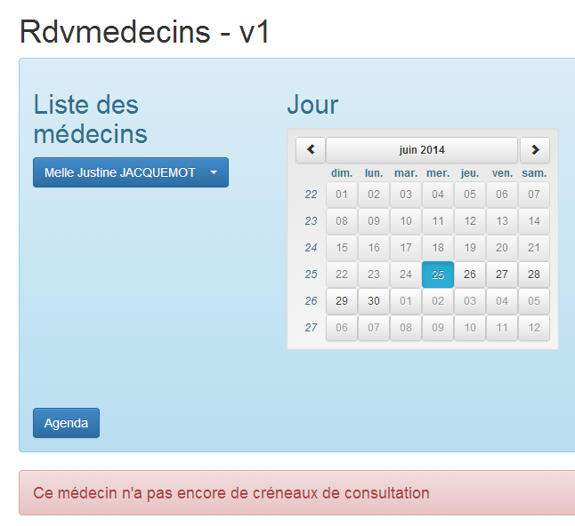
يختلف التوجيه [ng-if] عن التوجيهات [ng-show, ng-hide]. فهذه الأخيرة تكتفي بإخفاء منطقة موجودة في المستند. أما إذا كان التوجيه هو [ng-if='false']، فإن المنطقة تُحذف من المستند. وقد استخدمناها هنا للتوضيح؛
- السطر 9: السمة [id='creneaux'] مهمة. فهي التي تُستخدم في الأمر:
$("#creneaux").footable();
- الأسطر 10-22: تعرض رؤوس الجدول [1]؛
- الأسطر 23-45: تعرض محتوى الجدول [2]؛
 |
- السطر 24: يتم تصفح الجدول [agenda.data.creneauxMedecin]؛
- الأسطر 26-29: يتم كتابة النص [3]. يتم استخدام التوجيه [ng-class] الذي سيقوم بإنشاء السمة [class] للعنصر. هنا، إذا كان لدينا [creneauMedecin.rv==null]، فهذا يعني أن الفترة الزمنية متاحة ونضع خلفية خضراء للنص. وإلا، نضع خلفية حمراء؛
- السطر 32: نكتب اسم العميل الذي تم حجز RV [4] من أجله. إذا كان [rv==null]، فإن هذه المعلومات غير موجودة، لكن Angular يتعامل مع هذه الحالة بشكل صحيح ولا يعلن عن أي خطأ؛
- الأسطر 34-39: تعرض أحد الزرين [Réserver] أو [Supprimer]. ووجود الموعد أو عدم وجوده هو ما يحدد اختيار أحد الزرين؛
3.7.8.5. تعديل خادم الويب
كما في الأمثلة السابقة، يجب تعديل خادم الويب بحيث يرسل URL [/getAgendaMedecinJour] الرؤوس التالية:
في الفئة [RdvMedecinsCorsController]، نضيف طريقة جديدة:
// جدول مواعيد الطبيب
@RequestMapping(value = "/getAgendaMedecinJour/{idMedecin}/{jour}", method = RequestMethod.OPTIONS)
public void getAgendaMedecinJour(HttpServletResponse response) {
sendOptions(response);
}
ستقوم هذه الطريقة بإرسال الرؤوس CORS لطلب HTTP و [OPTIONS]. يجب القيام بنفس الشيء بالنسبة لطلب HTTP و [GET] في الفئة [RdvMedecinsController]:
@RequestMapping(value = "/getAgendaMedecinJour/{idMedecin}/{jour}", method = RequestMethod.GET)
public Reponse getAgendaMedecinJour(@PathVariable("idMedecin") long idMedecin, @PathVariable("jour") String jour, HttpServletResponse response) {
// رؤوس الصفحات CORS
rdvMedecinsCorsController.getAgendaMedecinJour(response);
...
}
3.7.8.6. استخدام التوجيهات
كما تم سابقًا، سنقوم بنقل معالجة DOM إلى توجيهات. لدينا عمليتا معالجة لـ DOM:
- عند العرض الأولي للطريقة:
// تصميم القائمة المنسدلة
$timeout(function () {
$('.selectpicker').selectpicker();
});
- عند عرض التقويم:
// إنشاء حدث لتصميم الجدول بعد عرض العرض
$timeout(function () {
$("#creneaux").footable();
});
بالنسبة للحالة الأولى، سنستخدم التوجيه [selectEnable] الذي تم عرضه سابقًا. أما بالنسبة للحالة الثانية، فسننشئ التوجيه [footable] في الملف JS [footable.js] التالي:
angular.module("rdvmedecins").directive('footable', ['$timeout', 'utils', function ($timeout, utils) {
return {
link: function (scope, element, attrs) {
utils.debug("directive footable");
$timeout(function () {
$("#creneaux").footable();
})
}
}
}]);
وبالتالي، نستخدم نفس التقنية المستخدمة في التوجيه [selectEnable].
يتم تكرار الرمز HTML [app-18.html] في [app-18B.html]. ثم يتم تطويره على النحو التالي:
<select data-style="btn-primary" class="selectpicker" select-enable="">
<option ng-repeat="medecin in medecins.data" value="{{medecin.id}}">
{{medecin.titre}} {{medecin.prenom}} {{medecin.nom}}
</option>
</select>
- السطر 1: يتم تطبيق التوجيه [selectEnable] (عبر السمة [select-enable]) على العلامة <select> الخاصة بالأطباء؛
<div class="row tab-content alert alert-warning" ng-if="agenda.data.creneauxMedecin.length!=0">
<div class="tab-pane active col-md-6">
<table id="creneaux" class="table" footable="">
<thead>
<tr>
- السطر 3: يتم تطبيق التوجيه [footable] (عبر السمة [footable]) على الجدول HTML الخاص بجدول المواعيد؛
<script type="text/javascript" src="rdvmedecins-06B.js"></script>
<!-- التوجيهات -->
<script type="text/javascript" src="selectEnable.js"></script>
<script type="text/javascript" src="footable.js"></script>
- السطران 3-4: يتم الإشارة إلى ملفات JS الخاصة بالتوجيهين؛
- السطر 1: الرمز JS الخاص بـ [app-18B.html] هو الرمز JS الخاص بـ [app-18.html] الذي تم تكراره في الملف [rdvmedecins-06B.js]؛
الملف [rdvmedecins-06B.js] مطابق للملف [rdvmedecins-06.js] باستثناء تفصيلين. تختفي الأسطر التي تتعامل مع DOM:
// تنسيق القائمة المنسدلة
$timeout(function () {
$('.selectpicker').selectpicker();
});
// يتم إنشاء حدث لتصميم الجدول بعد عرض العرض
$timeout(function () {
$("#creneaux").footable();
});
وبذلك، فإن تشغيل التطبيق [app-18B.html] يعطي نفس نتائج تشغيل [app-18.html].
3.7.9. المثال 9: إنشاء الحجوزات وإلغاؤها
نقدم الآن تطبيقًا يتيح إنشاء الحجوزات وإلغاءها.
3.7.9.1. الطريقة V للتطبيق
سنعرض النموذج التالي:
 |
- في [1]، يمكن إجراء الحجز. وسيكون الحجز الذي يتم إجراؤه لعميل عشوائي؛
- في [2]، سيكون بإمكاننا حذف الحجوزات التي قمنا بها؛
نقوم بنسخ الملف [app-18.html] إلى [app-19.html] ثم نعدل الكود على النحو التالي:
<div class="container">
<h1>Rdvmedecins - v1</h1>
<!-- رسالة الانتظار -->
<div class="alert alert-warning" ng-show="waiting.visible">
...
</div>
<!-- قائمة الأخطاء -->
<div class="alert alert-danger" ng-show="errors.show">
...
</div>
<!-- جدول المواعيد -->
<div id="agenda" ng-show="agenda.show">
..
<!-- جدول مواعيد الطبيب -->
<div class="row tab-content alert alert-warning" ng-if="agenda.data.creneauxMedecin.length!=0">
<div class="tab-pane active col-md-6">
<table id="creneaux" class="table" footable="">
...
<tbody>
<tr ng-repeat="creneauMedecin in agenda.data.creneauxMedecin">
...
<td>
<a href="" ng-if="!creneauMedecin.rv" translate="agenda_reserver" class="status-metro status-active" ng-click="reserver(creneauMedecin.creneau.id)">
</a>
<a href="" ng-if="creneauMedecin.rv" translate="agenda_supprimer" class="status-metro status-suspended" ng-click="supprimer(creneauMedecin.rv.id)">
</a>
</td>
</tr>
</tbody>
</table>
</div>
</div>
</div>
</div>
....
<script type="text/javascript" src="rdvmedecins-07.js"></script>
<script type="text/javascript" src="footable.js"></script>
- الأسطر 5-7: رسالة الانتظار هي نفسها الموجودة في الإصدار السابق؛
- الأسطر 10-12: رسالة الأخطاء هي نفسها الموجودة في الإصدار السابق؛
- الأسطر 15-36: التقويم هو نفسه الموجود في الإصدار السابق باستثناء تفصيلين:
- السطر 26: يتم معالجة النقر على الزر [réserver] (السمة ng-click) بواسطة الطريقة [reserver] في النموذج M للطريقة V. يتم تمرير رقم الفترة الزمنية للحجز إليها؛
- السطر 26: يتم التعامل مع النقر على الزر [supprimer] بواسطة الطريقة [reserver] في النموذج M للطريقة V. ويتم تمرير رقم الموعد المراد حذفه إليها؛
- السطر 39: الرمز JS الذي يدير التطبيق موجود في الملف [rdvmedecins-07.js]؛
- السطر 40: الرمز JS الخاص بالتوجيه [footable] المطبق في السطر 20؛
3.7.9.2. وحدة التحكم C
يتم الحصول على الكود JS الخاص بـ [rdvmedecins-07.js] أولاً عن طريق نسخ الملف [rdvmedecins-06.js]. ثم يتم تعديله. لا تزال الكتل الكبيرة المعتادة من الكود موجودة. تتم التعديلات بشكل أساسي في وحدة التحكم:

سنقوم بوصف وحدة التحكم C الخاصة بالعرض V على عدة مراحل.
3.7.9.3. تهيئة وحدة التحكم C
فيما يلي كود تهيئة وحدة التحكم:
angular.module("rdvmedecins")
.controller('rdvMedecinsCtrl', ['$scope', 'utils', 'config', 'dao', '$translate', '$timeout', '$filter', '$locale',
function ($scope, utils, config, dao, $translate, $timeout, $filter, $locale) {
// ------------------- تهيئة النموذج
// القالب
$scope.waiting = {text: config.msgWaiting, visible: false, cancel: cancel, time: 3000};
$scope.server = {url: 'http://localhost:8080'، login: 'admin'، password: 'admin'};
$scope.errors = {show: false, model: {}};
$scope.medecins = {
data: [
{id: 1, version: 1, titre: "Mme", nom: "PELISSIER", prenom: "Marie"},
{id: 2, version: 1, titre: "Mr", nom: "BROMARD", prenom: "Jacques"},
{id: 3, version: 1, titre: "Mr", nom: "JANDOT", prenom: "Philippe"},
{id: 4, version: 1, titre: "Melle", nom: "JACQUEMOT", prenom: "Justine"}
],
title: config.listMedecins
};
var médecin = $scope.medecins.data[0];
var clients = [
{id: 1, version: 1, titre: "Mr", nom: "MARTIN", prenom: "Jules"},
{id: 2, version: 1, titre: "Mme", nom: "GERMAN", prenom: "Christine"},
{id: 3, version: 1, titre: "Mr", nom: "JACQUARD", prenom: "Maurice"},
{id: 4, version: 1, titre: "Melle", nom: "BISTROU", prenom: "Brigitte"}
];
// التنسيق الفرنسي للتاريخ
angular.copy(config.locales['fr'], $locale);
var today = new Date();
var formattedDay = $filter('date')(today, 'yyyy-MM-dd');
var fullDay = $filter('date')(today, 'fullDate');
$scope.agenda = {title: config.agendaTitle, data: undefined, show: false, model: {titre: médecin.titre, prenom: médecin.prenom, nom: médecin.nom, jour: fullDay}};
// ---------------------------------------------------------------- التقويم الأولي
// المهمة غير المتزامنة الشاملة
var task;
// يتم طلب جدول المهام
getAgenda();
// ------------------------------------------------------------------ الحجز
$scope.reserver = function (creneauId) {
....
};
// ------------------------------------------------------------ الحذف RV
$scope.supprimer = function (idRv) {
...
};
// الحصول على جدول المواعيد
function getAgenda() {
...
}
// إلغاء في الانتظار
function cancel() {
...
}
} ]);
- السطر 6: تكوين رسالة الانتظار. بشكل افتراضي، سيتم الانتظار لمدة 3 ثوانٍ قبل إجراء استدعاء HTTP؛
- السطر 7: المعلومات اللازمة للمكالمات HTTP؛
- السطر 8: تكوين رسالة الأخطاء؛
- الأسطر 9-17: أسماء الأطباء الثابتة؛
- السطر 18: طبيب خاص. سيتم إجراء الحجوزات لمواعيده؛
- الأسطر 19-24: العملاء الدائمون؛
- الخط 26: نريد التعامل مع التواريخ الفرنسية؛
- السطر 27: سيتم تحديد المواعيد بتاريخ اليوم؛
- السطر 28: خدمة الحجز عبر الويب تتوقع تواريخ بتنسيق «aaaa-mm-jj»؛
- السطر 29: تاريخ اليوم بالصيغة [jeudi 26 juin 2014]؛
- السطر 30: تهيئة التقويم. السمة [model] تنقل معلمات الرسالة المُعَلَّمة باللغة التي سيتم عرضها:
agenda_title: "Agenda de {{titre}} {{prenom}} {{nom}} le {{jour}}"
- السطر 35: تمثل المتغير العام [task] في لحظة معينة المهمة غير المتزامنة قيد التنفيذ؛
- السطر 37: يتم طلب التقويم الأولي؛
هذا هو كل ما يتم تنفيذه أثناء التحميل الأولي للصفحة. إذا سارت الأمور على ما يرام، تعرض الواجهة جدول أعمال اليوم للسيدة PELISSIER.

3.7.9.4. الحصول على جدول المواعيد
يتم الحصول على جدول المواعيد باستخدام الطريقة التالية: [getAgenda]:
// الحصول على جدول المواعيد
function getAgenda() {
// مسار الخدمة URL
var path = config.urlSvrAgenda + "/" + médecin.id + "/" + formattedDay;
// يُطلب جدول الأعمال
task = dao.getData($scope.server.url, $scope.server.login, $scope.server.password, path);
// رسالة انتظار
$scope.waiting.visible = true;
// تحليل نتيجة استدعاء الخدمة [dao]
task.promise.then(function (result) {
// نهاية الانتظار
$scope.waiting.visible = false;
// خطأ؟
if (result.err == 0) {
// يتم إعداد نموذج الأجندة
$scope.agenda.data = result.data;
$scope.agenda.show = true;
// تنسيق عرض المواعيد
angular.forEach($scope.agenda.data.creneauxMedecin, function (creneauMedecin) {
creneauMedecin.creneau.text = utils.getTextForCreneau(creneauMedecin.creneau);
});
} else {
// حدثت أخطاء أثناء الحصول على التقويم
$scope.errors = {title: config.getAgendaErrors, messages: utils.getErrors(result), show: true};
}
});
}
هذا الرمز هو نفسه الذي تمت دراسته في التطبيق السابق. هناك تغييران:
- لا يوجد انتظار محاكى قبل استدعاء HTTP؛
- السطر 4: يتم استخدام الطبيب الذي تم إنشاؤه عند تهيئة وحدة التحكم بالإضافة إلى اليوم المنسق الذي تم إنشاؤه؛
تم عزل هذا الكود في دالة لأنه يُستخدم أيضًا من قبل الدالتين [reserver] و [supprimer].
3.7.9.5. حجز موعد
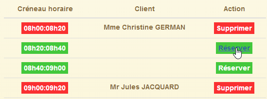 |  |
تجدر الإشارة إلى أن العملاء يتم اختيارهم عشوائياً.
رمز الحجز هو التالي:
$scope.reserver = function (creneauId) {
utils.debug("réservation du créneau", creneauId);
// يتم إنشاء RV مع عميل عشوائي في الفترة الزمنية المحددة بواسطة [id]
var idClient = clients[Math.floor(Math.random() * clients.length)].id;
utils.debug("réservation du créneau pour le client", idClient);
// انتظار مُحاكى
$scope.waiting.visible = true;
var task = utils.waitForSomeTime($scope.waiting.time);
// يتم إضافة الفترة الزمنية
var promise = task.promise.then(function () {
// مسار ملف الخدمة URL
var path = config.urlSvrResaAdd;
// البيانات المراد إرسالها إلى الخدمة
var post = {jour: formattedDay, idCreneau: creneauId, idClient: idClient};
// يتم تشغيل المهمة غير المتزامنة
task = dao.getData($scope.server.url, $scope.server.login, $scope.server.password, path, post);
// إرجاع وعد إتمام المهمة
return task.promise;
});
// تحليل نتيجة المهمة
promise = promise.then(function (result) {
if (result.err != 0) {
// حدثت أخطاء في التحقق من صحة rv
$scope.errors = {title: config.postResaErrors, messages: utils.getErrors(result, $filter), show: true};
} else {
// يتم طلب جدول زمني جديد
getAgenda();
}
});
};
- السطر 1: نذكّر بأن معلمة الدالة [reserver] هي رقم الفترة الزمنية (السمة id)؛
- السطر 4: يتم اختيار عميل عشوائيًا من قائمة العملاء المحددة بشكل ثابت في كود التهيئة. ونحتفظ بمعرّفه [id]؛
- السطران 7-8: فترة انتظار مدتها 3 ثوانٍ؛
- السطران 11-18: لا يتم تنفيذ هذين السطرين إلا بعد انقضاء الثواني الثلاث؛
- السطر 12: معرّف URL لخدمة الحجز [/ajouterRv]. هذا المعرّف URL مميز مقارنةً بتلك التي صادفناها حتى الآن. وهو مُعرَّف على النحو التالي في خدمة الويب:
@RequestMapping(value = "/ajouterRv", method = RequestMethod.POST, consumes = "application/json; charset=UTF-8")
public Reponse ajouterRv(@RequestBody PostAjouterRv post, HttpServletResponse response) {
- (تابع)
- السطر 1: لا تحتوي URL على معلمات ويتم طلبها مع POST؛
- السطر 2: يتم إرسال المعلمات في شكل كائن JSON. وسيتم فك تسلسل هذا الكائن في المعلمة [post] (@RequestBody)؛
لقد رأينا مثالاً على هذا الكائن POST (الفقرة 2.12.2):
 |
- في [0]، يتم استخدام URL الخاص بخدمة الويب؛
- إلى [1]، حيث تُستخدم الطريقة POST؛
- في [2]، النص JSON للمعلومات المرسلة إلى خدمة الويب في شكل {اليوم، idClient، idCreneau}؛
- في [3]، يحدد العميل لخدمة الويب أنه يرسل إليها المعلومات JSON؛
لنعد إلى الكود JS الخاص بالدالة [reserver]:
- السطر 14: يتم إنشاء القيمة المراد إرسالها في شكل كائن JS. وسيقوم Angular بتحويلها إلى تسلسل JSON عند إرسالها؛
- السطر 16: يتم استدعاء الدالة HTTP. القيمة المراد إرسالها هي المعلمة الأخيرة للدالة [dao.getData]. عند وجود هذا المعامل، تقوم الدالة [dao.getData] بإنشاء POST بدلاً من GET (راجع الكود في الفقرة 3.7.6.4)؛
- السطر 18: يتم إرجاع الوعد الخاص بالاستدعاء HTTP؛
- الأسطر 23-29: لا يتم تنفيذها إلا بعد أن يعرض استدعاء HTTP استجابته؛
- السطر 23: المعلمة [result] تكون على شكل [err,data] أو [err,messages] حيث [err] هو رمز خطأ؛
- الأسطر 23-26: في حالة وجود أخطاء، يتم عرض رسالة الخطأ؛
- السطر 28: إذا تمت عملية الحجز بنجاح، يتم إعادة عرض التقويم الجديد؛
3.7.9.6. تعديل الخادم
 |
في الفئة [RdvMedecinsCorsController]، نضيف الطريقة التالية:
// إرسال الخيارات إلى العميل
private void sendOptions(HttpServletResponse response) {
if (application.isCORSneeded()) {
// يتم تعيين الرأس CORS
response.addHeader("Access-Control-Allow-Origin", "*");
// تمت الموافقة على الرأس [authorization]
response.addHeader("Access-Control-Allow-Headers", "authorization");
}
@RequestMapping(value = "/ajouterRv", method = RequestMethod.OPTIONS)
public void ajouterRv(HttpServletResponse response) {
sendOptions(response);
}
يتم الإضافة في الأسطر 10-13. سيتم إرسال رؤوس الأسطر من 2 إلى 8 إلى URL و[/ajouterRv] (السطر 10) وإلى الطريقة HTTP و[OPTIONS] (السطر 10).
هل تم تعديل الفئة [RdvMedecinsController] على النحو التالي:
@RequestMapping(value = "/ajouterRv", method = RequestMethod.POST, consumes = "application/json; charset=UTF-8")
public Reponse ajouterRv(@RequestBody PostAjouterRv post, HttpServletResponse response) {
// رؤوس CORS
rdvMedecinsCorsController.ajouterRv(response);
...
بالنسبة للطريقة [POST] (السطر 1) والطريقتين URL و[/ajouterRv] (السطر 1)، يتم استدعاء الطريقة التي أضفناها للتو في [RdvMedecinsCorsController] (السطر 4)، وبالتالي يتم إرجاع نفس الرؤوس HTTP كما هو الحال بالنسبة للطريقة HTTP و[OPTIONS].
3.7.9.7. Tests
لنقم باختبار أولي حيث نقوم بحجز موعد عشوائي:
 |
وكما هو الحال دائمًا في مثل هذه الحالات، يجب مراجعة سجلات وحدة التحكم:
[dao] getData[/ajouterRv] error réponse : {"data":"","status":0,"config":{"method":"POST","transformRequest":[null],"transformResponse":[null],"timeout":1000,"url":"http://localhost:8080/ajouterRv","data":{"jour":"2014-06-30","idCreneau":1,"idClient":4},"headers":{"Accept":"application/json, text/plain, */*","Authorization":"Basic YWRtaW46YWRtaW4=","Content-Type":"application/json;charset=utf-8"}},"statusText":""}
فشلت الطريقة [dao.getData] مع [status=0]، مما يعني أن Angular هو الذي ألغى الطلب. نجد سبب الخطأ في سجلات التشغيل:
XMLHttpRequest cannot load http://localhost:8080/ajouterRv. حقل رأس الطلب Content-Type غير مسموح به بواسطة Access-Control-Allow-Headers.
إذا نظرنا إلى حركة مرور الشبكة، نجد ما يلي:
 |
- في [1] و [2]: لم يكن هناك سوى طلب واحد هو HTTP، أما الطلب [OPTIONS]؛
- في [3]، يطلب عميل Angular إذنين:
- إذن إرسال الرؤوس HTTP و [accept, authorization, content-type]؛
- إرسال الأمر POST؛
- في [4]: يمنح الخادم الإذن لرأس الرسالة [authorization]. تجدر الإشارة إلى أنه من جانب الخادم، نحن أنفسنا من نرسل هذا الإذن؛
الجديد إذن هو أنه في عملية POST، يطلب عميل Angular المزيد من الأذونات من الخادم. لذا يجب تعديل الخادم ليمنحها له:
|
في الفئة [RdvMedecinsCorsController]، نقوم بتعديل الأسلوب الخاص الذي يُنشئ رؤوس HTTP المرسلة للأوامر OPTIONS، GET و POST:
// إرسال الخيارات إلى العميل
private void sendOptions(HttpServletResponse response) {
if (application.isCORSneeded()) {
// تعيين رأس CORS
response.addHeader("Access-Control-Allow-Origin", "*");
// السماح ببعض الرؤوس
response.addHeader("Access-Control-Allow-Headers", "accept, authorization, content-type");
// يتم السماح بـ POST
response.addHeader("Access-Control-Allow-Methods", "POST");
}
}
- السطر 7: تمت إضافة تفويض لرؤوس HTTP و [accept, content-type]؛
- السطر 9: تمت إضافة إذن لطريقة POST؛
نُعيد إجراء الاختبار بعد إعادة تشغيل الخادم:
 |
هذه المرة، نجحنا في الحجز.
3.7.9.8. حذف موعد
 |  |
رمز الوظيفة [supprimer] هو كما يلي:
$scope.supprimer = function (idRv) {
utils.debug("suppression rv n°", idRv);
// انتظار محاكى
$scope.waiting.visible = true;
task = utils.waitForSomeTime($scope.waiting.time);
// يتم إضافة الفترة الزمنية
var promise = task.promise.then(function () {
// مسار خدمة URL
var path = config.urlSvrResaRemove;
// البيانات المراد إرسالها إلى الخدمة
var post = {idRv: idRv};
// يتم تشغيل المهمة غير المتزامنة
task = dao.getData($scope.server.url, $scope.server.login, $scope.server.password, path, post);
// إرجاع وعد إتمام المهمة
return task.promise;
});
// تحليل نتيجة المهمة
promise = promise.then(function (result) {
if (result.err != 0) {
// حدثت أخطاء أثناء حذف rv
$scope.errors = {title: config.postRemoveErrors, messages: utils.getErrors(result, $filter), show: true};
// يتم تحديث UI
$scope.waiting.visible = false;
} else {
// يتم طلب الأجندة الجديدة
getAgenda();
}
});
};
- السطر 1: يجب أن نتذكر أن معلمة الدالة هي رقم الموعد المراد حذفه. لدينا هنا رمز مشابه جدًا لرمز الحجز. سنكتفي بتوضيح الاختلافات فقط؛
- السطر 9: رمز الخدمة URL هو هنا [/supprimerRV]، وهنا أيضًا يتم الوصول إليها عبر رمز POST:
@RequestMapping(value = "/supprimerRv", method = RequestMethod.POST, consumes = "application/json; charset=UTF-8")
public Reponse supprimerRv(@RequestBody PostSupprimerRv post, HttpServletResponse response) {
يتم إرسال المعلمة هنا أيضًا في شكل JSON. في الفقرة 2.12.17، أوضحنا طبيعة رمز POST الذي تم إنشاؤه يدويًّا:
 |
- في [1]، URL الخاص بخدمة الويب؛
- إلى [2]، حيث تُستخدم الطريقة POST؛
- في [3]، النص JSON للمعلومات المرسلة إلى خدمة الويب في شكل {idRv}؛
- في [4]، يحدد العميل لخدمة الويب أنه يرسل إليها المعلومات JSON؛
لنعد إلى الرمز JS الخاص بالدالة [supprimer]:
- السطر 11: يتم إنشاء الكائن المرسَل. وسيقوم Angular بتحويله تلقائيًا إلى JSON؛
أما باقي الكود فهو مشابه لكود الحجز.
3.7.9.9. تعديل الخادم
على جانب الخادم، نقوم بإجراء التعديلات التالية:
|
في الفئة [RdvMedecinsCorsController]، نضيف الطريقة التالية:
// إرسال الخيارات إلى العميل
private void sendOptions(HttpServletResponse response) {
if (application.isCORSneeded()) {
// يتم إصلاح الرأس CORS
response.addHeader("Access-Control-Allow-Origin", "*");
// يتم السماح ببعض الرؤوس
response.addHeader("Access-Control-Allow-Headers", "accept, authorization, content-type");
// يتم السماح بـ POST
response.addHeader("Access-Control-Allow-Methods", "POST");
}
}
...
@RequestMapping(value = "/supprimerRv", method = RequestMethod.OPTIONS)
public void supprimerRv(HttpServletResponse response) {
sendOptions(response);
}
يتم الإضافة في الأسطر 13-16. سيتم إرسال رؤوس الأسطر من 2 إلى 10 إلى URL و[/supprimerRv] (السطر 13) وإلى الطريقة HTTP و[OPTIONS] (السطر 13).
أما الفئة [RdvMedecinsController]، فقد تم تعديلها على النحو التالي:
@RequestMapping(value = "/supprimerRv", method = RequestMethod.POST, consumes = "application/json; charset=UTF-8")
public Reponse supprimerRv(@RequestBody PostSupprimerRv post, HttpServletResponse response) {
// رؤوس CORS
rdvMedecinsCorsController.supprimerRv(response);
...
بالنسبة للطريقة [POST] (السطر 1) والطريقتين URL و[/supprimerRv] (السطر 1)، يتم استدعاء الطريقة التي أضفناها للتو في [RdvMedecinsCorsController] (السطر 4)، وبالتالي يتم إرجاع نفس الرؤوس HTTP كما هو الحال بالنسبة للطريقتين HTTP و [OPTIONS].
3.7.10. المثال 10: إنشاء الحجوزات وإلغاؤها - 2
نقدم الآن نفس التطبيق الذي سبق ذكره، ولكن بدلاً من إجراء الحجز لعميل عشوائي، سيتم اختيار العميل من قائمة منسدلة.
3.7.10.1. الطريقة V للتطبيق
سنعرض النموذج التالي:
 |
سيتم اختيار العملاء في [1].
يشبه الكود كود التطبيق السابق، لذا سنعرض فقط الاختلافات الرئيسية.
نقوم بنسخ الملف [app-19.html] إلى [app-20.html] ثم ننشئ كود القائمة المنسدلة للعملاء [1]:
<!-- قائمة العملاء -->
<div class="alert alert-info">
<h3>{{agenda.title|translate:agenda.model}}</h3>
<div class="row" ng-show="clients.show">
<div class="col-md-3">
<h2 translate="{{clients.title}}"></h2>
<select data-style="btn-primary" class="selectpicker" select-enable="" ng-if="clients.data">
<option ng-repeat="client in clients.data" value="{{client.id}}">
{{client.titre}} {{client.prenom}} {{client.nom}}
</option>
</select>
</div>
</div>
</div>
- الأسطر 8-12: سيتم تنفيذ القائمة المنسدلة باستخدام المكون [bootstrap-select]؛
- السطر 1: يتم تطبيق التوجيه [selectEnable] عبر السمة [select-enable]؛
- السطر 1: لا يتم إنشاء العلامة <select> إلا في حالة وجود [clients.data] (# null، undefined). هذه النقطة مهمة وقد تم شرحها في الفقرة 3.7.7.8؛
بالإضافة إلى ذلك، نقوم باستيراد ملفات جديدة JS:
<script type="text/javascript" src="rdvmedecins-08.js"></script>
<!-- التوجيهات -->
<script type="text/javascript" src="selectEnable.js"></script>
<script type="text/javascript" src="footable.js"></script>
- السطر 1: يتم الحصول على الملف [rdvmedecins-08.js] عن طريق نسخ الملف [rdvmedecins-0.js]؛
- السطران 3-4: يتم استيراد الملفات الخاصة بالتوجيهين؛
3.7.10.2. وحدة التحكم C
يتطور كود وحدة التحكم C على النحو التالي:
// وحدة التحكم
angular.module("rdvmedecins")
.controller('rdvMedecinsCtrl', ['$scope', 'utils', 'config', 'dao', '$translate', '$timeout', '$filter', '$locale',
function ($scope, utils, config, dao, $translate, $timeout, $filter, $locale) {
// ------------------- تهيئة النموذج
...
// العملاء
$scope.clients = {title: config.listClients, show: false, model: {}};
//------------------------------------------- تهيئة العرض
// المهمة غير المتزامنة الشاملة
var task;
// يتم طلب العملاء ثم التقويم
getClients().then(function () {
getAgenda();
});
...
// تنفيذ الإجراء
function getClients() {
....
};
} ]);
- السطر 8: يقوم الكائن [$scope.clients] بتكوين القائمة المنسدلة للعملاء في العرض V؛
- الأسطر 14-16: بشكل غير متزامن، يتم أولاً طلب قائمة العملاء، ثم بمجرد الحصول عليها، يتم طلب جدول مواعيد السيدة PELISSIER لليوم الحالي. لا تعمل الصيغة المستخدمة هنا إلا لأن الدالة [getClients] تُرجع وعدًا (promise)؛
تطلب الطريقة [getClients] قائمة العملاء:
function getClients() {
// تحديث UI
$scope.waiting.visible = true;
$scope.clients.show = false;
$scope.errors.show = false;
// يتم طلب قائمة العملاء؛
task = dao.getData($scope.server.url, $scope.server.login, $scope.server.password, config.urlSvrClients);
var promise = task.promise;
// تحليل نتيجة الاستدعاء السابق
promise = promise.then(function (result) {
// result={err: 0, data: [client1, client2, ...]}
// result={err: n, messages: [msg1, msg2, ...]}
if (result.err == 0) {
// يتم إدخال البيانات المجمعة في النموذج
$scope.clients.data = result.data;
// يتم تحديث UI
$scope.clients.show = true;
$scope.waiting.visible = false;
} else {
// حدثت أخطاء أثناء الحصول على قائمة العملاء
$scope.errors = { title: config.getClientsErrors, messages: utils.getErrors(result), show: true, model: {}};
// يتم تحديث ملف UI
$scope.waiting.visible = false;
}
});
// يتم الوفاء بالوعد
return promise;
};
هذا كود سبق أن تناولناه وعلقنا عليه. العنصر المهم الذي يجب ملاحظته هو السطر 31:
- السطر 27: يتم إرجاع الوعد الموجود في السطر 10، أي آخر وعد تم الحصول عليه في الكود. ولن يتم الحصول على هذا الوعد إلا عندما تقوم الدالة HTTP بإرجاع استجابتها؛
تتطور الطريقة [reserver] بشكل طفيف:
$scope.reserver = function (creneauId) {
utils.debug("réservation du créneau", creneauId);
// يتم إنشاء RV للعميل المحدد
var idClient = $(".selectpicker").selectpicker('val');
...
});
- السطر 4: لم يعد الحجز يتم لعميل عشوائي، بل للعميل المحدد في قائمة العملاء.
3.7.11. المثال 11: توجيه [selectEnable2]
يعود هذا المثال إلى التوجيهات.
3.7.11.1. الطريقة V
يعرض التطبيق العرض التالي:
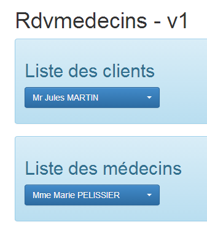 |
3.7.11.2. رمز HTML الخاص بالعرض
الرمز HTML الخاص بالعرض [app-21.html] هو كما يلي:
<div class="container">
<h1>Rdvmedecins - v1</h1>
<!-- رسالة الانتظار -->
<div class="alert alert-warning" ng-show="waiting.visible">
...
</div>
<!-- قائمة الأخطاء -->
<div class="alert alert-danger" ng-show="errors.show">
...
</div>
<!-- قائمة العملاء -->
<div class="alert alert-info">
<div class="row" ng-show="clients.show">
<div class="col-md-4">
<h2 translate="{{clients.title}}"></h2>
<select data-style="btn-primary" id="selectpickerClients" select-enable2="" ng-if="clients.data">
<option ng-repeat="client in clients.data" value="{{client.id}}">
{{client.titre}} {{client.prenom}} {{client.nom}}
</option>
</select>
</div>
</div>
</div>
<!-- قائمة الأطباء -->
<div class="alert alert-info">
<div class="row" ng-show="medecins.show">
<div class="col-md-4">
<h2 translate="{{medecins.title}}"></h2>
<select data-style="btn-primary" id="selectpickerMedecins" select-enable2="" ng-if="medecins.data">
<option ng-repeat="medecin in medecins.data" value="{{medecin.id}}">
{{medecin.titre}} {{medecin.prenom}} {{medecin.nom}}
</option>
</select>
</div>
</div>
</div>
</div>
...
<script type="text/javascript" src="rdvmedecins-09.js"></script>
<!-- التوجيهات -->
<script type="text/javascript" src="selectEnable2.js"></script>
- الأسطر 19-23: القائمة المنسدلة للعملاء؛
- السطر 19: يتم تطبيق التوجيه [selectEnable2] (السمة [select-enable2])؛
- السطر 19: فقط إذا كانت [clients.data] غير فارغة؛
- السطر 19: يتم تحديد القائمة المنسدلة بواسطة السمة [id="selectpickerClients"]؛
- الأسطر 33-37: القائمة المنسدلة للأطباء؛
- السطر 33: يتم تطبيق التوجيه [selectEnable2] (السمة [select-enable2])؛
- السطر 33: فقط إذا كانت [medecins.data] غير فارغة؛
- السطر 33: يتم تحديد القائمة المنسدلة بواسطة السمة [id="selectpickerMedecins"]؛
- السطر 43: يتم استيراد ملف جديد JS [rdvmedecins-09.js]؛
- السطر 45: يتم استيراد الملف JS من التوجيه الجديد؛
3.7.11.3. التوجيه [selectEnable2]
رمز التوجيه [selectEnable2] هو كما يلي:
angular.module("rdvmedecins").directive('selectEnable2', ['$timeout', 'utils', function ($timeout, utils) {
return {
link: function (scope, element, attrs) {
utils.debug("directive selectEnable2 attrs", attrs);
$timeout(function () {
$('#' + attrs['id']).selectpicker();
})
}
}
}]);
- السطر 4: يتم عرض قيمة المعلمة [attrs] لتوضيح كيفية عمل الكود. وسنكتشف أن attrs['id']='selectpickerClients' بالنسبة لقائمة العملاء؛
- السطر 6: لتحديد موقع عنصر من [id='x'] داخل DOM، نكتب [$('#x')]. لذلك يجب كتابة [$('#selectpickerClients')] لتحديد موقع قائمة العملاء. ويتم الحصول على ذلك باستخدام الصيغة [$('#' + attrs['id'])]؛
وبالتالي، تستخدم التوجيهية [selectEnable2] المعلومات التي تحملها إحدى سمات العنصر HTML الذي تُطبق عليه.
3.7.11.4. وحدة التحكم C
يوجد وحدة التحكم C في الملف JS [rdvmedecins-09.js] وله البنية التالية:
// وحدة التحكم
angular.module("rdvmedecins")
.controller('rdvMedecinsCtrl', ['$scope', 'utils', 'config', 'dao',
function ($scope, utils, config, dao) {
// ------------------- تهيئة النموذج
// رسالة الانتظار
$scope.waiting = {text: config.msgWaiting, visible: false, cancel: cancel, time: 3000};
// معلومات تسجيل الدخول
$scope.server = {url: 'http://localhost:8080', login: 'admin', password: 'admin'};
// الأخطاء
$scope.errors = {show: false, model: {}};
// الأطباء
$scope.medecins = {title: config.listMedecins, show: false, model: {}};
// العملاء
$scope.clients = {title: config.listClients, show: false, model: {}};
// المهمة غير المتزامنة الشاملة
var task;
// ---------------------------------------------------- تهيئة العرض
// يتم تحديث UI
$scope.waiting.visible = true;
$scope.clients.show = false;
$scope.medecins.show = false;
$scope.errors.show = false;
// يتم طلب العملاء ثم الأطباء
getClients().then(function () {
getMedecins();
});
// قائمة العملاء
function getClients() {
...
}
// قائمة الأطباء
function getMedecins() {
...
}
// إلغاء الانتظار
function cancel() {
...
}
} ]);
- الأسطر 26-28: يتم طلب العملاء أولاً ثم الأطباء؛
3.7.11.5. الاختبارات
اختبر هذه النسخة الجديدة.
3.7.12. المثال 12: توجيه [list]
نستأنف نفس المثال السابق، لكننا نرغب في تبسيط الكود HTML باستخدام توجيه. في الواقع، لدينا حاليًا الكود HTML التالي:
<!-- قائمة العملاء -->
<div class="alert alert-info">
<div class="row" ng-show="clients.show">
<div class="col-md-4">
<h2 translate="{{clients.title}}"></h2>
<select data-style="btn-primary" id="selectpickerClients" select-enable2="" ng-if="clients.data">
<option ng-repeat="client in clients.data" value="{{client.id}}">
{{client.titre}} {{client.prenom}} {{client.nom}}
</option>
</select>
</div>
</div>
</div>
<!-- قائمة الأطباء -->
<div class="alert alert-info">
<div class="row" ng-show="medecins.show">
<div class="col-md-4">
<h2 translate="{{medecins.title}}"></h2>
<select data-style="btn-primary" id="selectpickerMedecins" select-enable2="" ng-if="medecins.data">
<option ng-repeat="medecin in medecins.data" value="{{medecin.id}}">
{{medecin.titre}} {{medecin.prenom}} {{medecin.nom}}
</option>
</select>
</div>
</div>
</div>
الأسطر من 14 إلى 26 مطابقة للأسطر من 1 إلى 13. وهي تنطبق على الأطباء بدلاً من العملاء. نود أن نتمكن من كتابة ما يلي:
<!-- قائمة العملاء -->
<list model="clients" ng-if="clients.show"></list>
<!-- قائمة الأطباء -->
<list model="medecins" ng-if="medecins.show"></list>
يتطلب هذا الرمز توجيهًا جديدًا هو [list]، وسنقوم بإنشائه الآن.
3.7.12.1. التوجيه [list]
يتم وضع التوجيه [list] في الملف JS [list.js]. ورمزه هو كما يلي:
angular.module("rdvmedecins")
.directive("list", ['utils', '$timeout', function (utils, $timeout) {
// مثيل التوجيه المُرجع
return {
// العنصر HTML
restrict: "E",
// عنوان URL للجزء
templateUrl: "list.html",
// نطاق فريد لكل مثيل من مثيلات التوجيه
scope: true,
// وظيفة الارتباط بالوثيقة
link: function (scope, element, attrs) {
utils.debug("directive list attrs", attrs);
scope.model = scope[attrs['model']];
utils.debug("directive list model", scope.model);
$timeout(function () {
$('#' + scope.model.id).selectpicker();
})
}
}
}]);
- السطر 2: يحدد توجيهًا باسم «list»؛
- السطر 6: تحدد السمة [restrict] طرق استخدام التوجيه. [restrict: "E"] تعني أن التوجيه [list] يمكن استخدامه كعنصر HTML <list ...>...</list>. [restrict: "A"] تعني أن التوجيه [list] يمكن استخدامه كسمة، على سبيل المثال <div ... list='...'>. [restrict: "AE"] تعني أن التوجيه [list] يمكن استخدامه كسمة وكعنصر؛
- السطر 8: تشير السمة [templateUrl] إلى اسم الجزء HTML الذي يجب استخدامه عند ظهور العلامة. وسيكون هذا الجزء هو نص العلامة؛
- السطر 10: تحدد السمة [scope] نطاق نموذج التوجيه. [scope: true] تعني أن عنصرين من نوع <list> سيكون لكل منهما نموذجه الخاص. بشكل افتراضي (نطاق غير مُهيأ)، يتشاركان نماذجهما؛
- السطر 12: الدالة [link] التي استخدمناها عدة مرات من قبل؛
لفهم الكود أعلاه، يجب تذكر الغرض من استخدام التوجيه:
<!-- قائمة العملاء -->
<list model="clients" ng-if="clients.show"></list>
<!-- قائمة الأطباء -->
<list model="medecins" ng-if="medecins.show"></list>
يُستخدم التوجيه [list] كعنصر <list> من النوع HTML. يحتوي هذا العنصر على سمتين:
- [model]: التي ستكون قيمتها هي عنصر النموذج M للطريقة العرض V التي توجد فيها التوجيهية [list]. وسيقوم هذا العنصر بتغذية نموذج التوجيهية؛
- [ng-if]: ستعمل على عدم إنشاء كود HTML الخاص بالتوجيه في حالة عدم وجود أي شيء لعرضه؛
لنعد إلى كود الدالة [link] الخاصة بالتوجيه:
link: function (scope, element, attrs) {
utils.debug("directive list attrs", attrs);
scope.model = scope[attrs['model']];
utils.debug("directive list model", scope.model);
$timeout(function () {
$('#' + scope.model.id).selectpicker();
})
}
لنربط هذا الرمز JS بالرمز HTML الذي يستخدم التوجيه:
<list model="clients" ng-if="clients.show"></list>
- السطر 3: قيمة attrs['model'] هنا هي 'clients'؛
- السطر 3: قيمة scope[attrs['model']] هي scope['clients']، وبالتالي تمثل [$scope.clients]، أي الحقل [clients] في نموذج العرض. وستكون قيمة هذا الحقل {id:'...', data:[client1, client2, ...], show:..., title:'...'}؛
- السطر 3: نضيف حقل [model] إلى نموذج التوجيه. وقد ورث هذا التوجيه نموذج العرض الذي يوجد فيه. لذا يجب تجنب التضارب مع أي حقل [model] قد يحتوي عليه العرض أيضًا. هنا، لن يكون هناك تضارب؛
- السطر 4: يتم عرض [scope.model] لفهم الكود بشكل أفضل؛
- الأسطر 5-7: نجد كودًا سبق أن صادفناه. الفرق هو أن id الخاص بالمكون كان يُؤخذ سابقًا في السمة attrs['id']. أما هنا فسيُؤخذ في [scope.model.id]؛
الآن، لنلقِ نظرة على الكود HTML الذي تم إنشاؤه بواسطة التوجيه. وبسبب السمة [templateUrl: "list.html"] الخاصة بالتوجيه، يجب البحث عنه في الملف [list.html]:
<!-- قائمة بالعملاء أو الأطباء -->
<div class="alert alert-info" ng-show="model.show">
<div class="row">
<div class="col-md-4">
<h2 translate="{{model.title}}"></h2>
<select data-style="btn-primary" id="{{model.id}}" ng-if="model.data">
<option ng-repeat="element in model.data" value="{{element.id}}">
{{element.titre}} {{element.prenom}} {{element.nom}}
</option>
</select>
</div>
</div>
</div>
- أول ما يجب تذكره لقراءة هذا الرمز هو أن التوجيه أنشأ كائنًا [scope.model] بالصيغة [{id :'...', data:[client1, client2, ...], show : ..., title :'...'}]. يُستخدم هذا الكائن [model] (scope مضمن ضمن الكود HTML) بواسطة الكود HTML الخاص بالتوجيه؛
- السطر 2: استخدام [model.show] لإظهار/إخفاء العرض الذي تم إنشاؤه بواسطة التوجيه؛
- السطر 5: استخدام [model.title] لإضافة عنوان؛
- السطر 6: استخدام [model.id] لتعيين معرّف لعلامة <select>. ويُستخدم هذا الرمز id بواسطة الرمز JS الخاص بالتوجيه؛
- السطر 6: استخدام [model.data] لتوليد العنصر <select> فقط في حالة وجود بيانات لعرضها؛
- الأسطر 7-9: استخدام [model.data] لتوليد عناصر القائمة المنسدلة؛
3.7.12.2. الرمز HTML
الرمز HTML الخاص بالتطبيق [app-22.html] هو كما يلي:
<div class="container">
<h1>Rdvmedecins - v1</h1>
<!-- رسالة الانتظار -->
<div class="alert alert-warning" ng-show="waiting.visible">
...
</div>
<!-- قائمة الأخطاء -->
<div class="alert alert-danger" ng-show="errors.show">
...
</div>
<!-- قائمة العملاء -->
<list model="clients" ng-if="clients.show"></list>
<!-- قائمة الأطباء -->
<list model="medecins" ng-if="medecins.show"></list>
</div>
...
<script type="text/javascript" src="rdvmedecins-10.js"></script>
<!-- التوجيهات -->
<script type="text/javascript" src="list.js"></script>
- السطر 22: لا تنسَ تضمين الرمز JS في التوجيه؛
3.7.12.3. وحدة التحكم C
لم يتغير برنامج التحكم C إلا قليلاً:
angular.module("rdvmedecins")
.controller('rdvMedecinsCtrl', ['$scope', 'utils', 'config', 'dao',
function ($scope, utils, config, dao) {
// ------------------- تهيئة النموذج
...
// الأطباء
$scope.medecins = {title: config.listMedecins, show: false, id: 'medecins'};
// العملاء
$scope.clients = {title: config.listClients, show: false, id: 'clients'};
...
- في السطرين 7 و9، نضيف السمة [id] إلى نماذج الأطباء والعملاء؛
3.7.12.4. الاختبارات
تُعطي الاختبارات نفس النتائج كما في المثال السابق.
3.7.13. المثال 13: تحديث نموذج توجيه
نواصل دراسة التوجيهات ونحتفظ بمثال القائمة المنسدلة. نريد هنا دراسة سلوك التوجيه [list] عندما يتغير محتوى القائمة المنسدلة.
3.7.13.1. طرق العرض V
الطرق المختلفة هي كما يلي:
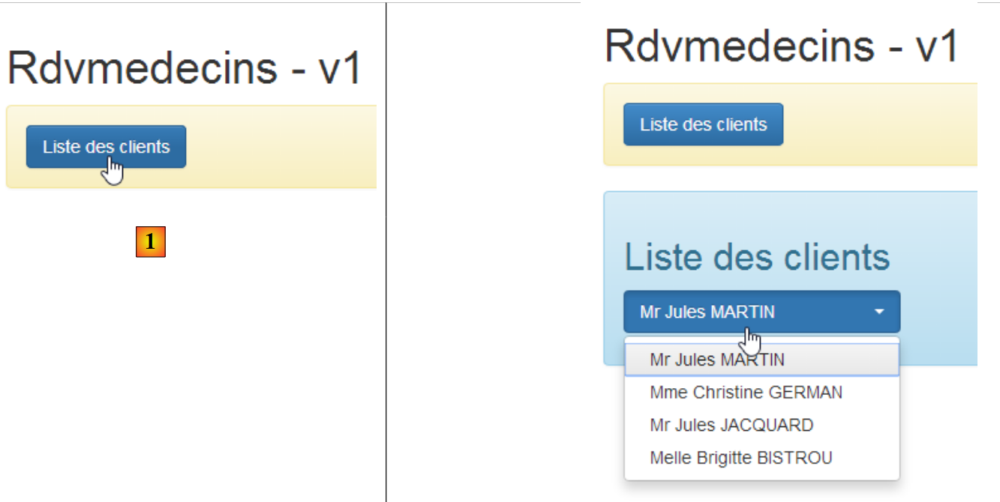 |
- في [1]، نطلب قائمة العملاء للمرة الأولى؛
 |
- في [2]، يتم طلب قائمة العملاء للمرة الثانية. ثم يتم دمج هذه القائمة الثانية مع القائمة الأولى [3]. ما نريد دراسته في هذا المثال هو تحديث المكون [Bootstrap select].
3.7.13.2. الصفحة HTML
يتم الحصول على الصفحة HTML [app-23.html] عن طريق نسخ الصفحة [app-22.html] ثم تعديلها على النحو التالي:
<div class="container">
<h1>Rdvmedecins - v1</h1>
<!-- رسالة الانتظار -->
<div class="alert alert-warning" ng-show="waiting.visible">
...
</div>
<!-- قائمة الأخطاء -->
<div class="alert alert-danger" ng-show="errors.show">
...
</div>
<!-- الزر -->
<div class="alert alert-warning">
<button class="btn btn-primary" ng-click="getClients()">{{clients.title|translate}}</button>
</div>
<!-- قائمة العملاء -->
<list2 model="clients" ng-if="clients.show"></list2>
</div>
...
<script type="text/javascript" src="rdvmedecins-11.js"></script>
<!-- التوجيهات -->
<script type="text/javascript" src="list2.js"></script>
التعديلات مقارنة بالتطبيق السابق هي كما يلي:
- الأسطر 15-17: إضافة زر؛
- السطر 20: استخدام توجيه جديد [list2]؛
- السطر 23: استخدام ملف جديد JS؛
- السطر 25: استيراد الملف JS من التوجيه [list2]؛
3.7.13.3. التوجيه [list2]
التوجيه [list2] في [list2.js] هو كما يلي:
angular.module("rdvmedecins")
.directive("list2", ['utils', '$timeout', function (utils, $timeout) {
// مثيل التوجيه الذي تم إرجاعه
return {
// عنصر HTML
restrict: "E",
// عنوان URL للجزء
templateUrl: "list.html",
// نطاق فريد لكل مثيل من التوجيه
scope: true,
// وظيفة الارتباط بالوثيقة
link: function (scope, element, attrs) {
utils.debug('directive list2');
scope.model = scope[attrs['model']];
$timeout(function () {
$('#' + scope.model.id).selectpicker('refresh');
})
}
}
}]);
الفرق الوحيد مع التوجيه [list] هو السطر 16: باستخدام الطريقة [selectpicker('refresh')]، يُطلب من المكون [Bootstrap-select] أن يقوم بالتحديث. الفكرة من وراء ذلك هي أنه في كل مرة يطلب فيها المستخدم قائمة جديدة بالعملاء، سيتم تحديث القائمة المنسدلة. لن ينجح ذلك، لكن هذه هي الفكرة الأساسية.
3.7.13.4. وحدة التحكم C
يوجد وحدة التحكم في الملف [rdvmedecins-11.js] الذي تم الحصول عليه عن طريق نسخ الملف [rdvmedecins-10.js]:
// العملاء
$scope.clients = {title: config.listClients, show: false, id: 'clients', data: []};
...
// قائمة العملاء
$scope.getClients = function getClients() {
// يتم تحديث UI
$scope.waiting.visible = true;
$scope.errors.show = false;
// يتم طلب قائمة العملاء؛
task = dao.getData($scope.server.url, $scope.server.login, $scope.server.password, config.urlSvrClients);
var promise = task.promise;
// تحليل نتيجة الاستدعاء السابق
promise = promise.then(function (result) {
// result={err: 0, data: [client1, client2, ...]}
// result={err: n, messages: [msg1, msg2, ...]}
if (result.err == 0) {
// يتم وضع البيانات التي تم الحصول عليها في نموذج جديد لإجبار العرض على التحديث
$scope.clients = {title: $scope.clients.title, data: $scope.clients.data.concat(result.data), show: $scope.clients.show, id: $scope.clients.id};
// يتم تحديث UI
$scope.clients.show = true;
$scope.waiting.visible = false;
} else {
// حدثت أخطاء أثناء الحصول على قائمة العملاء
$scope.errors = { title: config.getClientsErrors, messages: utils.getErrors(result), show: true, model: {}};
// يتم تحديث UI
$scope.waiting.visible = false;
}
});
}
- السطر 1: لتمكين ربط المصفوفات في [clients.data]، يتم تهيئة هذا الكائن بمصفوفة فارغة؛
- السطر 18: يتم ربط قائمة العملاء الجديدة بالقوائم الموجودة بالفعل في المصفوفة [clients.data]؛
كنا قد كتبنا سابقًا:
أما الآن فنكتب:
لفهم هذا الرمز، يجب تذكر كيفية استخدام النموذج M في العرض V في حالة التوجيه [list2]:
<!-- قائمة العملاء -->
<list2 model="clients" ng-if="clients.show"></list2>
القالب المستخدم في التوجيه [list2] هو [clients]. ولن يتم إعادة تقييمه في العرض V إلا إذا تغير [clients] في القالب M الخاص بالعرض. الفكرة الأولى التي تخطر على البال لإجراء التعديل هي كتابة:
لمراعاة حقيقة أن قائمة العملاء الجديدة يجب إضافتها إلى القوائم السابقة. وبذلك، يتم تعديل [clients.data] دون تعديل [clients]. لا أعرف خفايا لغة جافا سكريبت، لكن لن يكون من المستغرب أن يكون [clients] مؤشرًا، وكذلك [clients.data]. لا يتغير المؤشر [clients] عند تغيير المؤشر [clients.data]. وبالتالي، لا يتم إعادة تقييم التوجيه [list2]. وهذا ما نلاحظه فعليًّا عند تصحيح أخطاء التطبيق (F12 في متصفح Chrome).
عند كتابة:
$scope.clients = {title: $scope.clients.title, data: $scope.clients.data.concat(result.data), show: $scope.clients.show, id: $scope.clients.id};
نتأكد من أن [$scope.clients] تتلقى قيمة جديدة بالفعل. يشير المؤشر [$scope.clients] إلى كائن جديد. ومن المفترض أن يتم إعادة تقييم التوجيه [list2]. ومع ذلك، لا نحصل على النتيجة المرجوة. دعونا نلقي نظرة على لقطات الشاشة عند طلب قائمة العملاء مرتين:
 |
- في [1]، لا يوجد سوى أربعة عناصر بدلاً من ثمانية؛
- في [2]، توجد هذه العناصر الأربعة في [select] لكن هذا الأخير مخفي (style='display : none');
 |
- في [3]، نجد العملاء الأربعة في بنية أخرى هي HTML، وهذه هي التي يراها المستخدم عند النقر على القائمة المنسدلة؛
وأخيرًا، تشير سجلات وحدة التحكم إلى ما يلي:
- السطر 1: تم إنشاء مثيل للخدمة [dao]؛
- السطر 2: تحصل الخدمة [dao] على قائمة أولية بالعملاء؛
- السطر 3: يتم تنفيذ التوجيه [list2]؛
- السطر 4: تحصل الخدمة [dao] على قائمة ثانية من العملاء؛
يأتي عرض السطر 2 من الكود التالي في التوجيه:
link: function (scope, element, attrs) {
utils.debug('directive list2');
...
}
دعونا ندرس دورة حياة التوجيه [list2]:
- بين السطرين 1 و2، لا تكون التوجيهية نشطة على الرغم من عرض العرض للمرة الأولى. ويرجع ذلك إلى سمة [ng-if="clients.show"] الموجودة في العرض V:
<list2 model="clients" ng-if="clients.show"></list2>
- السطر 3: بعد الحصول على القائمة الأولى للأطباء، يتحول [clients.show] إلى «true» ويتم تنشيط التوجيه؛
- بعد الحصول على القائمة الثانية للعملاء، نلاحظ أن كود التوجيه [list2] لم يتم استدعاؤه. ولهذا السبب، لا تظهر القائمة الثانية؛
لحل هذه المشكلة، نقوم بتعديل التوجيه [list2] على النحو التالي:
angular.module("rdvmedecins")
.directive("list2", ['utils', '$timeout', function (utils, $timeout) {
// مثيل التوجيه الذي تم إرجاعه
return {
// عنصر HTML
restrict: "E",
// عنوان URL للجزء
templateUrl: "list.html",
// نطاق فريد لكل مثيل من التوجيه
scope: true,
// وظيفة الارتباط بالوثيقة
link: function (scope, element, attrs) {
// في كل مرة يتغير فيها attrs["model"]، يجب أن يتغير نموذج التوجيه أيضًا
scope.$watch(attrs["model"], function (newValue) {
utils.debug("directive list2 newValue", newValue);
// يتم تحديث نموذج التوجيه
scope.model = newValue;
$timeout(function () {
$('#' + scope.model.id).selectpicker('refresh');
})
});
}
}
}]);
- السطر 14: تتيح الدالة [scope.$watch] مراقبة إحدى قيم النموذج. وصيغتها هي [scope.$watch('var'), f]، حيث [var] هو معرّف متغير في النموذج، وf هي الدالة التي يجب تنفيذها عندما تتغير قيمة هذا المتغير. هنا، نريد مراقبة المتغير [clients]. لذا يجب أن نكتب [scope.$watch('clients')]. وبما أن attrs['model'] = 'clients'، فإننا نكتب [scope.$watch(attrs["model"], function (newValue)]؛
- السطر 14: المعلمة الثانية للدالة [scope.$watch] هي الدالة التي يجب تنفيذها عندما تتغير قيمة المتغير المراقب. المعلمة [newValue] هي القيمة الجديدة للمتغير، أي بالنسبة لنا القيمة الجديدة للمتغير [clients] في النموذج؛
- السطر 17: تُعيَّن هذه القيمة الجديدة إلى الحقل [model] في نموذج التوجيه؛
وبعد إجراء هذا التعديل، تتغير السجلات:
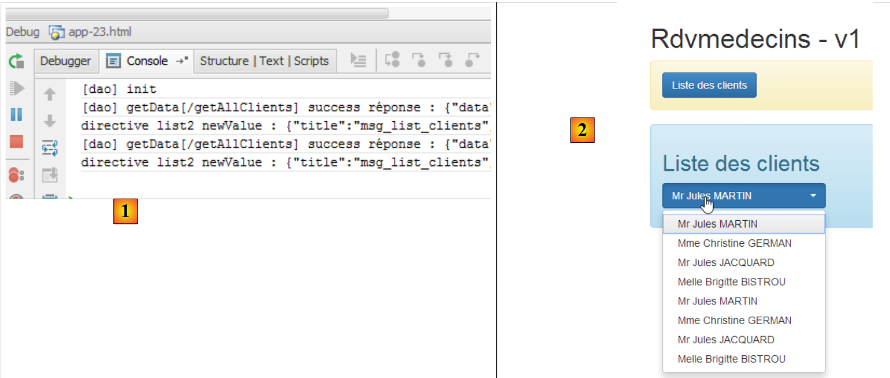 |
فيما سبق، نرى أنه بعد الحصول على القائمة الثانية للعملاء، يتم تنفيذ التوجيه [list2] مرة أخرى، وهو ما تؤكده النتيجة [2].
3.7.14. المثال 14: التوجيهات [waiting] و [errors]
لنعد إلى الكود HTML من التطبيق السابق:
<div class="container">
<h1>Rdvmedecins - v1</h1>
<!-- رسالة الانتظار -->
<div class="alert alert-warning" ng-show="waiting.visible">
...
</div>
<!-- قائمة الأخطاء -->
<div class="alert alert-danger" ng-show="errors.show">
...
</div>
<!-- الزر -->
<div class="alert alert-warning">
<button class="btn btn-primary" ng-click="getClients()">{{clients.title|translate}}</button>
</div>
<!-- قائمة العملاء -->
<list2 model="clients" ng-if="clients.show"></list2>
</div>
- الأسطر 5-7: رسالة الانتظار؛
- الأسطر 10-12: رسالة الأخطاء؛
قررنا وضع الرموز HTML لهاتين الرسالتين في توجيهات.
3.7.14.1. الرمز الجديد HTML
الرمز الجديد HTML [app-24.html] هو كما يلي:
<div class="container">
<h1>Rdvmedecins - v1</h1>
<!-- رسالة الانتظار -->
<waiting model="waiting"></waiting>
<!-- قائمة الأخطاء -->
<errors model="errors"></errors>
<!-- الزر -->
<div class="alert alert-warning">
<button class="btn btn-primary" ng-click="getClients()">{{clients.title|translate}}</button>
</div>
<!-- قائمة العملاء -->
<list2 model="clients" ng-if="clients.show"></list2>
</div>
...
<script type="text/javascript" src="rdvmedecins-12.js"></script>
<!-- التوجيهات -->
<script type="text/javascript" src="list2.js"></script>
<script type="text/javascript" src="errors.js"></script>
<script type="text/javascript" src="waiting.js"></script>
- السطر 5: التوجيه الخاص برسالة الانتظار؛
- السطر 8: التوجيه الخاص برسالة الأخطاء؛
- السطر 19: الملف الجديد JS المرتبط بالتطبيق؛
- الأسطر 21-23: ملفات JS الخاصة بالتوجيهات الثلاثة؛
3.7.14.2. التوجيه [waiting]
يوجد الرمز JS الخاص بالتوجيه [waiting] في الملف [waiting.js] التالي:
angular.module("rdvmedecins")
.directive("waiting", ['utils', function (utils) {
// مثيل التوجيه الذي تم إرجاعه
return {
// عنصر HTML
restrict: "E",
// عنوان URL للجزء
templateUrl: "waiting.html",
// نطاق فريد لكل مثيل من التوجيه
scope: true,
// وظيفة الارتباط بالوثيقة
link: function (scope, element, attrs) {
// في كل مرة يتغير فيها attr["model"]، يجب أن يتغير نموذج الصفحة أيضًا
scope.$watch(attrs["model"], function (newValue) {
utils.debug("[waiting] watch newValue", newValue);
scope.model = newValue;
});
}
}
}]);
يتبع هذا الرمز نفس المنطق الذي يتبعه رمز التوجيه [list2] الذي تمت دراسته سابقًا.
في السطر 8، تتم الإشارة إلى الملف [waiting.html] التالي:
<div class="alert alert-warning" ng-show="model.show">
<h1>{{ model.title.text | translate:model.title.values}}
<button class="btn btn-primary pull-right" ng-click="model.cancel()">{{'cancel'|translate}}</button>
<img src="assets/images/waiting.gif" alt=""/>
</h1>
</div>
في كود JS الخاص بالتطبيق، سيتم تعريف النموذج [$scope.waiting] الخاص بهذا الكود HTML على النحو التالي:
// رسالة الانتظار
$scope.waiting = {title: {text: config.msgWaiting, values: {}}, show: false, cancel: cancel, time: 3000};
3.7.14.3. التوجيه [errors]
يوجد الرمز JS الخاص بالتوجيه [errors] في الملف [errors.js] التالي:
angular.module("rdvmedecins")
.directive("errors", ['utils', function (utils) {
// مثيل التوجيه الذي تم إرجاعه
return {
// العنصر HTML
restrict: "E",
// عنوان URL للجزء
templateUrl: "errors.html",
// نطاق فريد لكل مثيل من التوجيه
scope: true,
// وظيفة الارتباط بالوثيقة
link: function (scope, element, attrs) {
// في كل مرة يتغير فيها attr["model"]، يجب أن يتغير قالب الصفحة أيضًا
scope.$watch(attrs["model"], function (newValue) {
utils.debug("[errors] watch newValue", newValue);
scope.model = newValue;
});
}
}
}]);
يتبع هذا الرمز نفس المنطق الذي يتبعه رمز التوجيه [list2] الذي تمت دراسته سابقًا.
في السطر 8، تتم الإشارة إلى الملف [errors.html] التالي:
<div class="alert alert-danger" ng-show="model.show">
{{model.title.text|translate:model.title.values}}
<ul>
<li ng-repeat="message in model.messages">{{message|translate}}</li>
</ul>
</div>
في كود JS الخاص بالتطبيق، سيتم تعريف النموذج [$scope.errors] الخاص بهذا الكود HTML على النحو التالي:
// حدثت أخطاء أثناء الحصول على قائمة العملاء
$scope.errors = { title: { text: config.getClientsErrors, values: {}}, messages: utils.getErrors(result), show: true, model: {}};
3.7.15. المثال 15: التنقل
حتى الآن، استخدمنا تطبيقات ذات صفحة واحدة. في هذا المثال، سنتناول التطبيقات متعددة الصفحات والتنقل بينها.
3.7.15.1. طرق العرض V للتطبيق
 |
- في [1]، URL للواجهة رقم 1؛
- في [2]، محتواها؛
- في [3]، ننتقل إلى الصفحة 2؛
- في [4]، العرض رقم 2؛
- في [5]، ننتقل إلى الصفحة 3؛
 |
- في [6]، العرض رقم 3؛
- في [7]، ننتقل إلى الصفحة 1؛
- في [8]، نعود إلى العرض رقم 1؛
3.7.15.2. تنظيم الكود
نبدأ بتنظيم جديد للكود:
 |
- سيتم وضع طرق عرض التطبيق في المجلد [views]؛
- سيتم وضع وحدة التطبيق في المجلد [modules]؛
- سيتم وضع وحدات التحكم الخاصة بالتطبيق في المجلد [controllers]؛
وبالمثل، في الإصدار النهائي:
- سيتم وضع الخدمات في المجلد [services]؛
- سيتم وضع التوجيهات في المجلد [directives]؛
3.7.15.3. حاوية العروض
سيتم عرض طرق العرض الموجودة في المجلد [views] في الحاوية التالية [app-25.html]:
<!DOCTYPE html>
<html ng-app="rdvmedecins">
<head>
...
</head>
<body>
<div class="container" ng-controller="mainCtrl">
<!-- شريط التنقل -->
<ng-include src="'views/navbar.html'"></ng-include>
<!-- العرض الحالي -->
<ng-view></ng-view>
</div>
...
<!-- الوحدة -->
<script type="text/javascript" src="modules/rdvmedecins-13.js"></script>
<!-- وحدات التحكم -->
<script type="text/javascript" src="controllers/mainController.js"></script>
<script type="text/javascript" src="controllers/page1Controller.js"></script>
<script type="text/javascript" src="controllers/page2Controller.js"></script>
<script type="text/javascript" src="controllers/page3Controller.js"></script>
</body>
</html>
- السطر 7: يتم التحكم في نص الحاوية بواسطة [mainCtrl]؛
- السطر 9: تسمح التوجيهية [ng-include] بتضمين ملف خارجي HTML، وهو في هذه الحالة شريط التنقل؛
- السطر 12: تُعرض العروض المختلفة التي يعرضها الحاوية داخل التوجيه [ng-view]. وفي النهاية، نحصل على حاوية تعرض:
- دائمًا شريط التنقل نفسه (السطر 9)؛
- طرق عرض مختلفة في السطر 12؛
- الأسطر 16-22: يتم استيراد الملفات JS من وحدة التطبيق [rdvmedecins-13.js] ووحدات التحكم الخاصة بها؛
3.7.15.4. وحدة التطبيق
يحدد الملف [rdvmedecins-13.js] وحدة التطبيق والتوجيه بين طرق العرض:
// --------------------- وحدة Angular
angular.module("rdvmedecins", [ 'ngRoute' ]);
angular.module("rdvmedecins").config(["$routeProvider", function ($routeProvider) {
// ------------------------ التوجيه
$routeProvider.when("/page1",
{
templateUrl: "views/page1.html",
controller: 'page1Ctrl'
});
$routeProvider.when("/page2",
{
templateUrl: "views/page2.html",
controller: 'page2Ctrl'
});
$routeProvider.when("/page3",
{
templateUrl: "views/page3.html",
controller: 'page3Ctrl'
});
$routeProvider.otherwise(
{
redirectTo: "/page1"
});
}]);
- السطر 1: يتم تعريف الوحدة النمطية [rdvmedecins]. وهي تعتمد على الوحدة النمطية [ngRoute] التي توفرها المكتبة [angular-route.min.js]. وهذه الوحدة النمطية هي التي تتيح التوجيه المحدد في الأسطر 6-24؛
- السطر 4: يُعرّف الدالة [config] التابعة للوحدة النمطية [rdvmedecins]. تجدر الإشارة إلى أن هذه الوظيفة تُنفَّذ قبل أي عملية إنشاء مثيل للخدمة. وهي وظيفة تكوين للوحدة النمطية. وهنا، يتم تكوين توجيهها. ويتم ذلك عن طريق الكائن [$routeProvider] المقدم من الوحدة النمطية [ngRoute]؛
- الأسطر 6-10: تحدد العرض الذي سيظهر عندما يطلب المستخدم URL [/page1]. وهذا توجيه داخلي في التطبيق. URL هو في الواقع [/rdvmedecins-angular-v1/app-21.html#/page1]. ونلاحظ أنه لا يزال يتم استخدام URL من الحاوية [/rdvmedecins-angular-v1/app-21.html]، ولكن مع معلومات إضافية تلي الحرف #. وهذه المعلومات الإضافية هي التي يديرها توجيه Angular؛
- السطر 8: يشير إلى الجزء HTML المراد إدراجه في التوجيه [ng-view] الخاص بالحاوية:
- السطر 9: يشير إلى اسم وحدة التحكم الخاصة بهذا الجزء؛
- الأسطر 11-15: تحدد العرض الذي سيظهر عندما يطلب المستخدم URL [/page2]؛
- الأسطر 16-20: تحدد العرض الذي سيظهر عندما يطلب المستخدم URL [/page3]؛
- الأسطر 21-24: تحدد مسار التوجيه الذي يجب اتباعه عندما لا يكون URL المطلوب أحد الأسطر الثلاثة السابقة (خلاف ذلك، السطر 21)؛
- السطر 21-24: يحددان مسار التوجيه الذي يجب اتباعه عندما لا تكون URL المطلوبة واحدة من الثلاثة السابقة (وإلا، انظر السطر 21)؛
3.7.15.5. وحدة التحكم الخاصة بحاوية العروض
لقد رأينا أن حاوية العروض تعلن عن وحدة تحكم:
<div class="container" ng-controller="mainCtrl">
يتم تعريف وحدة التحكم [mainCtrl] في الملف [mainController.js]:
// وحدة التحكم
angular.module("rdvmedecins")
.controller('mainCtrl', ['$scope', '$location',
function ($scope, $location) {
// قوالب الصفحات
$scope.page1 = {};
$scope.page2 = {};
$scope.page3 = {};
// القالب العام
var main = $scope.main = {};
main.text = "[Modèle global]";
// الأساليب المعروضة في العرض
main.showPage1 = function () {
$location.path("/page1");
};
main.showPage2 = function () {
$location.path("/page2");
};
main.showPage3 = function () {
$location.path("/page3");
}
}]);
- السطر 3: تحتاج وحدة التحكم [mainCtrl] إلى الكائن [$location] الذي توفره وحدة التوجيه [ngRoute]. يتيح هذا الكائن تغيير العرض (الأسطر 16 و19 و22)؛
لنعد إلى كود الحاوية:
<div class="container" ng-controller="mainCtrl">
<!-- شريط التنقل -->
<ng-include src="'views/navbar.html'"></ng-include>
<!-- الطريقة الحالية -->
<ng-view></ng-view>
</div>
- يقوم وحدة التحكم [mainCtrl] بإنشاء نموذج المنطقة 1-7؛
- كما أن العرض المضمن في السطر 6 له وحدة تحكم أيضًا. على سبيل المثال، العرض [page1] له وحدة التحكم [page1Ctrl]. تقوم هذه الوحدة بإنشاء نموذج المنطقة المعروضة في السطر 6. وبذلك يكون لدينا في هذه المنطقة نموذجان:
- النموذج الذي أنشأه وحدة التحكم [mainCtrl]؛
- النموذج الذي أنشأته وحدة التحكم [page1Ctrl]؛
هناك تراث للنماذج. في العرض الموضح في السطر 6، تظهر نماذج وحدات التحكم [mainCtrl] و [pagexCtrl] معًا. إذا كانت هناك متغيرتان في هذين النموذجين تحملان الاسم نفسه، فإن إحداهما ستخفي الأخرى. لتجنب هذا التضارب في الأسماء، نقوم بإنشاء أربعة نماذج بأربعة أسماء:
حاوية | mainCtrl | اليد | 11 |
الصفحة 1 | page1Ctrl | الصفحة 1 | 7 |
الصفحة 2 | page2Ctrl | الصفحة 2 | 8 |
الصفحة 3 | page3Ctrl | الصفحة 3 | 9 |
- السطر 12: يحدد عنصر [text] في النموذج [main]؛
السطور من 7 إلى 11 لها نتيجة خاصة جدًا: فهي تُعرّف [$scope] الخاص بوحدة التحكم [mainCtrl]، وتُنشئ داخله أربعة متغيرات [main, page1, page2, page3]. وستُستخدم هذه المتغيرات الأربعة كنماذج لكل من الحاوية والعروض الثلاثة التي ستحتويها الحاوية بالتتابع.
3.7.15.6. شريط التنقل
يتم تعريف شريط التنقل في الحاوية على النحو التالي:
<div class="container" ng-controller="mainCtrl">
<!-- شريط التنقل -->
<ng-include src="'views/navbar.html'"></ng-include>
<!-- الطريقة الحالية -->
<ng-view></ng-view>
</div>
يتم تعريف شريط التنقل في السطر 3. وهذا يعني أنه لا يعرف سوى النموذج [main]. ورمزه هو كما يلي:
<div class="navbar navbar-inverse navbar-fixed-top" role="navigation">
<div class="container">
<div class="navbar-header">
<button type="button" class="navbar-toggle" data-toggle="collapse" data-target=".navbar-collapse">
<span class="sr-only">Toggle navigation</span>
<span class="icon-bar"></span>
<span class="icon-bar"></span>
<span class="icon-bar"></span>
</button>
<a class="navbar-brand" href="#">RdvMedecins</a>
</div>
<div class="collapse navbar-collapse">
<ul class="nav navbar-nav">
<li class="active">
<a href="">
<span ng-click="main.showPage1()">Page 1</span>
</a>
</li>
<li class="active">
<a href="">
<span ng-click="main.showPage2()">Page 2</span>
</a>
</li>
<li class="active">
<a href="">
<span ng-click="main.showPage3()">Page 3</span>
</a>
</li>
</ul>
</div>
</div>
</div>
- في الأسطر 16 و21 و26، يتم استخدام طرق من النموذج [main]؛
- السطر 16: سيؤدي النقر على الرابط [Page1] إلى تشغيل الأسلوب [$scope.main.showPage1]. وقد تم تعريف هذا الأسلوب في وحدة التحكم [mainCtrl] على النحو التالي:
// القالب العام
var main = $scope.main = {};
main.text = "[Modèle global]";
// الأساليب المعروضة في العرض
main.showPage1 = function () {
$location.path("/page1");
};
- السطر 6: من الكود السابق، نرى أن الطريقة [main.showPage1] هي في الواقع الطريقة [$scope.main.showPage1]. لذا فإن هذه هي الطريقة التي سيتم تنفيذها بالفعل؛
- السطر 7: يتم تغيير URL الخاص بالتطبيق ليصبح [/page1]. لنعد إلى التوجيه الذي تم تعريفه في الوحدة الرئيسية:
$routeProvider.when("/page1",
{
templateUrl: "views/page1.html",
controller: 'page1Ctrl'
});
نلاحظ أن الجزء [views/page1.html] سيتم إدراجه في الحاوية وأن وحدة التحكم الخاصة به هي [page1Ctrl].
3.7.15.7. الطريقة [/page1] ووحدة التحكم الخاصة بها
الجزء [views/page1.html] هو التالي:
<h1>Page 1</h1>
<div class="alert alert-info">
<ul>
<li>Modèle global : {{main.text}}</li>
<li>Modèle local : {{page1.text}}</li>
</ul>
</div>
نتذكر أنه في العرض المُدرج في الحاوية، يظهر النموذج [main]. وهذا ما نريد التحقق منه في السطر 4. من ناحية أخرى، يحدد وحدة التحكم [page1Ctrl] الخاصة بالجزء [views/page1.html] نموذجًا [page1]. وهذا هو النموذج المستخدم في السطر 5.
رمز وحدة التحكم [page1Ctrl] هو كما يلي:
angular.module("rdvmedecins")
.controller('page1Ctrl', ['$scope',
function ($scope) {
// قالب الصفحة 1
var page1=$scope.page1;
page1.text="[Modèle local dans page 1]";
}]);
- السطر 2: إن [$scope] الذي تم إدراجه هنا ليس فارغًا. وبما أن وحدة التحكم [page1Ctrl] تتحكم في منطقة مدرجة في حاوية تتحكم فيها وحدة التحكم [mainCtrl]، فإن [$scope] في السطر 2 يحتوي على عناصر [$scope] المحددة بواسطة وحدة التحكم [mainCtrl]. من المهم فهم ذلك. يحتوي [$scope]، الذي تم تعريفه بواسطة وحدة التحكم [mainCtrl]، على العناصر التالية من [main, page1, page2, page3]. وهذا يعني أن لدينا إمكانية الوصول إلى نماذج جميع العروض. وهذا ليس أمرًا مرغوبًا فيه بالضرورة، ولكنه هو الحال هنا. في الإصدار النهائي لعميل Angular، سنستخدم هذه الميزة لتخزين المعلومات التي يجب مشاركتها بين العروض في النموذج [main]. سيكون لدينا هنا مفهوم مشابه لمفهوم «الجلسة» (session) من جانب الخادم؛
- السطر 6: نسترد في النموذج [$scope] النموذج [page1] الخاص بالصفحة 1، ثم نعمل عليه (السطر 7). ونحصل عندئذٍ على العرض التالي:
 |
تم إنشاء العرضين [/page2] و [/page3] على نفس نموذج العرض [/page1] (انظر لقطات الشاشة في الصفحة 240).
3.7.15.8. التحكم في التنقل
نرغب الآن في التحكم في التنقل بالطريقة التالية: [page1 --> page2 --> page3 --> page1]. وبالتالي، إذا كان المستخدم في الصفحة 1 [/page1] وقام بكتابة URL أو [/page3] في متصفحه، فيجب عدم قبول هذا التنقل ويجب البقاء في الصفحة 1.
للحصول على هذه النتيجة، نقوم بتعديل عناصر التحكم في الصفحات على النحو التالي:
angular.module("rdvmedecins")
.controller('page1Ctrl', ['$scope', '$location',
function ($scope, $location) {
// هل التنقل مسموح به؟
var main = $scope.main;
if (main.lastUrl && main.lastUrl != '/page3') {
// العودة إلى آخر URL
$location.path(main.lastUrl);
return;
}
// يتم حفظ URL للصفحة
main.lastUrl = '/page1';
// قالب الصفحة
var page1 = $scope.page1;
page1.text = "[Modèle local dans page 1]";
}]);
- السطر 12: عند عرض أي صفحة، سنقوم بتخزين URL الخاص بها في النموذج [main.lastUrl]. نستخدم هنا المفهوم الذي تحدثنا عنه سابقًا: استخدام النموذج [main] لتخزين المعلومات المشتركة بين جميع العروض. هنا، هو آخر URL تم الرجوع إليه؛
- يتم تكرار الكود الموجود في الأسطر 4-12 وتكييفه مع العروض الثلاثة. نحن هنا في العرض [/page1]؛
- السطر 5: يتم استرداد النموذج [main]؛
- السطر 6: إذا كان النموذج [main.lastUrl] موجودًا وكان مختلفًا عن [/page3]، فإن التنقل يُمنع (آخر URL تمت زيارته موجود وليس /page3)؛
- السطر 8: نعود إذن إلى آخر صفحة URL تمت زيارتها؛
لنجرب ذلك:
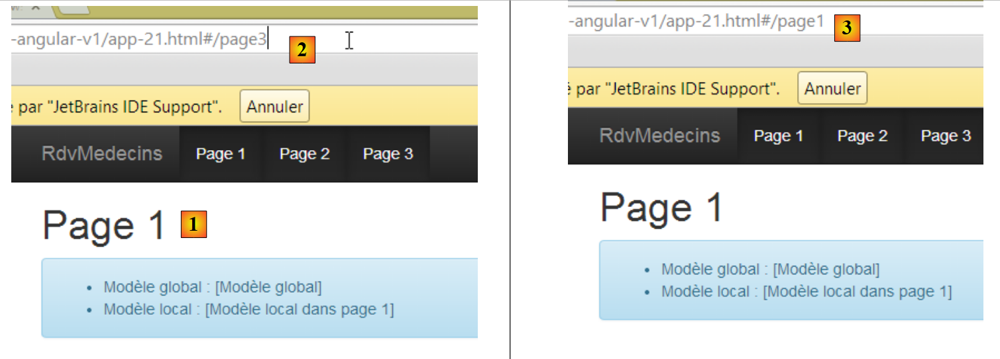 |
- في [1]، نحن في الصفحة 1 ونقوم بإدخال URL من الصفحة 3 في [2]؛
- في [3]، لم تتم عملية التنقل وعُدنا إلى URL في الصفحة 1؛
3.7.16. الخلاصة
لقد استعرضنا جميع حالات الاستخدام التي سنواجهها في الإصدار النهائي لعميل Angular. وعندما نقدم هذا الإصدار، سنركز في تعليقاتنا على ميزات التطبيق أكثر من تفاصيل تنفيذه. أما بالنسبة لهذه التفاصيل، فسنكتفي بالإشارة إلى المثال الذي يوضح حالة الاستخدام التي تمت دراستها آنذاك.
3.8. العميل النهائي لـ Angular
3.8.1. هيكل المشروع
يبدو شكل المشروع النهائي كما يلي:
 |
 |
- في [1]، المشروع بأكمله. [app.html] هي الصفحة الرئيسية للتطبيق؛
- في [2]، توجد وحدات التحكم؛
- في [3]، التوجيهات؛
- في [4]، الخدمات ووحدة Angular [main.js] الخاصة بالتطبيق؛
- في [5]، العروض المختلفة التي يتم إدراجها في الصفحة الرئيسية [app.html]؛
3.8.2. تبعيات المشروع
تتكون تبعيات المشروع مما يلي:
 |
وقد تم شرح دور هذه العناصر المختلفة في الفقرة 3.4، الصفحة 134.
3.8.3. الصفحة الرئيسية [app.html]
الصفحة الرئيسية هي كما يلي:
<!DOCTYPE html>
<html ng-app="rdvmedecins">
<head>
<title>RdvMedecins</title>
<!-- META -->
<meta http-equiv="Content-Type" content="text/html; charset=utf-8">
<meta name="viewport" content="width=device-width, initial-scale=1.0">
<meta name="description" content="Angular client for RdvMedecins">
<meta name="author" content="Serge Tahé">
<!-- الرقم CSS -->
<link rel="stylesheet" href="bower_components/bootstrap/dist/css/bootstrap.min.css"/>
<link href="bower_components/bootstrap/dist/css/bootstrap-theme.min.css" rel="stylesheet"/>
<link href="bower_components/bootstrap-select/bootstrap-select.min.css" rel="stylesheet"/>
<link href="assets/css/rdvmedecins.css" rel="stylesheet"/>
<link href="assets/css/footable.core.min.css" rel="stylesheet"/>
</head>
<!-- وحدة التحكم [appCtrl]، النموذج [app] -->
<body ng-controller="appCtrl">
<div class="container">
...
</div>
<!-- Bootstrap core JavaScript ================================================== -->
<script type="text/javascript" src="bower_components/jquery/dist/jquery.min.js"></script>
<script type="text/javascript" src="bower_components/bootstrap/dist/js/bootstrap.min.js"></script>
<script type="text/javascript" src="bower_components/bootstrap-select/bootstrap-select.min.js"></script>
<script src="bower_components/footable/js/footable.js" type="text/javascript"></script>
<!-- AngularJS -->
<script type="text/javascript" src="bower_components/angular/angular.min.js"></script>
<script type="text/javascript" src="bower_components/angular-ui-bootstrap-bower/ui-bootstrap-tpls.min.js"></script>
<script type="text/javascript" src="bower_components/angular-route/angular-route.min.js"></script>
<script type="text/javascript" src="bower_components/angular-translate/angular-translate.min.js"></script>
<script type="text/javascript" src="bower_components/angular-base64/angular-base64.min.js"></script>
<!-- الوحدات النمطية -->
<script type="text/javascript" src="modules/main.js"></script>
<!-- الخدمات -->
<script type="text/javascript" src="services/config.js"></script>
<script type="text/javascript" src="services/dao.js"></script>
<script type="text/javascript" src="services/utils.js"></script>
<!-- التوجيهات -->
<script type="text/javascript" src="directives/waiting.js"></script>
<script type="text/javascript" src="directives/errors.js"></script>
<script type="text/javascript" src="directives/footable.js"></script>
<script type="text/javascript" src="directives/debug.js"></script>
<script type="text/javascript" src="directives/list.js"></script>
<!-- وحدات التحكم -->
<script type="text/javascript" src="controllers/appController.js"></script>
<script type="text/javascript" src="controllers/loginController.js"></script>
<script type="text/javascript" src="controllers/homeController.js"></script>
<script type="text/javascript" src="controllers/agendaController.js"></script>
<script type="text/javascript" src="controllers/resaController.js"></script>
</body>
</html>
- السطر 18: تجدر الإشارة إلى أن [appCtrl] هو عنصر التحكم في الصفحة الرئيسية؛
- الأسطر 19-21: محتوى الصفحة الرئيسية؛
وهذا المحتوى هو كما يلي:
<div class="container">
<!-- أشرطة التنقل -->
<ng-include src="'views/navbar-start.html'" ng-show="app.navbarstart.show"></ng-include>
<ng-include src="'views/navbar-run.html'" ng-show="app.navbarrun.show"></ng-include>
<!-- الشاشة العملاقة -->
<ng-include src="'views/jumbotron.html'"></ng-include>
<!-- عنوان الصفحة -->
<div class="alert alert-info" ng-show="app.titre.show" translate="{{app.titre.text}}"
translate-values="{{app.titre.model}}"></div>
<!-- أخطاء الصفحة -->
<errors model="app.errors" ng-show="app.errors.show"></errors>
<!-- رسالة الانتظار -->
<waiting model="app.waiting" ng-show="app.waiting.show"></waiting>
<!-- العرض الحالي -->
<ng-view></ng-view>
<!-- التصحيح -->
<debug model="app" ng-show="app.debug.on"></debug>
</div>
بغض النظر عن العرض المعروض، فسيحتوي دائمًا على العناصر التالية:
- السطران 3-4: شريط أوامر. شريتا السطرين 3 و4 متعارضان؛


- السطر 6: شعار/نص التطبيق:

- السطر 8: عنوان

- السطر 11: رسالة خطأ:

- السطر 13: رسالة انتظار:

- السطر 17: معلومة تصحيح أخطاء:

يتم التحكم في جميع العناصر السابقة بواسطة توجيه [ng-show / ng-hide] الذي يجعلها، حتى في حالة وجودها، غير مرئية بالضرورة.
3.8.4. طرق عرض التطبيق
في كود الصفحة الرئيسية، لدينا:
<div class="container">
...
<!-- العرض الحالي -->
<ng-view></ng-view>
...
</div>
يستقبل السطر 4 طرق العرض المختلفة للتطبيق. ويتم تعريف هذه الطرق في الوحدة النمطية [main.js]:

وقد تم شرح دور تكوين المسارات المختلفة في الفقرة 3.7.15.4، الصفحة 242.
الطريقة [login.html] فارغة، أي أنها لا تضيف أي عنصر إلى العناصر الموجودة بالفعل في الصفحة الرئيسية.
تضيف طريقة العرض [home.html] العنصر التالي إلى الصفحة الرئيسية:

تضيف طريقة العرض [agenda.html] العنصر التالي إلى الصفحة الرئيسية:

تضيف طريقة العرض [resa.html] العنصر التالي إلى الصفحة الرئيسية:

3.8.5. ميزات التطبيق
سبق عرض طرق عرض عميل Angular في الفقرة 1.3.3، الصفحة 7. لتسهيل قراءة هذا الفصل الجديد، نعيد عرضها هنا. طريقة العرض الأولى هي التالية:
 |
- في [6]، وهي صفحة الدخول إلى التطبيق. يتعلق الأمر بتطبيق لحجز المواعيد لدى الأطباء؛
- في [7]، مربع اختيار يتيح التبديل بين وضع [debug] أو عدمه. ويتميز هذا الوضع بوجود الإطار [8] الذي يعرض نموذج العرض الحالي؛
- في [9]، مدة انتظار مصطنعة بالمللي ثانية. قيمتها الافتراضية هي 0 (لا يوجد انتظار). إذا كانت N هي قيمة مدة الانتظار هذه، فسيتم تنفيذ أي إجراء يقوم به المستخدم بعد فترة انتظار مدتها N مللي ثانية. وهذا يتيح رؤية إدارة الانتظار التي يطبقها التطبيق؛
- في [10]، URL لخادم Spring 4. إذا اتبعنا ما سبق، فسيكون [http://localhost:8080]؛
- في [11] و [12]، المعرف وكلمة المرور لمن يرغب في استخدام التطبيق. يوجد مستخدمان: admin/admin (login/password) مع دور (ADMIN) و user/user مع دور (USER). الدور ADMIN هو الوحيد الذي يمتلك حق استخدام التطبيق. أما الدور USER فهو موجود فقط لإظهار الرد الذي يقدمه الخادم في حالة الاستخدام هذه؛
- في [13]، الزر الذي يتيح الاتصال بالخادم؛
- في [14]، لغة التطبيق. وهناك لغتان: الفرنسية (الافتراضية) والإنجليزية.
 |
- في [1]، يتم تسجيل الدخول؛
 |
- بمجرد تسجيل الدخول، يمكن اختيار الطبيب الذي ترغب في حجز موعد معه [2] ويوم الموعد [3]؛
- نطلب في [4] الاطلاع على جدول مواعيد الطبيب المختار لليوم المحدد؛
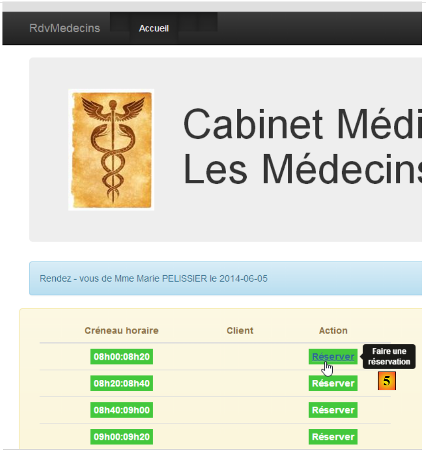 |
- بمجرد الحصول على جدول مواعيد الطبيب، يمكن حجز موعد [5]؛
 |
- في [6]، يتم اختيار المريض للموعد وتأكيد هذا الاختيار في [7]؛
 |
بمجرد تأكيد الموعد، يتم إرجاعنا تلقائيًا إلى التقويم حيث يتم الآن تسجيل الموعد الجديد. ويمكن حذف هذا الموعد لاحقًا في [7].
تم وصف الوظائف الرئيسية. وهي بسيطة. أما الوظائف التي لم يتم وصفها فهي وظائف التنقل للعودة إلى عرض سابق. لنختتم بإدارة اللغة:
 |
- في [1]، ننتقل من الفرنسية إلى الإنجليزية؛
 |
- إلى [2]، تتحول الواجهة إلى اللغة الإنجليزية، بما في ذلك التقويم؛
3.8.6. الوحدة النمطية [main.js]
تحدد الوحدة النمطية [main.js] وحدة Angular التي ستتحكم في التطبيق:
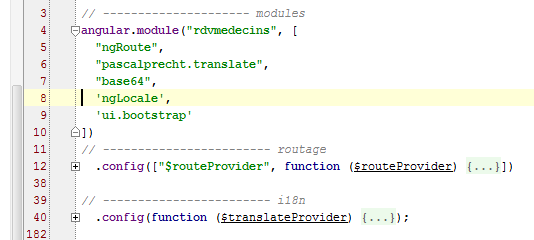 |
- السطر 4: يُسمى الوحدة النمطية [rdvmedecins]؛
- السطر 5: تُستخدم الوحدة النمطية [ngRoute] لتوجيه الوحدة النمطية URL؛
- السطر 6: تُستخدم الوحدة النمطية [translate] لتدويل النصوص؛
- السطر 7: تُستخدم الوحدة النمطية [base64] لترميز السلسلة 'login:password' باستخدام Base64؛
- السطر 8: تُستخدم الوحدة النمطية [ngLocale] لتدويل التقويم؛
- السطر 9: تُستخدم الوحدة النمطية [ui.bootstrap] للتقويم؛
- السطر 12: تكوين المسارات؛
- السطر 40: تدويل الرسائل؛
3.8.7. وحدة التحكم في الصفحة الرئيسية
لنتذكر الرمز HTML الخاص بالصفحة الرئيسية [app.html]:
<body ng-controller="appCtrl">
<div class="container">
...
السطر 1، يتم التحكم في كامل نص (body) الصفحة الرئيسية بواسطة وحدة التحكم [appCtrl]. وبحكم موقعها، فإنها تُعتبر وحدة التحكم العامة والرئيسية للتطبيق. وكما تم شرحه في الفقرة 3.7.15، فإن النموذج الذي تنشئه وحدة التحكم هذه يتم توريثه إلى جميع العروض التي سيتم إدراجها في الصفحة الرئيسية.
وفيما يلي كودها:
angular.module("rdvmedecins")
.controller("appCtrl", ['$scope', 'config', 'utils', '$location', '$locale',
function ($scope, config, utils, $location, $locale) {
// التصحيح
utils.debug("[app] init");
// ----------------------------------------تهيئة الصفحة
// قوالب الصفحات #
$scope.app = {waitingTimeBeforeTask: config.waitingTimeBeforeTask};
$scope.login = {};
$scope.home = {};
$scope.agenda = {};
$scope.resa = {};
// قالب الصفحة الحالية
var app = $scope.app;
...
// ---------------------------------- الطرق
// إلغاء المهمة الحالية
app.cancel = function () {
...
};
// إنهاء الاتصال
app.deconnecter = function () {
...
};
// يجب أن يبقى هذا الرمز هنا لأنه يشير إلى الدالة [cancel] السابقة
app.waiting = {title: {text: config.msgWaitingInit, values: {}}, cancel: app.cancel, show: true};
}])
;
تحدد الأسطر من 10 إلى 14 النماذج الخمسة المستخدمة في التطبيق:
app.html | appCtrl | |
login.html | loginCtrl | |
home.html | homeCtrl | |
resa.html | resaCtrl | |
agenda.html | agendaCtrl |
من المهم أن نفهم أن الكائن [$scope]، باعتباره نموذج وحدة التحكم للصفحة الرئيسية، يتم توريثه إلى جميع العروض ووحدات التحكم. وبالتالي، فإن وحدة التحكم [loginCtrl] يمكنها الوصول إلى عناصر [$scope.app, $scope.login, $scope.home, $scope.resa, $scope.agenda]. بعبارة أخرى، يمكن لوحدة التحكم الوصول إلى نماذج وحدات التحكم الأخرى. يتجنب التطبيق قيد الدراسة استخدام هذه الإمكانية بعناية. وهكذا، على سبيل المثال، تعمل وحدة التحكم [loginCtrl] مع نموذجين فقط:
- نموذجه الخاص [$scope.login]؛
- ونموذج وحدة التحكم الأم [$scope.app]؛
وينطبق الأمر نفسه على جميع وحدات التحكم الأخرى. سيُستخدم النموذج [$scope.app] كذاكرة مشتركة بين وحدات التحكم المختلفة. وعندما يتعين على وحدة التحكم C1 إرسال معلومات إلى وحدة التحكم C2، يتم ذلك على النحو التالي:
في وحدة التحكم [C1]:
في وحدة التحكم [C2]:
في كلتا الحالتين، يتم توريث $scope من وحدة التحكم [appCtrl]، وبالتالي فهو متطابق (باعتباره مؤشرًا) في كل من [C1] و[C2]. غالبًا ما يُشار إلى الكائن [$scope.app]، الذي يعمل كذاكرة مشتركة بين وحدات التحكم، باسم session في التعليقات، على غرار «الجلسة» المستخدمة في تطبيقات الويب التقليدية والتي تشير إلى الذاكرة المشتركة بين الطلبات المتتالية HTTP.
لنعد إلى كود وحدة التحكم [appCtrl]:
// قوالب # الصفحات
$scope.app = {waitingTimeBeforeTask: config.waitingTimeBeforeTask};
$scope.login = {};
$scope.home = {};
$scope.agenda = {};
$scope.resa = {};
// قالب الصفحة الحالية
var app = $scope.app;
// يجب أن تظل [app.debug] و [utils.verbose] متزامنتين دائمًا
app.debug = utils.verbose;
app.debug.on = config.debug;
// لا يوجد عنوان للصفحة في الوقت الحالي
app.titre = {show: false};
// لا توجد أشرطة التنقل
app.navbarrun = {show: false};
app.navbarstart = {show: false};
// لا توجد أخطاء
app.errors = {show: false};
// اللغة الافتراضية
angular.copy(config.locales['fr'], $locale);
// العرض الحالي
app.view = {url: undefined, model: {}, done: false};
// المهمة الحالية
app.task = app.view.model.task = {action: utils.waitForSomeTime(app.waitingTimeBeforeTask), isFinished: false};
- السطر 8: سيكون [$scope.app] نموذج الصفحة الرئيسية. وسيكون أيضًا الذاكرة المشتركة بين وحدات التحكم المختلفة. بدلاً من كتابة [$scope.app.champ=value] في كل مكان، يتم تعيين المؤشر [$scope.app] للمتغير [app]، ومن ثم نكتب [app.champ=value]. يجب فقط تذكر أن [app] هو النموذج المعروض في الصفحة الرئيسية؛
- السطر 11: [app.debug.on] هو متغير منطقي يتحكم في وضع debug للتطبيق. افتراضيًا، تكون قيمته true. وترتبط قيمته بخانة الاختيار [debug] في أشرطة التنقل؛
- السطر 15: يتحكم [app.navbarrun.show] في عرض شريط التنقل التالي:

- السطر 16: [app.navbarstart.show] يتحكم في عرض شريط التنقل التالي:
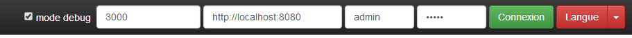
- السطر 18: [app.errors] هو قالب شريط الأخطاء؛

- السطر 22: سيحتوي [app.view] على معلومات حول العرض الحالي، وهو العرض الذي يتم عرضه حاليًا بواسطة العلامة [ng-view] في الصفحة الرئيسية. وسنقوم بتدوين المعلومات التالية فيه:
- [url]: URL للطريقة الحالية، على سبيل المثال [/agenda]؛
- [model]: نموذج العرض الحالي، على سبيل المثال [$scope.agenda]؛
- [done]: يشير إلى vrai بأن العرض الحالي قد أنهى عمله وأنه يجري الانتقال إلى عرض آخر؛
تُستخدم هذه المعلومات للتحكم في التنقل.
- السطر 24: يطلق مهمة غير متزامنة، وهي انتظار مُحاكى. تتم الإشارة إلى المهمة غير المتزامنة بواسطة مؤشرين هما [app.view.model.task.action] و[app.task]؛
تم استخراج طريقتين في وحدة التحكم [appCtrl]:
// إلغاء المهمة الحالية
app.cancel = function () {
...
};
// إنهاء الاتصال
app.deconnecter = function () {
...
};
- السطر 2: تُستخدم الدالة [app.cancel] لإلغاء المهمة الحالية التي تُعرض بشأنها رسالة انتظار حاليًا. تعرض جميع العروض هذه الرسالة، وبالتالي سيتم إلغاء المهمة هنا؛
- السطر 7: تعيد الدالة [app.deconnecter] المستخدم إلى صفحة المصادقة. توفر جميع طرق العرض، باستثناء طريقة العرض [/login]، هذه الإمكانية؛
الدالة [app.deconnecter] هي كما يلي:
// تسجيل الخروج
app.deconnecter = function () {
// العودة إلى صفحة تسجيل الدخول
$location.path(config.urlLogin);
};
- السطر 4: يتم العودة إلى صفحة تسجيل الدخول الخاصة بـ URL [/login]؛
3.8.8. إدارة المهمة غير المتزامنة
في تطبيقنا، في أي لحظة معينة، ستكون هناك مهمة غير متزامنة واحدة قيد التنفيذ. ومن الممكن أن يكون هناك أكثر من مهمة واحدة. على سبيل المثال، عند بدء تشغيل التطبيق، يطلب التطبيق من خدمة الويب قائمة الأطباء ثم قائمة العملاء من خلال طلبين متتاليين HTTP. يمكننا القيام بنفس الشيء باستخدام طلبين متزامنين HTTP. توفر Angular الأدوات اللازمة لإدارة ذلك. لكننا لم نختر هذا الخيار هنا.
يتم إلغاء المهمة قيد التنفيذ باستخدام الكود التالي في وحدة التحكم [appCtrl]:
// إلغاء المهمة الحالية
app.cancel = function () {
utils.debug("[app] cancel task");
// إلغاء المهمة غير المتزامنة للعرض الحالي
var task = app.view.model.task;
task.isFinished = true;
task.action.reject();
...
};
- السطر 5: يتم البحث عن المهمة في [app.view.model.task]. كما ستحرص جميع وحدات التحكم على أن تتم الإشارة إلى مهامها غير المتزامنة بواسطة هذا الكائن؛
- السطر 6: للإشارة إلى أن المهمة قد انتهت؛
- السطر 7: لإنهاء المهمة بفشل. تختلف هذه الصيغة عن تلك المستخدمة في أمثلة Angular التي تمت دراستها:
- في الأمثلة، كان الكائن [task] هو كائن [$q.defer()] الذي كان من الممكن إنهاؤه؛
- في الإصدار النهائي، الكائن [task] هو كائن يحتوي على الحقول [action, isFinished] حيث [action] هو الكائن [$q.defer()] الذييمكن إنهاؤه، و [isFinished] هو قيمة منطقية تشير إلى أن الإجراء قد اكتمل؛
لنستعرض دورة حياة الكائن [task] من خلال مثال. عند البدء، بعد وحدة التحكم [appCtrl]، تتولى وحدة التحكم [loginCtrl] زمام الأمور لعرض العرض [views/login.html]. وفيما يلي كود التهيئة الخاص بها:
// استرداد النموذج الأصلي
var login = $scope.login;
var app = $scope.app;
// العرض الحالي
app.view = {url: config.urlLogin, model: login, done: false};
في السطر 5، نجد [model=login]. وهذا يعني أنه عند تعديل الكائن [login]، يتم تعديل الكائن [app.view.model] وبالتالي [$scope.app.view.model]. عندما نرغب في إجراء انتظار محاكى في وحدة التحكم [loginCtrl]، نكتب:
// انتظار مُحاكى
var task = login.task = {action: utils.waitForSomeTime(app.waitingTimeBeforeTask), isFinished: false};
عند إضافة الحقل [task] إلى الكائن [login]، فإنه يتم إضافته إلى الكائن [$scope.app.view.model]. إذا ألغى المستخدم عملية الانتظار، فإن الرمز الموجود في [appCtrl.cancel]:
// نموذج الصفحة الحالية
var app = $scope.app;
...
var task = app.view.model.task;
task.isFinished = true;
task.action.reject();
سينهي عملية الانتظار المحاكاة بنجاح (الأسطر 4-6).
3.8.9. التحكم في التنقل
قواعد التنقل المستخدمة في التطبيق هي التالية:
أي | نعم | |
/login | نعم إذا أشار المراقب [loginCtrl] إلى أنه انتهى من عمله | |
/home | نعم | |
/agenda | نعم | |
/الصفحة الرئيسية | نعم إذا أشار المراقب [homeCtrl] إلى أنه انتهى من عمله | |
/resa | نعم | |
/agenda | نعم | |
/جدول الأعمال | نعم إذا أشار المراقب [homeCtrl] إلى أنه انتهى من عمله | |
/resa | نعم |
يتم تنفيذ ذلك باستخدام الكود التالي:
بالنسبة لـ [agendaCtrl]:

- الأسطر 11-20: تنفيذ قاعدة التنقل؛
- السطر 26: عرض جديد حالي؛
بالنسبة لـ [resaCtrl]:

- الأسطر 12-20: تنفيذ قاعدة التنقل:
- السطر 27: عرض جديد؛
بالنسبة لـ [loginCtrl]:

- لا يوجد هنا أي تحكم في التنقل لأن القاعدة تنص على أنه يمكن الوصول إلى URL [/login] من أي مكان. لذا، إذا كتب المستخدم هذا الرابط URL في متصفحه، فسيعمل بغض النظر عن العرض الحالي في ذلك الوقت؛
- السطر 16: العرض الحالي الجديد؛
تم تقديم كود وحدة التحكم [homeCtrl] في الفقرة 3.8.7.
وأخيرًا، بالنسبة لقاعدة مثل:
/home | نعم، إذا أشار وحدة التحكم [homeCtrl] إلى أنها انتهت من عملها |
فيما يلي مثال على رمز يقوم بالانتقال من URL [/home] إلى URL [/agenda]:
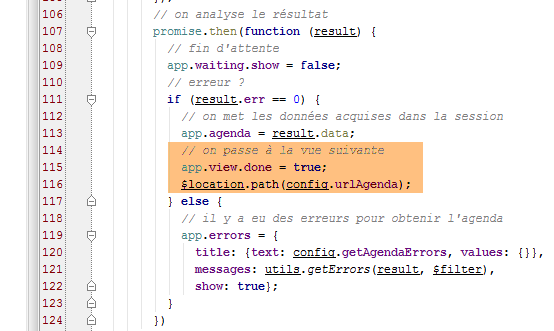 |
فيما سبق، نحن في الأسلوب [afficherAgenda] الخاص بوحدة التحكم [homeCtrl]. طلب المستخدم جدول مواعيد أحد الأطباء.
- السطر 107: وعد المهمة HTTP؛
- السطر 109: تم تهيئة المتغير [app] بقيمة [$scope.app]. وكما رأينا سابقًا، يُستخدم هذا الكائن الأخير كنموذج لعرض [app.html]. كما يُستخدم هذا النموذج [$scope.app] لتخزين المعلومات التي يجب مشاركتها بين العروض؛
- السطر 111: يتم تحليل رمز الخطأ الذي أرسلته المهمة؛
- السطر 113: يتم وضع النتيجة [result.data] في النموذج [app]؛
- السطر 116: سيقوم وحدة التحكم [homeCtrl] بتسليم زمام الأمور إلى وحدة التحكم [agendaCtrl]. ويُبلغه بأنه قد أنهى عمله باستخدام رمز السطر 115. وسيتم استخدام هذا الرمز من قبل وحدة التحكم [agendaCtrl] بالطريقة التالية:

- السطر 11: يتم استرداد الكائن [$scope.app.view]؛
- السطر 15: معالجة الحقل [$scope.app.view.done] الذي تم تهيئته بواسطة [homeCtrl]؛
3.8.10. الخدمات
 |
الخدمات [config, utils, dao] هي تلك التي تم وصفها سابقًا عند عرض Angular:
- تم تقديم الخدمة [config] في الفقرة 3.7.4؛
- تم تقديم الخدمة [utils] في الفقرة 3.7.5؛
- تم تقديم الخدمة [dao] في الفقرة 3.7.6؛
وللتذكير، نورد فيما يلي هيكل هذه الخدمات:
الخدمة [config]
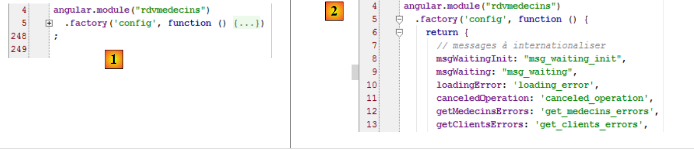 |
- في [1]: نلاحظ أن الكود يتكون من حوالي 250 سطرًا. ويتمثل الجزء الأساسي من هذا الكود في إخراج مفاتيح الرسائل الدولية [2] إلى ملف خارجي. ونحن نتجنب تضمين هذه المفاتيح بشكل ثابت في الكود؛
الخدمة [utils]
 |
- السطر 8: لم نكن قد صادفنا بعد المتغير [verbose]. وهو يتحكم في الدالة [debug] بالطريقة التالية:
 |
- الأسطر 22-25: لا تقوم الدالة [utils.debug] بأي شيء إذا كانت قيمة [verbose.on] تساوي false. ترتبط هذه المتغير بمتغير في وحدة التحكم [appCtrl]:
 |
- السطر 21: يأخذ [app.debug] قيمة المؤشر [utils.verbose]. وبالتالي، فإن أي تعديل يتم إجراؤه على [app.debug] سيُجرى أيضًا على [utils.verbose]؛
- السطر 22: يتم أخذ القيمة الأولية لـ [app.debug.on] من ملف التكوين. القيمة الافتراضية هي true.. وقد تتغير هذه القيمة بمرور الوقت. حيث يمكن للمستخدم تغييرها من خلال أشرطة التنقل:
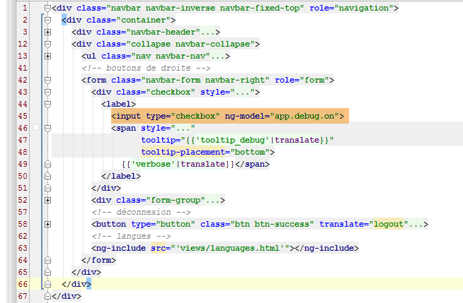 |
- السطر 45: تتيح خانة اختيار (type=checkbox) تغيير قيمة [app.debug.on] (السمة ng-model)؛
خدمة [dao]
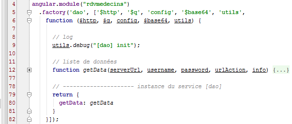 |
3.8.11. التوجيهات
 |
التوجيهات [errors, footable, list, waiting] هي تلك التي تم وصفها سابقًا عند عرض Angular:
- تم تقديم التوجيه [footable] في الفقرة 3.7.8.6؛
- تم تقديم التوجيه [list] في الفقرة 3.7.12؛
- تم إدخال التوجيهات [errors] و [waiting] في الفقرة 3.7.14؛
لم نكن قد صادفنا التوجيه [debug] من قبل. وهو كما يلي:
 |
الملف [debug.html] المشار إليه في السطر 11 هو التالي:
- السطر 2: تعرض التوجيهية [debug] قالبها بتنسيق JSON في شريط Bootstrap (السطر 1)؛
لا تُستخدم هذه التوجيهات إلا في الصفحة الرئيسية [app.html]:
 |
- يُستخدم التوجيه [debug] في السطر 35. وبالتالي، فإنه يعرض الشكل JSON للقالب [$scope.app] عند التواجد في وضع التصحيح (السمة ng-show). وهذا يعطي نتائج مثل التالية:
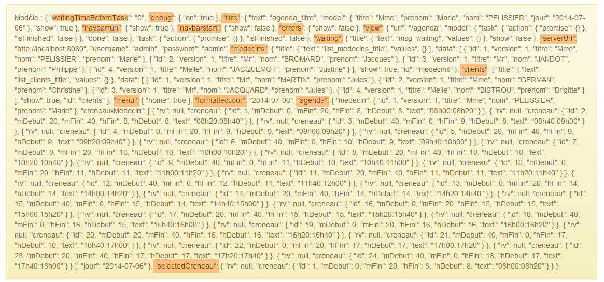 |
يتطلب تفسير ذلك معرفة جيدة بالكود، ولكن بمجرد اكتساب هذه المعرفة، تصبح المعلومات المذكورة أعلاه مفيدة في عملية التصحيح. وقد تم هنا تمييز عناصر النموذج [$scope.app] المعروض. تجدر الإشارة إلى أن [$scope.app] هي الذاكرة المشتركة بين وحدات التحكم؛
- [waitingBeforeTask]: وقت الانتظار المُحاكى قبل أي طلب HTTP؛
- [debug]: وضع التصحيح - يكون بالضرورة true إذا تم عرض هذا الشريط؛
- [navbarrun]: قيمة منطقية تتحكم في عرض شريط التنقل التالي:

- [navbarstart]: قيمة منطقية تتحكم في عرض شريط التنقل التالي:
- [errors]: نموذج للتوجيه [errors]؛
- [view]: يغلف معلومات عن العرض المعروض حاليًا؛
- [waiting]: نموذج للتوجيه [waiting]؛
- [serverUrl, username, password]: معلومات تسجيل الدخول إلى خدمة الويب؛
- [medecins]: نموذج للتوجيه [list] المطبق على الأطباء؛
- [clients]: نفس الشيء بالنسبة للعملاء؛
- [menu]: يتحكم في خيارات القائمة المعروضة. يتم تعريف هذه الخيارات في [navbar-run.html]:
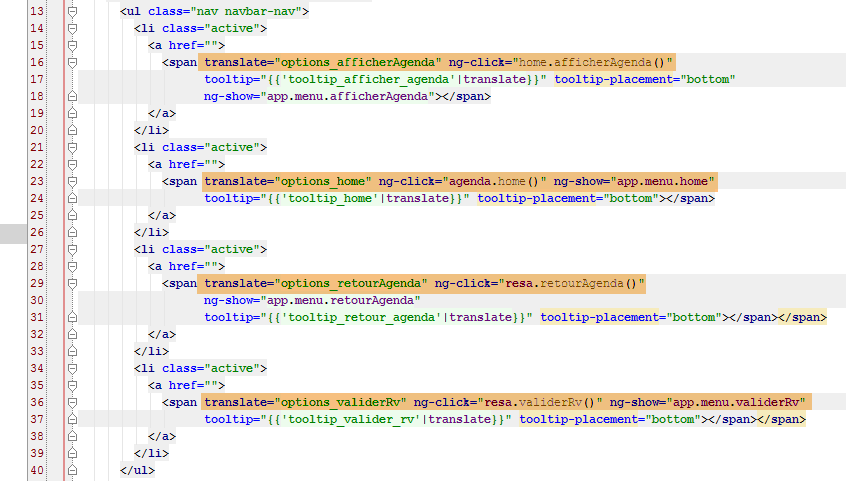
توجد خيارات القائمة في الأسطر 16 و23 و29 و36.
- [formattedJour]: اليوم المختار في التقويم بتنسيق «aaaa-mm-jj»؛
- [agenda]: جدول مواعيد الطبيب. ويحتوي هذا الجدول على فترات متاحة (rv==null) وأخرى محجوزة. وبالنسبة للأخيرة، يظهر اسم العميل الذي قام بالحجز؛
- [selectedCreneau]: الفترة الزمنية المختارة لإجراء الحجز؛
3.8.12. وحدة التحكم [loginCtrl]
 |
وحدة التحكم [loginCtrl] مرتبطة بالعرض [views/login.html] الذي ينتج، عند ربطه بالصفحة الرئيسية، الصفحة التالية:

وحدة التحكم [loginCtrl] هي كما يلي:
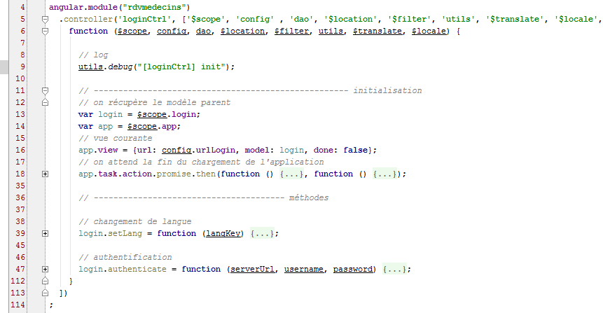
- السطر 13: سيكون [login] نموذج العرض الحالي؛
- السطر 14: [app] هي الذاكرة المشتركة بين وحدات التحكم؛
- السطر 16: يتم ملء [app.view] بمعلومات العرض الحالي؛
سيظهر رمز التهيئة هذا في كل وحدة تحكم. بالنسبة لوحدة التحكم C1 الخاصة بعرض V1 الذي يحمل النموذج M1، سيكون رمز التهيئة كما يلي:
- السطر 18: ربما نتذكر أن [appCtrl] قد أطلقت انتظارًا محاكىًّا يُشار إليه بواسطة الكائن [app.task.action]. نستخدم [promise] الخاصة بهذه المهمة لانتظار انتهائها؛
- السطر 39: تتولى الطريقة [login.setLang] إدارة تغيير اللغات؛
- السطر 47: تتولى الطريقة [login.authenticate] إدارة مصادقة المستخدم؛
لنلقِ نظرة على الخطوات الرئيسية في طريقة المصادقة:
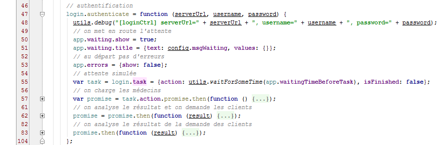
- السطران 50-51: [app.waiting] هي قالب شريط الانتظار؛
- السطر 53: [app.errors] هو قالب شريط الأخطاء؛
- السطر 55: يتم إطلاق عملية انتظار محاكاة. يُشار إلى الكائن [action, isFinished] بواسطة [login.task]، وبالتالي، وبما أن [app.view.model=login] موجود، يُشار إليه بواسطة [app.view.model.task]. تجدر الإشارة إلى أن هذا هو الشرط اللازم لإلغاء المهمة؛
- السطر 57: بعد انتهاء فترة الانتظار المحاكاة، يتم تحميل الأطباء؛
- السطر 62: عند الحصول على طلب الأطباء، يتم تحليل هذا الطلب. إذا تم الحصول على الأطباء، يتم عندئذٍ طلب العملاء؛
- السطر 83: يتم تحليل الرد الذي تم الحصول عليه وعرض النتيجة النهائية. ويتم ذلك باستخدام الكود التالي:

- السطر 87: يتم تعيين القيمة المنطقية [task.isFinished] إلى true في الحالات التالية:
- قام المستخدم بإلغاء الانتظار؛
- انتهى طلب الأطباء بحدوث خطأ؛
- الأسطر 91-98: الحالة التي تم فيها الحصول على العملاء؛
- السطر 93: [app.clients] هو نموذج التوجيه [list] الذي سيعرض العملاء في قائمة منسدلة؛
- الأسطر 97-98: نستعد لتغيير العرض (السطر 98) ولكن قبل ذلك نشير إلى أن وحدة التحكم قد أنهت عملها (السطر 97). نذكر أن [$scope.app.view.done] تُستخدم للتحكم في التنقل؛
النقطة المهمة التي تجدر الإشارة إليها هنا هي أن الأطباء والعملاء قد تم تخزينهم مؤقتًا في ذاكرة التخزين المؤقت للمتصفح. ولن يتم طلبهم بعد الآن من خدمة الويب.
3.8.13. المراقب [homeCtrl]
 |
وحدة التحكم [homeCtrl] مرتبطة بعرض [views/home.html] الذي ينتج، عند ربطه بالصفحة الرئيسية، الصفحة التالية:
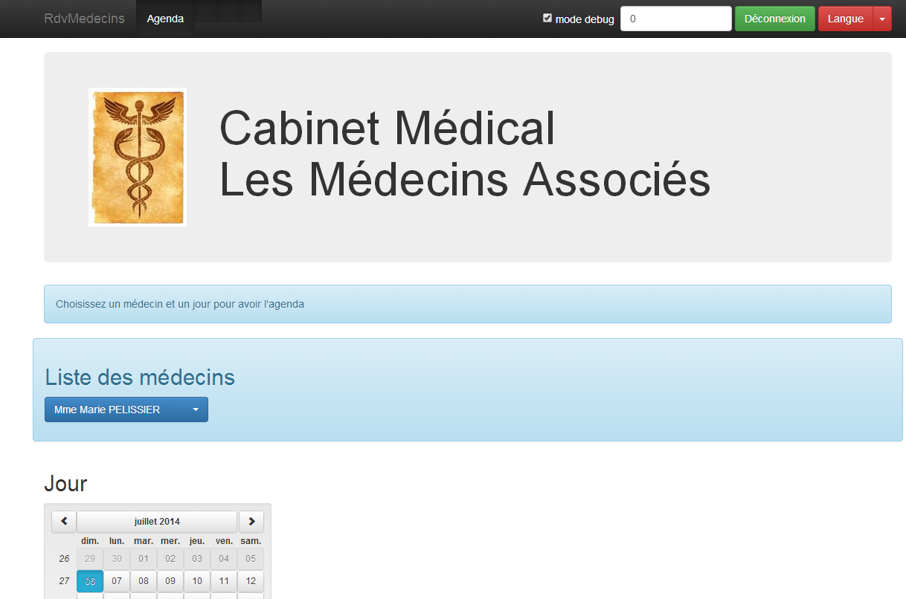
هيكل عنصر التحكم [homeCtrl] هو كما يلي:

- الأسطر 12-20: هي عنصر التحكم في التنقل. تتضمنه جميع وحدات التحكم باستثناء [loginCtrl] لأن الصفحة [/login.html] يمكن الوصول إليها دون شروط؛

- الأسطر 25-28: نجد هنا أسطرًا مشابهة لتلك الموجودة في عنصر التحكم [loginCtrl]. وبذلك يكون [home] هو نموذج العرض المرتبط بعنصر التحكم؛
- السطر 33: سمة لم نكن قد صادفناها من قبل. وهي نموذج شريط العنوان الخاص بالعرض:

- السطر 36: [home.datepicker] هو نموذج التقويم؛
- السطر 38: [app.menu] هو نموذج قائمة شريط التنقل. هنا سيكون الخيار [Agenda] موجودًا. وهو الذي يسمح بالاطلاع على جدول مواعيد الطبيب؛
وأخيرًا، يتوفر للمراقب طريقتان:

تمت مناقشة عرض جدول المواعيد (السطر 51) في الفقرة 3.7.8.
3.8.14. وحدة التحكم [agendaCtrl]
 |
يرتبط عنصر التحكم [agendaCtrl] بالعرض [views/agenda.html] الذي ينتج، عند ربطه بالصفحة الرئيسية، الصفحة التالية:

هيكل عنصر التحكم [agendaCtrl] هو كما يلي:

- تتولى الأسطر من 10 إلى 20 التحكم في التنقل؛

- الأسطر 23-26: سيكون [agenda] هو نموذج العرض المرتبط بوحدة التحكم [agendaCtrl]؛
- الأسطر 36-44: [app.titre] هو قالب شريط العنوان التالي:

- السطر 46: ستحتوي القائمة على الخيار [Home / Accueil]:

طرق وحدة التحكم هي كما يلي:

- السطر 95: تمت معالجة الطريقة [agenda.supprimer] في الفقرة 3.7.9؛
الطريقة [agenda.home] هي طريقة تنقل بحتة:

الطريقة [agenda.reserver] هي كما يلي:

- السطر 73: معلمة الدالة [reserver] هي رقم الفترة الزمنية (id)؛
- الأسطر 77-86: تهدف إلى العثور على الفترة الزمنية التي تحمل هذا المعرف؛
- السطر 82: يتم وضع الفترة الزمنية التي تم العثور عليها في الذاكرة المشتركة [app]. وسيستفيد وحدة التحكم [resaCtrl] التي ستتولى زمام الأمور (السطر 90) من هذه المعلومات لعرض شريط العنوان الخاص بها؛
- السطران 89-90: الانتقال إلى [/resa.html]؛
3.8.15. وحدة التحكم [resaCtrl]
 |
وحدة التحكم [resaCtrl] مرتبطة بالعرض [views/resa.html] الذي ينتج، عند ربطه بالصفحة الرئيسية، الصفحة التالية:

هيكل عنصر التحكم [resaCtrl] هو كما يلي:

- الأسطر 12-20: عنصر التحكم في التنقل؛

- الأسطر 24-27: سيكون [resa] نموذج العرض الحالي؛
- الأسطر 38-45: [app.titre] هو قالب شريط العنوان التالي:

- السطر 47: يتم عرض خيارين من القائمة:

طرق وحدة التحكم هي كما يلي:
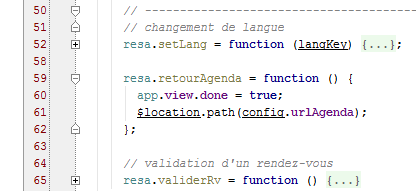
تمت دراسة الطريقة [resa.valider] في الفقرة 3.7.9.
3.8.16. إدارة اللغات
توفر جميع وحدات التحكم الطريقة التالية: [setLang]:

كان من الممكن تحليلها في وحدة التحكم [appCtrl].